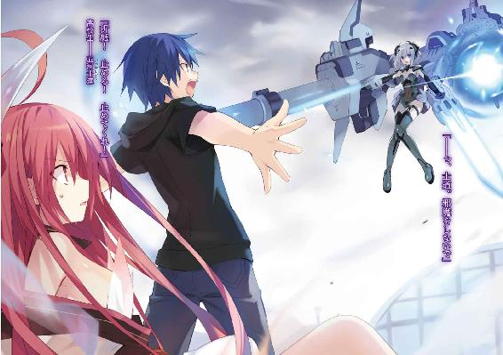

| デート・ア・ライブ 4 五河シスター <デート・ア・ライブ> (富士見ファンタジア文庫) | |
| 橘 公司 & つなこ | |
| Kadokawa / 富士見書房 (2012) | |



デート・ア・ライブ４
五河シスター
橘 公司

富士見ファンタジア文庫
本作品の全部または一部を無断で複製、転載、配信、送信したり、ホームページ上に転載することを禁止します。また、本作品の内容を無断で改変、改ざん等を行うことも禁止します。
本作品購入時にご承諾いただいた規約により、有償・無償にかかわらず本作品を第三者に譲渡することはできません。
本作品を示すサムネイルなどのイメージ画像は、再ダウンロード時に予告なく変更される場合があります。
本作品は縦書きでレイアウトされています。
また、ご覧になるリーディングシステムにより、表示の差が認められることがあります。
口絵・本文イラスト つなこ
第六章 時穿つ焔
来禅高校の屋上は今、影に覆われていた。
何の比喩でもない。時刻は一七時、傾き始めたとはいえ、未だ太陽は空に輝いている。加え、彼の恒星と地上の間に、光を隔てる雲を見ることもできない。
だというのに、五河士道がいるその場所は、まるでそこだけが辺りの景色から切り取られたかのように、薄暗い色が蟠っていたのである。
今ならばわかる。──それは。士道たちが世界を殺す災厄の大きく開けられた口の上に立っていることを示しているのだと。
影の主の気まぐれか心変わり、あとはまあ、不慮の過失。そんなもの一つで容易く存在を食い尽くされてしまいかねない危険をはらんだ領域なのだと。
「......ッ」
そんな世界と隔絶された空間の中で。士道は目を見開き、息を詰まらせていた。
身動きはおろか、身じろぎ一つさえできない。否、それどころか、言葉を発することさえ困難だった。
理由は至極単純。士道は今、幾人もの少女に手を、足を、身体を拘束され、地面にうつぶせに押さえつけられていたのだ。ご丁寧に口の中には細い指が差し込まれ、あごと舌までも固定されている。
──明らかに、異様な光景だった。
屋上を埋め尽くす幾人もの黒衣の少女。それらが全て、全く同じ貌をしていたのである。
左右不均等に結われた黒髪に、ともすれば病的にさえ見える生白い肌。そして──文字盤と針のある、時計のような左眼。
その少女たちは全員が、一分の狂いなく『時崎狂三』その人であった。
辺りには、十香と折紙の姿も見える。二人とも士道と同じように幾人もの狂三に取り押さえられ、苦しげに顔を歪めていた。
士道の位置からは見取ることができないが、先ほど撃ち落とされた真那もまた、狂三の壁の向こうにいるはずである。
絶体絶命。こちらの戦力は完全に無力化されている上、圧倒的なまでの兵力差がそこにのし掛かっていた。
──だが。
「ぁ......」
そんな状況の中、士道は全く別のモノに目を奪われていた。
舌を指で挟み込まれている中で、どうにかのどから言葉にならない声だけを絞り出す。
狂三が片手を高く掲げ、空間震を起こそうとした瞬間。
それが、士道たちの頭上に現れたのだ。
それは最初──太陽のように見えた。本物の陽光が届かない影の領域を照らすかのごとく、空に突如として、濃密な焔の塊が出現したのである。
それだけでも士道の目を釘付けにするには十分だった。
だが......その焔の正体を認識した瞬間、士道は脳幹に電流を流されたかのような衝撃を覚えた。視界に火花が散り、鋭い痛みが頭の奥底に生まれる。まるで視覚が得た致命的な情報を、脳が拒絶でもするかのような感覚だった。
それは、少女だった。
小さな少女が、身体の周囲に焔を纏わせながら空に立っていたのである。
袖が半ばから揺らめく火焔に変貌した、白い和装。天女の羽衣のごとく身体に絡みついた炎熱の帯。そして、側頭部より伸びた、二本の無機的な角。
その姿。その力。それら全てが、少女がただの人間でないことを如実に表していた。
──精霊。世界を殺す災厄。
士道の知識の中には、それ以外に、少女を示す言葉がなかった。
否──正確に言うのであればもう一つだけ。
彼女のことを一言で表す名を、士道は知っていた。
「琴、里......」
舌を動かせない状態で、その名を発する。
琴里。五河琴里。何年もの時を共に過ごした少女の顔を見間違えるはずはない。
その精霊は、どこからどう見ても士道の妹──琴里だった。
「っ......なんで......」
意味がわからず、士道は眉根を寄せた。琴里は士道の妹。当然のごとく人間である。精霊であるはずがない。
だが、今視界に展開された光景が、その思考を全て真っ向から否定していた。
そして、それだけではない。
士道は必死に否定をしながらも......どこかでこの琴里の姿を見たことがある気がしていたのである。記憶に靄がかかってはっきりとは思い出せないが、琴里を目にした瞬間、頭の中で何かが弾けるような感覚が襲ってきたのだ。そう、確か、これは──
「......どォなたですのォ？」
と、そんな士道の思考を遮るように、不意に前方から声が響いた。
巨大な時計を背にし、右手に歩兵銃、左手に短銃を握った狂三が、不機嫌そうに眉を歪めながら上空の琴里を睨んでいる。
「邪魔をしないでいただけませんこと？ せっかくいいところでしたのに」
「悪いけれど、そういうわけにはいかないわね。あなたは少しやりすぎたわ。──跪きなさい。愛のお仕置きタイム開始よ」
右手に出現させた巨大な戦斧を肩に担ぐようにしながら、琴里が鼻を鳴らす。
狂三は琴里の言葉がさぞ予想外だったのだろう、しばしキョトンと目を丸くしていたが、すぐに堪えきれないといった様子で哄笑をのどの奥から漏らした。
「く、くひひひ、ひひひひひひひッ......面白い方ですわねぇ。お仕置き、ですの？ あなたが？ わたくしをォ？」
「ええ。お尻ペンペンされたくなかったら、分身体と天使を収めて大人しくなさい」
琴里が言うと、狂三はさらに可笑しそうに嗤った。周囲に立ち並んだ無数の狂三たちも、それに合わせるようにけたけたと身を捩る。
「ひひひ、ひひ。随分とご自分の力に自信がおありのようですけれど、過信は身を滅ぼしますわよォ？ わたくしの〈刻々帝〉は──」
「御託はいいから早く来なさい黒豚」
琴里が面倒そうに息を吐くと、楽しげに笑っていた狂三の頬がぴくりと動いた。
屋上中に展開した無数の狂三が、一斉にぎろりと上空の琴里を睨め付ける。
そしてそれと同時に、前方から苦悶の声が響いてきた。どうやら十香と折紙が狂三の分身体に延髄を打たれ、気絶させられたらしい。
「上等ですわ。一瞬で食らい尽くして──差し上げましてよォッ！」
狂三がのどを震わせる。瞬間、屋上を埋め尽くしていた狂三の分身体が一斉に脚を縮め、空高く跳躍して琴里に迫った。
空に向かって放たれる、無数の黒いシルエット。それは突進とか突撃というよりも、無慈悲な機銃掃射や散弾銃の連射といった方が適当に思えた。圧倒的な物量で相手を圧殺する暴虐なる数の悪魔。人間大の巨大な弾頭が、次々と琴里に迫る。
「──ふん」
しかし琴里は鬱陶しげに鼻を鳴らすと、担いでいた戦斧をゆっくりと持ち上げた。
琴里の身の丈を優に超える漆黒の棍の先端に、空気を焦がす焔が蟠り、刃の形を作っている。それは琴里の動作に合わせて赤い軌跡を残しながら、さらにその輝きを増した。
「──〈灼爛殲鬼〉」
そして狂三の大群が目前にまで迫った瞬間、琴里は静かに言葉を発し、焔の戦斧を凄まじい勢いで前方に振り抜いた。風を薙ぐ音が、士道のところにまで響いてくる。
「あッははははは！ 無ゥ駄ですわよう！」
それに応ずるように、狂三がまたも哄笑を上げた。
如何に巨大な戦斧とはいえ、全方位から迫った何人もの狂三を薙ぎ払うことなどできるはずがない。前方の数体を屠ったところで、一瞬あとにはその他の狂三に噛み付かれてしまうであろうことは想像に難くなかった。
だが。
「きひひ──ひィ......？」
不意に、狂三の笑みが歪んだ。
琴里が〈灼爛殲鬼〉を振り抜いた瞬間、その先端に生えた焔の刃が揺らめき──それと同時に、琴里に迫っていた無数の狂三の首が、あるいは腕が、あるいは上半身そのものが、一斉に宙に躍ったのである。
『ぁ、ぇ......？』
幾人もの狂三が切り離された自分の部品を見つめ、呆然と声を発する。次の瞬間には、それら全てが炎に包まれ、地に触れる前に燃え尽きた。
「............」
琴里が無言で視線を下──士道の方に落とし、もう一度〈灼爛殲鬼〉を振る。すると焔が蛇のようにのたうち、士道に群がっていた狂三たちの身体を切り裂いていった。
凄まじい断末魔とともに、身体にかかっていた負荷が消え去る。
「──っ」
士道は口の中に差し入れられていた指を吐き出すと、幾度か咳き込んだ。
次いで〈灼爛殲鬼〉に切り裂かれた狂三たちの身体が、先ほどと同様に炎に包まれる。
「ぅ熱っつ......！」
士道は慌てて身を起こすと、制服に落ちた火の粉をバンバンとはたき落とした。
と、そんな士道と狂三の間に、空からゆっくりと琴里が降り立ち、狂三に向かって〈灼爛殲鬼〉を構えた。──まるで、士道を守るかのように。
「こ、琴里......これは一体──」
「大人しくしてなさい、士道。可能なら狂三の隙を衝いてこの場から逃げて。今のあなたは──簡単に死んじゃうんだから」
「は......？ それってどういう......」
しかし士道の問いは、前方から響いた狂三の哄笑によって掻き消された。
「ひひ、ひひひひひひひひひ......ッ！ やるじゃあありませんの」
銃を握った狂三が眉を撥ね上げ、唇の端を歪める。
「でェもォ、まさかこれで終わりだなんて思ってはおられませんわよねえ？」
言って、狂三が巨大な文字盤の前で二丁の銃を構えてみせる。
士道は息を詰まらせた。そうだ。狂三にはまだあの天使が──時を操る〈刻々帝〉があるのである。
「琴里、気をつけろ、あれは......！」
「ふふッ、士道さん、無粋な真似はよしてください──ましッ！」
言うと狂三は〈刻々帝〉の『Ⅰ』の文字盤から漏れ出た影を装填した短銃で、自分のこめかみを撃った。
瞬間、狂三の姿が霞のように掻き消える。
と、その動作と同時に琴里が〈灼爛殲鬼〉をバッと頭の上にやった。すぐに、その位置から甲高い音が鳴り、微かに〈灼爛殲鬼〉が震える。
先刻──狂三と真那が戦っていたときにも見た光景だ。〈刻々帝〉【一の弾】。撃った対象の時間を早める弾である。
影すら追いつかないような速度で、狂三が幾度も琴里に猛襲を仕掛ける。
しかし琴里の〈灼爛殲鬼〉は、焔の刃を俊敏に蠢かせると、その目にも止まらぬ攻撃をことごとく防いだ。
「あッはははははは！ 素晴らしいですわ！ 素晴らしいですわ！ さすがは天使を顕現させた精霊──ッ！ 高鳴りますわ、高鳴りますわッ！」
「ふん......！ 鬱陶しいわね。あなたもレディなら、少しは落ち着きを持ったらどう？」
棍を薙ぐように振り抜き、琴里が言う。そこでようやく士道の目に、〈灼爛殲鬼〉に吹き飛ばされた狂三の姿が見えた。
空中に躍った狂三は不安定な姿勢のままけたけたと笑うと、銃を構え、叫びを上げる。
「ご忠言痛み入りますわ。ではご要望にお応えして、淑やかに殺らせていただくとしましょう。〈刻々帝〉──【七の弾】！」
すると、〈刻々帝〉の『Ⅶ』から影が飛び出し、狂三の銃口に吸い込まれていった。
そして狂三が引き金を引くと同時、漆黒の弾丸が軌跡を描きながら琴里に迫る。
姿勢、速度、距離、どれを見てもかわせるような一撃ではないが、琴里の〈灼爛殲鬼〉はその弾丸をも焔の刃で打ち落とした。
「琴里！」
が──駄目だ。士道は思わず叫んでいた。
【七の弾】。それは先ほど、狂三が真那を仕留めた最悪の一撃である。
防ごうと打ち落とそうと関係ない。その弾は触れた瞬間に──
「ふふ、あはははははははッ！」
狂三の笑い声とともに、琴里の身体がぴくりとも動かなくなった。
手足はもとより、幻想的に揺らめいていた霊装の袖や〈灼爛殲鬼〉の刃、髪の毛の先さえも、空中に躍ったままその場に制止してしまっている。
「ふふふッ、如何な力を持っていようと、止めてしまえば意味がありませんわよ？」
狂三が言うと同時、周囲に残っていた無数の狂三が一斉に銃を構え、琴里に向かって引き金を引いた。
「やめ──」
士道の制止が間に合うはずもない。狂三たちの放った弾丸は無慈悲に琴里に吸い込まれていった。その柔肌に、痛々しい銃痕が刻まれていく。
「それでは、ごきげんよう」
そして最後に、【七の弾】を放った狂三が琴里の目の前に立ち、琴里の眉間に銃口を押し当て、何の逡巡もなく引き金を引いた。
次の瞬間、琴里の身体が動きを取り戻す。
「......ッ！」
琴里の全身に刻まれた傷から、一斉に血が噴き出す。だが琴里には、それに反応を示す暇さえ与えられなかった。最も至近距離から放たれた最後の一撃を眉間に受け、小さな身体を仰向けにその場に倒す。
「琴里......ッ!!」
悲鳴じみた声を上げてその場に駆け寄り、倒れた琴里の身体を抱き起こそうとする。
だが、できなかった。全身を狂三の弾丸で穿たれ、夥しい量の血の海に沈んだ琴里の身体は、触れるだけで崩れてしまうのではないかと思えるほどにぼろぼろだったのである。
生存の望みなど一縷とてない惨状。士道は妹の変わり果てた姿に呆然と手を突いた。
「あ、あ......」
「うふふ、ふふふふふふッ、ああ、ああ、終わってしまいましたわ。せっかく見えた強敵でしたのに。無情ですわ。無常ですわ」
狂三が、芝居がかった調子でくるくると回りながら、可笑しそうに嗤う。
「さあ、さあ、今度こそ士道さんの番ですわ。わたくしに──」
と。そこで狂三は言葉を止めた。
訝しげな顔をして、仰向けに倒れた琴里の方を見つめている。
狂三の視線を追って琴里を見やり、士道もまた、目を見開いた。
「こ、れは──」
呆然と、声を漏らす。琴里の身体に刻まれた無数の銃痕から焔が噴き出し、全身を舐めるように広がっていたのである。
この光景には見覚えがあった。否、正しく言うのであれば──体感したことが、あった。
「......まったく。派手にやってくれたわね」
踵を支点にするように、ぐん、と琴里が不自然極まる動作で身を起こす。
焔が通ったあとには、傷も、血のあとも、霊装の綻びさえも、一切がなくなっていた。
一瞬前まで瀕死の重傷を負っていたとは思えない。今攻撃を受けたのが士道の錯覚だったのではないかと思ってしまうくらいに平然と、頭を数度左右に倒してみせる。
「な──」
さすがにこれには驚いたらしい。狂三が一歩後ずさりながら眉を歪める。
それに気づいたのか、琴里が〈灼爛殲鬼〉を構え直し、狂三を睨み付けた。
「私としては、あなたが恐れ戦いて戦意をなくしてくれるのがベストなのだけれど」
「......ふん、戯れないでくださいま──しッ！」
狂三が身を反らし、両手の銃口を背後に向ける。
すると狂三の左眼の時計がくるくると高速回転し、〈刻々帝〉の『Ⅰ』の文字盤から連続して影が漏れ出て、狂三の銃に吸い込まれていった。
「【一の弾】......ッ！」
狂三は叫ぶと、両の手に握った銃の引き金を連続して引き絞った。屋上に残った狂三たちに、【一の弾】が吸い込まれていく。
数十発の【一の弾】を撃ったのち、狂三は自らに銃口を押し当て、引き金を引いた。
「──ちッ」
琴里は面倒そうに舌打ちをすると、左足を後方にブンと振り、士道の脇腹を蹴った。
「ぐぇ......っ!?」
突然の衝撃に間の抜けた声を発しながら、後方に蹴り飛ばされる。士道は背中と後頭部で地面を擦ってなんとか停止したのち、頭をさすりながら身を起こして声を上げた。
「な、何すん──」
だが、非難の言葉を最後まで吐くことはできなかった。
恐ろしい速度を得た何人もの狂三たちが、琴里を囲うようにびゅんびゅんと飛び回り、拳打を、脚蹴を、あるいは弾丸を浴びせかけていたからだ。
そう。琴里は【一の弾】の力で高速化した狂三たちの猛攻が届く寸前に、貴重なワンアクションを消費して、士道を安全圏まで逃したのである。
「切り裂け──〈灼爛殲鬼〉ッ！」
琴里が吼えると、〈灼爛殲鬼〉はその刃の体積を何倍にも膨れ上がらせ、さらに広範囲にその身を伸ばしていった。
次々と、無数の狂三が焔の刃に薙がれ、裂かれ、貫かれ、その身体を灰と化されていく。
「くッ......」
と、そんな苦悶とともに、狂三が琴里の周囲から離脱する。
どうやら〈灼爛殲鬼〉の攻撃がヒットしたらしい。肩から腹に掛けて、火傷のような切り傷のような、奇妙な痛々しい傷跡ができていた。
「一体──なんなんですの......あなたはァッ！」
すぐに短銃を掲げ、叫ぶ。
「〈刻々帝〉──【四の弾】！」
同時、〈刻々帝〉の『Ⅳ』の文字盤から、狂三の握る銃に影が放たれる。
そして狂三が自らのこめかみに銃口を当てて引き金を引くと、まるで時間を巻き戻すかのように、狂三の身体から傷が消えていった。
それとほぼ同時に、琴里の周囲に飛び交っていた狂三の分身体たちが、悉く燃やし尽くされ、灰となって風に消えていく。
「あら、もう打ち止めかしら？ 案外少なかったわね。もう少し本気を出してくれてもいいのよ？」
琴里が戦斧を肩に担ぎながら、ふふんと鼻を鳴らす。
その物言いに狂三が顔を凄絶に歪ませ、歯をぎりと噛みしめた。
「その言葉──後悔させて差し上げますわッ！ 〈刻々帝〉......ッ!!」
言った瞬間、狂三の左眼が、今までよりもさらに速く回り始めた。
「ッ！ させるかっての......！」
その様子に不穏なものを感じたらしい。琴里が〈灼爛殲鬼〉を振りかぶる。だが──
「──ぁ」
小さな、本当に小さな声をのどから発して、その場に膝をついた。
〈灼爛殲鬼〉の柄を杖のようについてどうにか身体を支えながら、もう片方の手で苦しげに頭を押さえる。
「く......こ、これは......」
「こ、琴里!?」
一体何が起こったのかわからないが、それが琴里の窮地であることは容易に理解できた。思わず叫んでしまう。
「あッはははははははははは！ 悪運尽きましたわ・ねェ！」
狂三が高らかに笑い、〈刻々帝〉の弾が込められた歩兵銃を琴里に向ける。
「く──」
士道は考えるよりも先に駆け出していた。今狂三の銃に込められている弾にどのような力があるのかはわからない。しかし、それが琴里の命を刈り取ろうとする必滅の一撃であることは想像に難くなかった。
狂三が引き金を引く瞬間、琴里の身体を掴んでどうにかその弾から逃れさせる。それが叶わないのであれば、最悪、士道が盾になれればそれでいい......！
──だが。
「............」
狂三が琴里に照準を合わせた瞬間、琴里がすっとその場に立ち上がった。
「っ、琴里！ 大丈夫なのか!?」
問うも、琴里は答えなかった。
ただ静かに──爛々と光る真っ赤な眼で、狂三をジッと睨め付ける。
見慣れたはずのその顔は、なぜだろうか、まったく士道の見知らぬ少女に見えた。
「琴、里......？」
琴里は〈灼爛殲鬼〉を天高く掲げると、その手を離した。
すると〈灼爛殲鬼〉の刃が空気に掻き消え、棍部分のみがその場に静止する。
「〈灼爛殲鬼〉──【砲】」
琴里の声に応えるように、刃を失い棍のみになった〈灼爛殲鬼〉が蠢動した。
柄の部分が本体に収納され、琴里が掲げた右手を包み込むように着装される。
肘から先を長大な棍に覆われた琴里は、その先端を上空の狂三に定めた。
──その姿はまるで、戦艦に備えられた大砲を思わせた。
〈灼爛殲鬼〉がその体表を展開させ、赤い光を放つ。
そして琴里の周囲にまとわりついていた焔が、その先端に吸い込まれていった。
「────!?」
その様子を見てか、琴里に銃口を向けていた狂三は眉をひそめた。今までに見たことのない表情。士道の知識と語彙から相応しい表現を充てるとするなら──それは、恐怖とか戦慄に近いのかもしれなかった。
「わたくしたち!!」
狂三が叫ぶと同時、狂三の影から分身体たちが、二人の間を遮るように這い出てきた。
琴里が、静かに口を開く。
「──灰燼と化せ、〈灼爛殲鬼〉」
その声は、何年も一緒に暮らしている士道が一度も聞いたことのないような、冷たく、平坦なものだった。
次の瞬間──琴里の構えた〈灼爛殲鬼〉から、凄まじい炎熱の奔流が放たれた。
巨大な火山の噴火を数十センチの範囲に凝縮したかのような圧倒的な熱量が、高校の屋上から空の彼方にまで一本の線を引く。辺りが一瞬、一足早い夕日に彩られたかのように真っ赤に染まった。
「ぐ......」
士道は思わず腕で顔を覆った。わずかに空気を吸っただけでも、鼻から口から入った熱気が粘膜を灼き、呼吸を阻害する。琴里の背後にいるにも拘わらず、肌が火に炙られているかのようにちりつき、目を開けているのも困難なほどだった。
数秒ののち、空を灼く炎熱の光線が段々とその体積を減らしていき──琴里の右手に装着された大筒が、過酷な作業を終えた機械のように白い煙を勢い良く吐き出した。
「けほ......っ、けほ......っ」
軽く咳き込んでから視線を上げる。
視界を覆う煙が晴れ──士道は小さく肩を揺らした。
屋上の床やフェンスが凄まじい熱によって融かされ、砲の通ったあとには何も残っていなかったのだが──そこには未だ、狂三と〈刻々帝〉の姿があった。
だがその狂三を護るように這い出た分身体たちは一体残らず灰燼と消え、狂三自身もまた、左腕を失っていた。恐ろしい熱量で消し飛ばされたからだろうか、断面は黒炭のように煤け、血一つ流れてはいない。
また、狂三の背後に浮遊していた〈刻々帝〉も、その巨大な文字盤の四半を貫かれていた。『Ⅰ』『Ⅱ』『Ⅲ』の数字があったと思しき場所が、綺麗に抉り取られている。
「く──ぁ......」
狂三が絞り出すように息を吐き、その場にがくりと膝をつく。
誰が見ても、戦闘が続けられるような状態ではなかった。
──しかし。
「......銃を取りなさい」
琴里が、低い声で唱えながら、再び大砲となった〈灼爛殲鬼〉を狂三に向けた。
「まだ闘争は終わっていないわ。まだ戦争は終わっていないわ。さあ、もっと殺し合いましょう、狂三。あなたの望んだ戦いよ。あなたの望んだ争いよ。──もう銃口を向けられないというのなら、死になさい」
「琴里......？ な、何を言ってるんだ？」
士道は琴里のもとに駆け寄ると、その肩を掴んだ。
「それ以上やったら、本当に死んじまうぞ！ 精霊を殺さずに問題を解決するのが〈ラタトスク〉なんだろ!?」
しかし、琴里は士道の言葉に耳を貸さなかった。再び〈灼爛殲鬼〉の砲門に、焔を引き込んでいく。
「......！ お、おい、琴里！」
士道は琴里の前に回り──息を詰まらせた。
「な......」
冷たく歪んだ双眸に、妖しく光る紅玉の眼。そして口元に浮かんだ、愉悦か恍惚にも近い表情。
──違う。士道は戦慄した。明らかに、いつもの琴里ではない。
それを察した瞬間、士道は駆け出していた。──力無く膝をついた狂三の方へ。
「狂三！」
「士──道、さん......？」
狂三を連れて逃げるような猶予はない。せめて少しでも狂三へのダメージを減らそうと、狂三の前にバッと立ちはだかる。
それと同時に、〈灼爛殲鬼〉から、再び万象を灼き尽くす紅蓮の咆吼が放たれた。
瞬間──
「っ！」
〈灼爛殲鬼〉を構えた琴里が、ハッと目を見開いた。
「おにーちゃん......ッ！ 避けてっ！」
叫び、右手の〈灼爛殲鬼〉を上空に向ける。
だがそこから放たれた火は完全にはその軌道を変えられず──
「────」
目の前が真っ赤に染まったところで、士道の意識は途絶えた。
◇
燃える。燃える。家々が燃える。
燃える。燃える。町々が燃える。
燃える。燃える。世界が燃える。
士道の視界の中で焔が躍り狂う。
ぱちぱちと。めらめらと。ごうごうと。
それでも、士道は足を止めなかった。
（琴里......っ！ 琴里！）
妹の名を呼びながら、ただひたすらに、地獄の底と化した街を走っていく。
そうしていながらも、士道はまだその状況を理解しきれていなかったのかもしれない。
だが、それも仕方のないことだった。何しろ家に戻ろうとしたら、見慣れた街が丸ごと炎に包まれていたのだから。
今日は、琴里の九歳の誕生日だった。そのプレゼントを買いに、士道は駅前まで出かけていたのである。そのおかげで火災を免れたのだから琴里に感謝せざるを得ないが──肝心の琴里がまだ、家に残っているはずだったのだ。
忙しい両親は娘の誕生日だというのに、いつものごとく仕事で家を空けている。今、家には琴里が一人きりなのだ。
泣き虫な琴里のことである。きっと、逃げることもできず一人泣いているだろう。
その姿が頭を掠めた瞬間、士道は駆け出していた。
琴里。士道の可愛い妹。何もなかった士道の家族になってくれた、優しい女の子。
昔。実の母に捨てられ、絶望に沈んでいた頃、士道は父母に、そして琴里に救われた。
だから、今度は士道が救わねばならないのだ。琴里のためならば、士道は自らの命を投げ出すことさえ厭わなかった。
（琴里──ッ!!）
幾度も幾度ものどを震わせながら、家の方に走っていく。
だが、そこで士道は足を止めた。目の前の街並みが、ところどころに燻った炎の残滓を残し、綺麗に舐め取られたかのように消え失せていたからだ。
そして、その直中に。一人の小さな女の子が、力無くへたり込んで泣きじゃくっていた。
（あれは──）
奇妙な出で立ちをした少女だった。袖や裾の広がった和装に、頭部の角。そしてそれに括られた白いリボン。身体の周囲には、ゆらゆらと焔が揺らめいている。
だけれど士道には、その女の子が可愛い妹であるとすぐにわかった。
琴里が、泣いている。──士道の身体が動くのに、それ以外の理由など必要なかった。
（琴里！）
手にしていた鞄をその場に放り、名を呼びながら、琴里の方に走っていく。
（ぅ、ぁ、ぁ、お、おにぃちゃん......っ、おにーちゃん、おにーちゃん......ッ！）
涙でぐしゃぐしゃになった顔を両手で拭いながら、琴里が士道のことを呼んでくる。
が──士道が琴里の近くに寄ろうとした瞬間、琴里の身体にまとわりついていた焔が急に大きく膨れ上がった。
琴里が、ハッとした様子で目を見開き、肩を震わせる。
（おにーぢゃん！ 来ぢゃだめぇぇぇぇぇっ!!）
涙に濡れた声で、のどを潰さんばかりの大声を上げてくる。
（──え？）
士道は呆然と声を発した。
だがそれも仕方のないことだろう。何しろ気付いたときには士道の身体は、体積を増した琴里の焔の奔流を受け、軽々と吹き飛んでいたのだから。
（ぁ────）
どさ、と背中から地面に落ちる。背中に強烈な激痛が走り、全身の肌が火傷を負ったように悲鳴を上げる。だが、士道は痛みに身を捩ることも、叫びを上げることもできなかった。ただぼんやりとした視界と意識の中、空を見上げながら短い声をこぼす。
まだ意識がない方がよかったのかもしれない。指を動かすことさえ叶わず、ただ痛みに苛まれながら、遠くなる意識を冷静に認識している自分が、どこか空恐ろしかった。
（おにーちゃん......っ！）
すぐに、這うようにして琴里が駆け寄ってくる。
数瞬前に意識がない方がよかったという考えが頭を掠めたばかりだというのに、脳は容易く意趣を返した。今の士道にとって、琴里の顔を見取ることができるのは、何にも代え難い報奨だったのである。
琴里の目から大粒の涙がこぼれ落ちる。それは士道の焼け爛れた肌に触れると、さらなる激痛となって襲いかかってきた。だが、どうにかうめきを上げぬように奥歯を噛む。ただでさえ泣き虫な琴里をこれ以上泣かせてしまったら、士道はお兄ちゃん失格である。
霞む視界。滲む琴里の顔。薄れゆく空の色。すべてが、どんどん実像を失っていく。
だが......そのとき。
【──ねえ、彼を助けたい？】
そんな声が、士道と琴里の上から響いてきた。
「──つっ......」
士道の頭に蟠っていた微睡みを切り裂いたのは、鈍い痛みだった。額を押さえ、小さな声を発する。
触れた限り、外傷はない。切り傷はもとより、こぶのようなものも確認できなかった。どちらかというと頭の奥底からじんわりと鈍痛が湧いてくるかのような感覚である。
しばしの間うなりを上げてから目を開くと、視界に大小さまざまな配管ののたくった天井が広がっていることがわかった。
そこでようやく、自分がベッドに横になっていることに気付く。
「ここは......」
士道は数度目をしばたたかせ、辺りの様子を見やった。ベッドが等間隔に並べられており、それぞれの周囲に、間仕切り用のカーテンが纏められている。
覚えのある空間。士道は前にも一度、今と同じようにここに寝ていたことがあった。
そう。〈ラタトスク〉の所有する空中艦〈フラクシナス〉の医務室である。
士道はぼうっとする頭を覚醒させるように、軽く側頭部を叩きながら身を起こした。
「あいたた......」
頭だけではなく、身体の節々が痛んだ。小さく顔をしかめる。
ついでに、なぜだろうか、唇に微かな違和感がある気がした。気を失う前に何かが触れでもしたのだろうか。
だが、すぐにそんなものは気にならなくなった。理由は単純。士道のベッドにもたれ掛かるようにして、見知った顔の少女が眠っていたからだ。
美しい夜色の髪に、陶器のように滑らかな肌。顔の造作は、これまた作り物のように端整で、その寝姿はまるで童話のワンシーンを思わせた。......まあ、口の端からひとすじ垂れた涎が、それを台無しにしてはいるのだが。
「十香......？」
士道が名を呼ぶも、少女──夜刀神十香は反応を返してこなかった。ただ規則的に肩を上下させ、静かに寝息を立てるのみだ。
「なんで十香がこんなところに......いや、それよりなんで俺は──」
と、士道の呟きは途中で止められた。
不意に医務室の入り口が開き、二人分の足音が入ってきたのである。
「......ん？ ああ、目覚めたかい、シン」
栗鼠色の軍服を纏った二〇歳くらいの女が、士道の姿を見るなりそう言ってくる。
分厚い隈に飾られた双眸と、長年のインドア生活を示すような生白い肌が特徴的な〈ラタトスク〉の解析官、村雨令音である。
「令音さん？ それに──」
士道は令音に返しながら、ふとその後ろに目をやった。ようやくティーンエイジャーに指を引っかけたくらいの少女が、令音の陰に隠れるように立っている。
およそ自然には生まれ得ないであろうブルーの髪と、綺麗な蒼玉の瞳を、つばの広い麦わら帽子で隠した女の子である。左手にコミカルな意匠が施されたウサギのパペットなんぞを着けており、時折その小さな手をわきわきと動かしていた。
『おー、士道くん。なぁーによ、元気そうじゃないの。心配して損しちゃったわぁよー』
「無事で......よかった、です」
パペットが大仰な仕草で言ったのち、少女が蚊の鳴くような声を発してくる。
「四糸乃まで。一体どうしたんだ......？」
『むー』
「......あ、ああ、悪い。よしのんもいたな」
士道は不服そうなパペットに苦笑しながら返してから、視線を令音の方に戻した。
「それで、令音さん。なんで俺、こんなところに......？」
「......ん。昨日、時崎狂三との交戦のあと、気絶した君をここに搬入してね」
「......っ！」
時崎狂三。士道の学校に突如として転校してきた少女であり──精霊。
その名前が令音の口から発された瞬間、士道の頭に薄らぎかけていた鈍痛が戻ってきた。
昨日の光景が、頭の中に鮮明に思い出される。
「そ、うだ......！ あ、あれからどうなったんですか!? 十香は眠ってるだけなんですよね？ 何ともないんですよね？ それに琴里は!? あいつ、急に現れて......っていうか、あの姿は一体......！ あと折紙は!? あいつもかなり手酷くやられてたはずなんです！」
「......落ち着きたまえ、シン」
「っ──そうだ、真那はどうなったんですか!? 途中から見えなかったんです！ 無事なんですよね!? それに狂三──あいつも生きてるんですよね!? 学校のみんなも──」
と、士道はそこで言葉を止めた。正確に言うのであれば、止められた。
令音が狼狽える士道の頭を抱えるように、ぎゅっと抱きしめてきたからだ。
「んー！ んー!?」
「......よしよし」
言いながら、令音が頭を優しく撫でてくる。だが士道はどちらかというと、顔に押し付けられた温かな胸元の感触に気が行ってしまっていた。
令音の腕をタップして降参を示す。すると令音は数秒後、ようやく身を離した。
「......落ち着いたかい？」
「は、はぁ......」
大きく息を吐いてから問いかけるように視線を上げると、令音がそれに応じるように首肯してくる。後ろでは四糸乃が手で赤い顔を覆い、でも指の隙間からしっかり見ていた。
「......安心したまえ。皆無事だ。私の知る限り死者は出ていない。近隣の病院はパンク状態だがね。鳶一折紙と崇宮真那はあとから現れたＡＳＴ隊員に回収されていった。多分自衛隊天宮病院に搬送されただろう。あそこには医療用の顕現装置が配備されているからね。──狂三は、隙を衝いて逃げたよ。十香は見ての通りさ。自分も傷を負っているというのに、君を看病すると言って聞かなくてね。疲れて眠ってしまっただけだろう」
「......っ」
令音の言葉を聞いて、士道は奥歯を噛みしめ拳を握りしめた。
──結局、士道は何も解決できなかった。
狂三を救ってみせると、真那を救ってみせると言いながら、何もできはしなかった。
狂三に、真那に重傷を負わせ、折紙や十香、学校の皆さえ巻き込んだ挙げ句、狂三の力を封印することは叶わなかったのだ。
「く──そ......っ」
悔しげに毒づき、ベッドを殴る。
「......君はよくやった。あまり自分を責めないことだ」
「で、でも......！」
「......狂三があんな力を隠しているとは、誰も予想できなかったろう。むしろあの一件で死者が出なかったことを喜びたまえ。これで終わりではないんだ。まだ狂三を救いたいと思っているのなら、その手は彼女の頬を叩いて叱りつけるためにとっておきたまえ」
「......はい......」
士道は押し殺すようにしてそう言い──ハッと目を見開いた。
令音の言葉の中には、一人、重要な人物が欠けていたのである。
「令音さん......！ 琴里は。琴里は今、どこにいるんですか？」
上体を起こしながら問うと、令音は想定通りの質問を受けたといった様子でうなずいた。
「......案内しよう。立てるかい？」
「は、はい」
士道は布団を足元に畳むと、ベッドの脇に揃えてあった靴を履いて立ち上がった。が──長い間横になっていたからだろうか、軽い立ちくらみを感じ、姿勢を崩してしまう。
「......！」
と、そこで令音の脇から四糸乃が駆け寄り、士道の身体を支えてくれた。
「お、おう、悪い。ありがとうな、四糸乃」
「い、いえ......」
苦笑しながら士道が言うと、四糸乃がどこか恥ずかしそうに顔をうつむけた。左手の『よしのん』が、『ひゅー』だなんてわざとらしい口笛（？）を吹く。
「......大丈夫かい？ もう少し休んでいた方が──」
「や、大丈夫です。それより、早く琴里のところに」
令音は士道の様子を見るように目を細めたが、すぐに小さく息を吐き、首肯した。
「......ついてきたまえ」
言って、ゆらりと踵を返す。士道は十香をちゃんとベッドに寝かせてから、その背を追うように足を踏み出した。
と、四糸乃が士道の腰元を支えたまま、一緒に歩くようにしてくる。
「四糸乃？ もう大丈夫だぞ？」
「......っ、あ、はい......でも、その、あぶない、ですから」
四糸乃の目にはそんなにも士道が弱々しく見えたのだろうか。
しかしわざわざ厚意を振り払う理由もない。士道は苦笑しながら「......じゃあ、お願いするよ」と言ってともに歩みを進めていった。なぜかウサギのパペットが器用にニヤニヤしていたが、まあそんなのはいつものことなのでさして気に止めなかった。
四糸乃に伴われながら、〈フラクシナス〉の狭い通路に足音を響かせていく。
そんな道中で、士道は不意に眉根を寄せた。てっきりいつものように艦橋に向かうものだと思っていたのだが、令音が途中で進路を変えたのである。
そのまま歩みを進め、数分後。
「......ここだ」
足を止めた令音の前の扉を見て、士道は思わず息を呑んだ。
士道は別段、〈フラクシナス〉の内部構造について詳しいわけではない。幾度か足を踏み入れたことはあるが、丁寧に案内をされたわけでもないし、行くところといえば転送装置のある機体下部と艦橋、医務室、あとはトイレや食堂、レストルーム程度である。
正直、今自分が艦のどの位置にいて、この部屋がどういった役割を持っているのかなんてことも正確にはわからない。
しかしそれでも、その銀行の大金庫を思わせる如何にも頑強そうな扉が、どのような意図を持って設えられているかは容易に推し量れた。
「ここって......」
問うように視線を送るも、令音は答えず、扉の横に備えられた電子パネルの前に立つと、番号を入力してから手の平をかざした。
「......解析官・村雨令音」
そして名を言うと、パネルが小さな音を鳴らし、その大きな扉が左右に分かれて開いていった。
「......さ、来たまえ」
令音が部屋に入っていく。士道はごくりとのどを鳴らしてからその背を追った。
そしてすぐに、士道は眉をひそめた。なんとも奇妙な部屋である。部屋の手前と奥がガラス製の壁で仕切られており、それを境として内装がまったく異なっている。
士道たちのいる手前側が、様々な機械が所狭しと並べられた薄暗い実験室のような風情なのに対し、奥は普通に人間が生活を行うマンションの一室のように調えられていた。
まるで、猛獣を閉じこめ監視しておくための檻のような空間である。
そしてその部屋の奥。ガラスを隔てた場所に、琴里の姿はあった。瀟洒な椅子に腰掛け、優雅に紅茶なんぞを飲んでいる。
もう霊装は纏っておらず、いつもの私服姿である。見慣れた妹の姿に、士道は思わず放念の息を吐いた。
「琴里！」
名を呼んでみる。が、琴里は答えなかった。
「......こちらの音声はあちらには届いていない。──シン。ここからは君一人だ」
言って、令音が歩いていく。ガラスの壁の一角に、扉のようになった場所があった。
四糸乃が士道から身を離す。士道は短く礼を言ってから、令音の方に足を進めた。
令音が先ほどと同じように指紋、声紋認証をし、扉を開ける。士道は小さく頭を下げてから奥の部屋に入っていった。その際、部屋を隔てるガラスの壁の異様な分厚さが視界の端に入り......弛みかけていた緊張の糸が、再びピンと張り詰めた。
「......ん？ あら、士道じゃない。目が覚めたのね」
と、士道の闖入に気付いたのだろう、琴里が視線を上げてくる。
「お、おう......」
どうしてだろうか、少し気まずい気がして、ぎこちない調子でそう返す。
「突っ立ってないで座ったら？ 案山子志望だっていうのならその夢応援するけれど」
「あ、いや......ん、そうだな」
言われるままに、琴里の向かいに置かれた椅子に腰掛ける。その際ちらと令音たちのいる方に目をやったが、その姿を認めることはできなかった。向こう側からはガラス張りに見えていた部屋の仕切りが、こちらからは白い壁面にしか見えなかったのである。
「............」
「............」
テーブルを挟んで、しばしの間無言で向かい合う。
訊きたいことは山ほどあるはずなのに、いざ当人を前にしてみると、何と言っていいかわからなかった。
琴里はさして緊張したふうもなく、シナモンスティックでミルクティをかき混ぜ──スティックをぱくりと口に放り込んだ。
「......って、それもチュッパチャプスかよ！」
士道は思わず叫んでいた。そう。紅茶に浸かっていたのはシナモンスティックでもスプーンでもマドラーでもなく、琴里の大好物の小さな棒付きキャンディだった。
「何よ。文句ある？」
「いや、別にねえけども！」
士道は叫びを上げてから、はあと息を吐いた。......なんだか、図らずも肩の力が抜けた気がする。心の中でほんの少しだけチュッパチャプスに感謝しながら、唇を動かす。
「琴里。──おまえは一体、何者なんだ」
「士道の可愛い妹よ」
「......自分で可愛いとか言うかフツー」
「可愛いでしょう？」
「......まあ、否定はしねえけど」
士道は髪をくしゃくしゃとやってから、膝に手をつき、軽く頭を下げた。
「琴里......おまえは、精霊、なのか」
単刀直入に。単純明快に。もっとも気になっていることを問う。
すると琴里が、肩をすくめながら鼻を鳴らしてきた。
「ふん、違うって言ったら信じてくれるのかしら？」
是非もない。士道はこくりとうなずいた。
「ああ。おまえが違うって言うんなら、信じる」
「......正気？ 自分の目より他人の言葉を信じるだなんて、とても賢明な人間のすることとは思えないけれど」
「可愛い妹の言うことを信じられなくなっちまったら、人間としては上等でもお兄ちゃんとしちゃ終わりだろうよ」
「............」
琴里はカップをソーサーの上に落ち着けると、無言で士道の目を見つめ返してきた。
そして数秒の間視線を交わらせたあと、はあと小さく吐息をこぼしてくる。
「......私は、人間よ。少なくとも、自分ではそのつもり。──でも、きっとそうはいかないんでしょうね。観測装置の数値は今、私のことを精霊と判断しているんだから」
「どういう......ことだ？」
琴里の言っている意味がよくわからず、眉をひそめる。いつもなら憎まれ口の一つでも叩いてくる琴里だったが、今回ばかりはその疑問も当然といった様子で言葉を続けた。
「私は、五河家に生まれた人間。それは間違いないわ。でも、今から五年前。
──私は、精霊になった」
「は......？」
士道は目を点にし口をぽかんと開けて、呆然と声を発した。
精霊とは、隣界と呼ばれる領域に存在する、特殊災害指定生命体のことである。少なくとも士道は琴里や令音にそう聞いていた。
「どういうことだよ。人間と精霊って、そもそも種が違うんじゃないのか？」
「まあ......そうね。正確には、精霊の力を持った人間っていった方が適当かもしれない」
「っ、そんなことが......」
言葉の途中で、士道は不意に眉をひそめた。
頭の中に、ふっととある情景が思い出されたのである。
「あ──」
それは、夢だった。先ほど目覚める前に見ていた、夢。
燃え盛る街の中で、霊装を纏った琴里が一人泣いている──夢。
「どうしたのよ、士道」
「い、や......俺は──それを......知って、る......？」
「っ、どういうこと？」
琴里が問うてくる。その真剣な表情に、士道は思わず身体を反らしてしまった。
「ど、どういうことって言われてもな......」
「だって、士道は五年前の火災のときのことを──私が精霊になったときのことを、全く覚えていなかったじゃない」
「や、そう......なん、だが。......ええと、笑うなよ？」
「笑わないわよ」
琴里が憮然とした様子で腕を組む。士道は後頭部をかきながら口を開いた。
「その、さっき、夢......で」
「夢？ どんな夢？」
「あ、ああ......」
士道が掻い摘んで夢の内容を説明すると、琴里がほんのりと頬を染めて顔を逸らした。
「......まあ、私が泣きながらおにーちゃん連呼してたかどうかは異議を唱えたいところだけど......概ね私の記憶の通りよ」
琴里はふうむとあごに手を当てると、チュッパチャプスの棒をピンと立ててみせた。
「......もしかしたら、私が士道から霊力を引き戻した影響で、経路を通って記憶が流れ込んだのかしら。それとも、それが原因で士道自身の記憶が呼び起こされた......？ ふむ、どっちにしろ興味深いわね」
何やら思案するように、琴里が小刻みにうなずく。
「......一人で納得しないでくれよ。それより琴里」
「ん？ 何よ」
琴里が顔を上げて士道の方を見返してくる。
「精霊になった──って言ったよな。五年前、一体何があったんだ？」
精霊と人間は、そもそも種が違う。人間が途中から精霊になるだなんてことが──あるいは、人間が精霊に相当する霊力を手に入れるだなんてことがあるとしたなら、それは一体どんなことだというのだろうか。
しかし琴里は、あっけらかんと首を振った。
「それが、ほとんど覚えてないのよね」
「は......？ 覚えてない......って」
「んー、漠然と何かがあった気はするんだけど、どうも思い出せないのよ。いや、精霊になったことは覚えてるのよ？ でも何が原因でそうなったのかが今ひとつ」
「......そんな重要なこと忘れるかフツー」
「妹が精霊化したことすら忘れてた兄に言われたくないわね」
「ぐ......」
そう言われては何も言い返せなかった。が、そこで疑問が一つ浮かんでくる。
「って......その割には随分戦い慣れてたみたいだったけど」
士道は屋上での光景を思い起こしながら言った。そう、琴里は、逃げられたとはいえ、あの狂三を圧倒していたのである。
「不思議よね。一応シミュレーターで訓練を受けていたとはいえ、実戦は初めてだったのだけれど。......でもまあ、精霊になったときの記憶が曖昧だから、そのときに何かあったのかもしれないわね。まるで身体が戦い方を知っていたみたいに動いたから驚いたわ」
「な......じ、じゃあ、空間震を相殺したのは──」
「ああ、あれもぶっつけ本番。令音の計算で可能であるって結果は出てたけど、さすがにもうやりたくないわね。失敗したら被害が倍になっちゃうでしょうし」
事も無げに言う琴里に、汗を滲ませる。
すると、琴里がはあと息を吐いてから言葉を続けてきた。
「でも......まあ、士道の言うことももっともなのよ」
「っていうと？」
「そんな重要なことを忘れるはずがない。それに関しては私も同意。士道ならまだしも、自分の存在がひっくり返るような大事件を、この私がうっかりで忘れるはずがないわ」
「まだしもってなんだ、まだしもって」
半眼を作って不満げに言う。が、琴里は無視して言葉を続けた。
「五年前、あの場にいた二人が揃って記憶を失っている。......何か妙だとは思わない？」
「......っ、それって......」
「たとえば、誰かが私たちの記憶を消したとか」
「な──」
──誰かが、二人の記憶を消した？ なんとも気味の悪い話に、士道は眉を歪めた。
確かに顕現装置を用いれば──あるいは人智の及ばぬ力を持つ精霊ならば、そういうことも可能なのだろう。しかし、一体誰が、何のために。
そんな士道のリアクションを見てか、琴里が肩をすくめてきた。
「ま、あくまで可能性の一つだけれどね」
補足をされるも、士道の背はじっとりと湿ったままだった。
確かにそう考えると、話に筋が通る気がしたのである。
だが、思い出せない以上今それを考えても詮ないことである。士道はもう一つ気になっていることを問うた。
「でも......そのあと、琴里はいつもの生活に戻ったんだよな？ 一体どうやったんだ？」
少なくとも、五年前の火災から今まで、五河琴里は士道と一緒に日常を過ごしてきた。それはしっかりと覚えている。
しかし、琴里は「はぁ？」といった調子で口を開いてきた。
「そこは思い出してないの？ 士道が私の力を封印したからに決まってるじゃない」
「え？」
士道は素っ頓狂な声を発した。
「お、俺が......？」
「ええ。──昨日言わなかった？ 返してもらうわよ、って」
そういえば、確かに昨日琴里が現れたとき、そんなことを言っていた。
「俺、が......」
士道は軽く額に手を触れ、小さくうなった。琴里の霊装を見たとき頭の奥底に生まれた、疼くような痛みが再び現れたのである。
どうも──思い出せない。他のことは朧気ながら思い起こすことができるのに、五年前のその事件に関してだけ、上手く記憶を手繰ることができなかった。
「そう。......そして士道に力を封印されたあと、私は〈ラタトスク〉に見出されたのよ。そして──世界の裏側で起こっていたこと、精霊というものの存在を知って......精霊を、救いたいと思った」
「............」
まだ一四にもなっていない琴里がなぜ〈ラタトスク〉だなんて秘密組織の司令官をやっているのか、今までずっと疑問だったのだが......ようやく腑に落ちた。
だから、と琴里が続ける。
「精霊の説得役に士道が選ばれたのは、それが理由よ。原因はわからないけれど、あなたには精霊の力を封印する力があったの」
「あ──」
士道は目を丸くした。
確かに疑問だったのだ。士道にそんな力が備わっていたとしても、なぜ〈ラタトスク〉がそれを発見することができたのだろうか、と。
何のことはない。琴里という実例が、五年も前にあったのだ。
そういえば思い当たる点はあった。狂三の銃撃を受けるたびに、琴里の肌に刻まれた傷は炎に覆われ、治癒していったのである。
それは紛れもなく、士道の身体に備わっていた再生能力そのものだった。
「って、ことは──」
士道の表情から思考を察したのだろうか、琴里が深く首肯してくる。
「そう。士道の回復能力は、もともと私の力よ。
......と、いうわけで。士道、ちょっとそこに立ちなさい」
「は？ な、なんでだよ」
「いいから、早く」
士道は琴里に言われるままに立ち上がった。
瞬間、琴里の鋭い拳が鳩尾に放たれ、士道は身体をくの字に折って悶絶した。
「ぐは......ッ!?」
「言ったわよね、私、言ったわよね？ 気を付けなさいって。今のあなたは簡単に死んじゃうって。なのに何？ 私の前に飛び出してこようとするわ、挙げ句狂三を守ろうとして〈灼爛殲鬼〉の前に飛び出してくるわ......ッ！ 私がすんでのところで意識を取り戻して砲撃を逸らしたからいいようなものの、もし一瞬遅かったら今頃消し炭よ......!? 結局その隙に狂三にも逃げられちゃうし！ ねえ、聞いてるの!?」
「き、聞いてる......聞いてるから揺するな......」
なんとか首を縦に振る。しばしのあと、ようやく呼吸が戻った士道は椅子に腰掛け直し、ほうと息を吐いた。
「ってて......いきなり何しやがるんだよ」
「ふん。言ってわからない犬には躾をするしかないでしょう」
士道は言い返そうとして、言葉を収めた。それよりも、気になることがあったのだ。
「琴里。今、意識を取り戻したって言ったよな」
「......っ」
琴里が、ぴくりと眉を揺らす。
士道は屋上での出来事を思い起こした。狂三に砲と化した〈灼爛殲鬼〉を向けた琴里。あれは、どう見ても普段の琴里ではなかった。
琴里が、観念したようにはあと息を吐いてくる。
「......言ったわよ」
「でも、ちゃんと喋ってたし、正確に狂三を攻撃してた。あれは──」
「......わからない。精霊の力を士道から返してもらってから一日......時折、何かを壊したくて、誰かを殺したくて堪らなくなって──身体が言うことを聞かなくなるの。今はどうにか薬で抑えてるんだけど......あのときの私は、間違いなく狂三を殺そうとしていたわ」
「な......」
「......もしかしたらあのときも、士道が狂三の前に出てくれたから、正気に戻れたのかもね。それに関しては、ほんの少しだけ感謝しといてあげる」
自嘲気味に肩をすくめながら、琴里が苦笑する。
だが、士道はそれに返すことができなかった。今し方琴里から聞かされた情報が、無茶苦茶に士道の頭の中を叩く。
だから、と琴里は続けた。
「......怖いのよ。自分が何をしてしまうのかわからないの。自分で、自分が、抑えられない。もしかしたら、記憶に残っていないだけで、五年前にも何かしてしまったのかもしれない。──それこそ、私の記憶がない部分で、誰かを殺してしまっている可能性だってある。もしそうだったら、私は──」
「琴里......」
と、琴里はそこで言葉を止めた。恐怖を払うように、首を振る。
「忘れてちょうだい。らしくないことを言ったわ」
「あ、ああ......。でも......おまえの精霊の力は、まだ俺からおまえに戻ったままなのか？」
「ええ。でなければ、こんな厳重な隔離エリアに収まっている理由もないでしょう？」
言いながら、部屋の中を見回すように首を動かしてみせる。
ここから見る分には上等な内装の部屋ではあるが、そこに至るまでの道を通ってきた士道には、ここが居心地の良い空間とは全く思えなかった。
「で、でも十香の力が逆流したときは、自然にもとに戻ったじゃねえかよ。なんで──」
「十香に逆流した力の絶対量が少ないからよ。十香の精神状態さえ落ち着けば、経路を通って自然に士道に戻ってくるわ。──でも、私の場合は違う。ほぼ一〇〇パーセントの力を士道から引き出しちゃったからね。こうなるともう、自然にはもとに戻らないわ」
「じゃ、じゃあどうすれば──」
士道が何とか言葉を絞り出す。その様がよほど可笑しかったのか、琴里が苦笑しながら口を開いた。
「まあ、再封印をするしかないでしょうね」
「さ、再封印......？ それって一体」
「簡単な話よ」
琴里はそう言うと、口からチュッパチャプスを抜き、ビッと士道に突き付けてきた。
「──私を、デレさせてちょうだい」
「は......はぁっ!?」
琴里の言葉に、士道は呆然と声を発した。
「で......デレさせろって......それは、どういう......」
困惑気味に士道が訊ねると、琴里は再びキャンディを口に放り込み、カップを持ち上げながら小さく肩をすくめた。
「十香や四糸乃にした通りよ。──精霊の力を封印するには、それしかないの」
「そ、それってつまり......」
士道は十香、そして四糸乃との出会いを思い起こした。
デートして、好感度を上げ──そして、最後に。
「............」
士道の視線は無意識のうちに、琴里の唇に向いていた。
だって、十香や四糸乃のときと同じ方法ということは──
「......っ！」
と、そこでけたたましい音が響き、士道はビクッと身体を揺らした。
どうやら琴里が、手にしていたカップをその場に落としたらしい。陶製の白い器が割れ、中程まで残っていたミルクティーが床に弾ける。
「こ、琴里？ 大丈夫か、怪我は？」
士道が眉をひそめながら心配そうに言うと、琴里は目を伏せ大きく息を吸いながら、首を横に振ってきた。
「......大丈夫よ。気にしないで」
言って、琴里がカップを取り落とした右手を左手で掴み、士道の視線を避けるようにテーブルの下へ持っていった。
「気にしないでって......」
「平気だって言ってるでしょう。それより、少し疲れたわ。一人にしてくれるかしら？」
「いや、そうはいかないだろ。ほら、切ってるかもしれないから手を見せ──」
「......シン」
と、士道が琴里に手を伸ばしたところで、背後からドアを開ける音と、そんな声が聞こえてきた。令音が、黒い鞄を携えながらこちらのスペースに入ってきたらしかった。
「令音さん？ どうかしましたか？」
「......ああ。悪いが、今日はここまでだ。先に向こうに戻っていてもらえるかな？」
「え？ で、でも......」
「......琴里の方はこちらで何とかしておく。さ、早く」
令音の声に合わせるように、琴里も顔をうつむかせてうなずいた。
「は、はあ......」
そこまで言われては仕方ない。士道は大人しく指示に従い、扉を通って四糸乃のいる部屋に戻った。
と、そこで違和感に気付く。琴里のいるスペースに目を向けると、先ほどまではガラス張りのようになっていた壁が白く色づき、向こうの様子が窺えなくなっていたのである。
「なんだ......？」
数分経った頃だろうか、令音が扉を通って士道たちのいるスペースへと戻ってきた。
「令音さん、琴里は......」
「......ああ、大丈夫だよ。心配ない。今のところはね」
「い、今のところって......」
「............」
令音は無言で椅子に腰掛けると、ふっと目を伏せた。
「......二日後だ」
「え？」
「......二日後。六月二二日。君には琴里とデートをしてもらう」
「はあ。それは......まあ、聞いてますけど、なんで二日後なんですか？」
「......その日しかないのさ。恐らくあと二日しか、琴里は自身の霊力に耐えられない」
「──っ!?」
令音の言葉に、士道は身体を緊張させた。
「ど、どういうことですか......!?」
「......段々と、発作の間隔が短くなっている。今は精神安定剤と鎮静剤で抑えている状態だが......多分、あと二日が限界だろう。その日を過ぎれば、琴里はもう、君の知っている琴里ではなくなってしまう可能性がある」
「────」
今度は声すら出なかった。のどがカラカラに渇いて、指が小さく震える。
突然。何の前触れもなく突き付けられた最悪の事態。
あと、たった二日で。琴里が、琴里でなくなる。──士道が、力を封印できなければ。
「じ、じゃあ、今すぐにでも──！」
「............」
令音は何やら考え込むようにあごに手を当てたのち、諦めたようにため息を吐いた。
「......本当は、その方がいいのだろうけれどね」
「え？」
「......いや。それはできないんだ。言ったろう？ 今は薬で症状を抑えていると。状態が安定するまで待たなければならない」
「で、でも、二日後には──」
「......だから、二つの条件が唯一合致するのがその日なのさ。明後日を逃せば、もうチャンスはないと思いたまえ」
「く......」
士道が歯噛みすると、令音は小さく息を吐いてコンソールに向かった。
「......とりあえず、今は私に任せてくれ。シンは真那の様子でも見てきてやってくれたまえ。今からならまだ、ぎりぎり病院の面会時間にも間に合うだろう」
令音が、士道と四糸乃を追い払うように扉の方を示す。
「で、でも──」
「......お願いだ。今は、言うとおりにしてくれ」
「......わかりました」
令音の態度にただならぬものを感じ取って、士道は大人しく指示に従い、四糸乃とともに部屋を出た。最後に、琴里を頼みます、と礼をして。
そして、そのまま艦の下部──地上への転送ゲートがある場所へと歩いていく。
「......琴里を、デレさせろ......って」
隣を歩く四糸乃に聞こえないくらいの声で、その言葉を呟く。
そうしなければ、琴里は琴里でなくなってしまう。......だが。
琴里を。妹を。あの苛烈で強気な五河琴里司令を、デレさせる。
それを改めて言葉にしてみると、なんとも難易度の高い作戦に思えてしまうのだった。
第七章 琴里会議
視界に広がるのは、地獄とも見まごう光景だった。
見慣れた住宅街が、真っ赤な炎に沈んでいる。建ち並んだ家々も、通い慣れた通学路の街路樹も、公園の木々も、可燃物と思しきものには一切の例外なく炎が舌を揺らめかせ、次々と炭に灰に燼に変えていく。
辺りからは勢い良く燃え盛る炎の轟々という音に交じって、逃げまどう人々の悲鳴や足音が響き、さらに時折、何かが爆発するような凄まじい音が聞こえてきていた。
（なに......これ......）
そんな、あまりにも現実離れした光景を目の当たりにし、折紙は呆然と声を発した。
意味のない行動。その一言を発する間に足を動かした方が、遥かに賢明であったに違いない。だが、それを愚かしいと断ずる者はいないだろう。一〇と二つ歳を重ねただけの子供が速やかに理解をするには、今のこの状況は理不尽に過ぎた。
何しろ買い物から帰ってきたら、出かける前に見ていた街とは別の光景が広がっていたというのである。その場にへたり込んでしまわないだけ、折紙はまだ幾分落ち着いているのかもしれなかった。
と──そこで、折紙はハッと目を見開いた。
（お父さん、お母さん......！）
そう。家には、父と母が残っていたはずなのである。
それを思い出した瞬間、折紙は手に提げていた鞄をその場に放り、駆け出していた。
子供一人が駆けつけたところで何ができるわけでもないし、もしかしたら既に避難を終えているかもしれない。だが、混乱する折紙にそんな判断ができるはずもなかった。ただ、数時間前とは随分と様変わりしてしまった道を走っていく。
そして数分後、なんとか自宅へと辿り着いた折紙は、顔を絶望に染めた。折紙の家も他の家屋と同じように真っ赤な炎に包まれ、黒い影しか見えなくなっていたのである。
（そん、な......）
予想できていなかったわけではない。だがそれでも、実際目にするまでは一縷とはいえ希望があったのだ。だが、これでは──
（──っ!?）
と、折紙は肩を揺らした。自宅の扉が、内側から蹴破られたのである。
そして中から、額に汗を浮かばせた父が、母の肩を抱くようにしながら歩み出てきた。
（！ お父さん！ お母さん！）
折紙は精一杯のどを絞り、大きな声で二人を呼んだ。
（っ、戻っていたの、折紙!?）
（怪我はないか？ ここは危ない。すぐに逃げるぞ！）
そう言いながら、父が折紙の方に手を伸ばして歩みを進めてくる。
折紙は二人が生きていてくれたことが嬉しくて、目に涙を浮かべながら何度もうなずいた。そして、父の手を取ろうと手を伸ばし──
（────え？）
一瞬、何が起こったのかわからず、折紙はそんな声を発していた。
折紙が手を伸ばした瞬間、空から目の前に光のようなものが降り注いだのである。
そしてすぐに、凄まじい衝撃波が発され、折紙の身体は軽々と吹き飛ばされてしまった。
（きゃ......ッ！）
数メートル離れたコンクリート塀に打ち付けられ、数度咳き込む。肋骨にヒビでも入ったのだろうか、そのたび激しく脇腹が痛んだ。
痛くて痛くて泣いてしまいそうになる。けれど、今はそんなことよりも両親の安否が気にかかった。なんとかそれに耐え、視線をもといた場所へと向ける。
──だが、そこにはもう、誰もいなかった。折紙の両親がいた場所は地面ごと抉られ、まるで小さなクレーターのようになっていたのである。
這うようにしながら、そこへと進んでいく。
そして。
（あ、あ......あ......あああああ──）
抉り取られた地面に父と母であったものを見つけ、折紙は歯をガチガチと鳴らした。
強い目眩。世界が歪むかのような感覚。真っ赤だった視界が、灰色と黒だけで塗りつぶされるような絶望感が折紙の意識を侵食していく。
何故。どうして。詮ない問いが頭を巡り、解が得られないままぐるぐると渦巻く。
（──っ）
折紙は顔を上げた。今し方折紙の父母を灼いた光。その根源を確かめるように。
そして......またも、身体が動かなくなった。
（てん──し......）
呆然と、呟く。そこには──天使がいたのである。
無論、そんなものがこの世に存在するはずがないのはわかっている。だけれど今折紙の視線の先にいる存在を表すのに、他に適当な言葉が思い浮かばないのもまた、事実だった。
痛みに視界が霞み、細部までを見取ることは叶わなかったが、空に立ったそれが人の形をしていることはわかった。
燃え盛る街を睥睨するように宙に浮いた、華奢なシルエット。──恐らく、年若い少女。
その影が手を頭に触れさせ、身体を微細に震わせる。
それは嘆いているようでもあり──嗤っているようにも見えた。
（お、まえ、が......）
──お父さんと、お母さんを。
言葉の後半は、声になっていなかった。ただ血が出んばかりに拳を握りしめ、歯を噛みしめて、火の海を舞う天使の姿を睨み付け、呪いと怨嗟に満ちた叫びを上げる。
（許、さない......！ 殺す......殺してやる......ッ！ 私が──必ず......っ！）
そこで、鳶一折紙は意識を取り戻し、カッと目を見開いた。
「......っ、......っ」
今の今まで眠っていたというのに、呼吸が荒い。
折紙は身体を起こすと、動悸を抑えるように大きく深呼吸をした。うっすらと消毒液の臭いが混じった空気が、気管と肺を循環していく。
呼吸を整えた折紙は、ゆっくりと首を回し、周囲の様子を確かめた。
白い天井に、白い壁。視界の端に見えるのは、点滴を吊り下げておくスタンドだろう。
すぐに、自分が何度も世話になっている自衛隊病院の病室に寝かされていることに気付く。しかも、ご丁寧なことに個室である。
「............」
無言で、額を拭う。頭部には丁寧に包帯が巻かれていたのだが、それが寝汗でびっしょりと濡れていた。無論、額以外に巻かれた包帯や病衣の背も湿っている。折紙は身体に張り付いた病衣を摘むと、ぱたぱたと風を送り込んだ。
そう寝汗をかく方ではないのだが......恐らく、今の今まで見ていた夢のせいだろう。
五年前。折紙の両親が死んでしまったときの光景。
あのとき折紙が天使と見間違えた存在の名は、のちになって知ることになった。
特殊災害指定生命体・精霊。あの大火災は、その人外の存在の手によるものだったのだ。
だが──最近は見ることも少なくなった悪夢だというのに、なぜ今になって、また。
「──！」
そこまで考えて、折紙は息を詰まらせた。
なぜ今自分がここにいるのかを思い出したのである。
「士道......！」
愛しい恋人の名を呼ぶ。そう。折紙は来禅高校の屋上で精霊・時崎狂三と交戦し──取り押さえられたのちに気絶させられてしまったのである。
士道と真那の安否、それに狂三の動向が気にかかった（屋上にはもう一人ゴミと見間違えてしまうような生命体がいた気がしたが、まあそれは別に気にしなくてもよいだろう）。折紙が生きているということは、他の面々も無事である可能性が高いが......それとて推測でしかない。とにかく、情報が欲しかった。
折紙は気を失う寸前の記憶を探るように目を伏せ──あることを思い出して、ごくりと唾液を飲み下した。
折紙が狂三の分身体に取り押さえられ、狂三が士道に向かっていったとき。
空から、信じ難いものが現れたのである。
「炎の......精霊......！」
折紙は、網膜に映ったその姿を思い起こして、呪いに染まった声を発した。
炎の精霊。識別名〈イフリート〉。五年前、南甲町の住宅街に大火を呼んだ精霊。
──折紙の目の前で、両親を殺した精霊。
「見つけた。ついに......」
五年間、探して、探して、探し続けた仇敵。命を賭してでも殺すと決めた復讐の標的。偶然とはいえ、折紙は、ようやくそれに辿り着いた。
心臓が激しく脈動し、せっかく整えた息が再び荒くなる。永き悲願に指先が触れた、歓喜にさえ近い感情が頭の中を荒れ狂った。
だが......なぜか、不思議な違和感があった。屋上に現れた炎の精霊──〈イフリート〉の顔を、五年前のあのときとは別に、見たことがある気がしたのである。
一体どこだっただろうか。思案を巡らせるも、出てこない。
折紙は数分間考え込んだあと、顔を上げてベッドから降りた。脇に置かれていたスリッパを履き、立ち上がる。
思い出せないものは仕方ない。折紙がここに搬入されているということは、真那も病院内にいるはずだった。彼女であれば、もっと詳しい事情を知っているかもしれない。
折紙は軽い立ちくらみを無視して歩き出そうとし──点滴に腕を引っ張られてベッドに尻餅をついた。
◇
「ここ......でいいんだよな」
士道は手にした地図と目の前に聳えた大きな建物とを見比べながら、小さく呟いた。
門には、『自衛隊天宮病院』と記されている。どうやらここで間違いなさそうだった。
「あいつ......無事だといいけど......」
一昨日、狂三と相対していた士道のもとにいち早く駆けつけてくれた真那は、狂三の【七の弾】に時間を止められ、その間に手ひどいダメージを負っていたはずだった。
搬入されるとすれば直近の自衛隊病院だろうということで、様子を見に来たのである。
門を潜り、受付窓口まで歩いていく。
「あの......」
「はい、初診ですか？ 一般の方ですと紹介状が必要になるのですが......」
士道が声をかけると、受付にいた女性が声を上げてきた。
「あ、いえ。面会なんですけど。崇宮真那の病室ってどこですか」
「崇宮真那さんですね。ご家族の方ですか？」
「えっと......は、はい」
士道は歯切れ悪く言いながらうなずいた。
そう。崇宮真那は士道の実の妹なのである。......らしい。
実際のところ士道にはそんな記憶はないのだが、真那本人が間違いないと言い張っていたし......ここで否定をして関係を追及されてもたまらない。素直にうなずいておく。
「少々お待ちください」
事務員の女性が手元のパソコンを慣れた手つきで操作し始めた。
そしてそれから数十秒後、驚いたように目を丸くしてから、士道に顔を向けてくる。
「その......申し訳ありませんが、崇宮真那さんは今特別処置室にて処置中のため、ご面会はお断りさせていただいています」
「え......!?」
士道は思わず声を上げていた。
「あ、危ない状態なんですか？」
「さあ......こちらではそこまで詳しいことは......」
「でも家族なら状態の説明くらいは──」
「申し訳ありません......崇宮真那さんの治療には特殊な機材が用いられているため、外部の方へのご説明はできない規則になっておりまして......」
「そんな......そこを何とかお願いできませんか？ せめて一目だけでも......」
「そ、そう言われましても......」
事務員が困り顔を作る。と──そのとき。
「──士道？」
士道の背に、聞き覚えのある声がかけられた。不思議に思ってそちらに振り向くと、そこには病衣姿の少女が、点滴のスタンドを握りながら立っていた。
「折紙？」
そう。クラスメートの鳶一折紙が、そこに立っていたのである。
肩口をくすぐるくらいの髪に、人形のような貌が特徴的な少女である。額には包帯が巻かれ、その華奢な手足にもところどころ湿布が貼り付けられていた。
折紙は士道の顔を見るなり、ほうと小さな息を吐いた。表情は全く変わらないものの、どことなく放念しているような様子が見て取れる。
「無事でよかった」
「......お、おう」
なんというか、面と向かってストレートに安否を気遣われると、なぜか少し気恥ずかしかった。わざとらしく後頭部をかきながら目を逸らす。
しかし折紙はジッと士道の顔を見つめたまま、言葉を続けてきた。
「夜刀神十香は？」
「──!?」
折紙の言葉に驚き、逸らしていた視線を折紙に戻す。
それはそうだ。十香と折紙は、顔を合わせるたび喧嘩ばかりしているのである。まさか折紙が十香のことを心配するだなんて思いもしなかった。
もしかしたら、折紙もクラスメートとして接するうちに、十香のことを理解し始めたのかもしれない。なんとなく嬉しくなって、士道は大仰にうなずいた。
「ああ、十香も無事だよ」
「ちっ」
「えっ？」
「なんでもない」
何だか一瞬、冷静沈着な鳶一折紙嬢らしからぬ表情を見た気がしたが、きっと気のせいだろう。そう思いこむことに決めて、士道は乾いた笑いを浮かべた。
「で、でも、どうしたんだ、こんなところに。病室のある階は別だよな？」
折紙が視線を動かさぬまま返してくる。
「真那の病室の場所を、訊きに。──士道は？」
「ああ......そうだったのか。俺も、真那の様子を見に来たんだ」
「そう。お見舞い？」
「ま、まあ、そんなところだ」
「真那にだけ？」
「......えっと......お、折紙のお見舞いも兼ねて」
「そう」
折紙がやはり表情を変えぬまま言う。だがなぜだろうか、そこはかとなく上機嫌な感じがした。......少し良心がちくちくと痛んだ。
「それで、真那の病室は」
「あ、ああ......それなんだが、今は処置中らしくて、面会ができないらしいんだ。今なんとかならないか頼んでるんだが......」
「......、それなら多分、どれだけ待っても無駄」
「え？」
「詳しいことは言えないけれど、多分機密性の高い機材を用いて治療が行われているはず。一般病棟に移るまでは誰の面会も許されない。無理に押し入ろうとすれば拘束される」
「......っ」
士道はぴくりと眉を動かした。機密性の高い機材、とは恐らく医療用の顕現装置のことだろう。確かこの病院にはそれが配備されていると令音が言っていた気がする。
空想を現実に再現する奇跡の技術たる顕現装置は、国の最高機密である。この対応も仕方のないことなのかもしれなかった。
「......わかった、出直すよ」
折紙は首肯すると、それきり何も言わなくなった。......士道の瞳を見つめたままで。
それからしばらく、無言のまま時間が過ぎる。
病院の通路のど真ん中で立ち往生するだなんて、迷惑極まりないことはわかっているのだが、なんというか、立ち去るタイミングを逸してしまった。
頬に汗をひとすじ垂らしながら、どうにかのどを震わせる。
「え、ええと......折紙？ 病室に戻らなくていいのか？」
「戻る」
「そ、そうか。じゃあ俺はこれで......」
と、士道がエントランスの方に歩いていこうとすると、不意に折紙が、びたーん！ と、膝も曲げずうつ伏せに倒れ込んだ。
「お、折紙!? 大丈夫か!?」
慌ててその場に屈み込み、肩を抱くようにして身体を上向きにする。倒れた際に打ち付けたのだろう、鼻と額が赤く染まっていた。
あまりに派手に倒れ込んだものだから、周囲にいた職員や患者が驚いた顔を作る。しかし折紙は周囲のざわめきなど微塵も気に留めていない様子で、士道の方に顔を向けてきた。
「一人では病室に戻れそうにない」
「............」
「連れていって」
「......ええと」
「連れていって」
「......わ、わかったよ」
士道は観念して首肯した。
「で......一人で歩けそうか、折紙」
「困難」
「......そうか。じゃあちょっと待ってろ。車椅子を借りてくる」
と、士道が立ち上がろうとすると、折紙が服の裾を摘んできた。
「ん、どうした？」
「車椅子は好ましくない」
「え？ なんでまた」
「乗り物酔いが激しい」
「............」
果たして院内の廊下という平らな道を進む車椅子で酔うのだろうかとか、それ以前に日頃ＣＲ－ユニットでビュンビュン飛び回ってるＡＳＴ隊員が何を言ってるのだろうとか、いろいろと言いたいことはあったが、とりあえず士道は黙っていることにした。
「じゃ、じゃあどうすればいいんだ？」
「おんぶ」
「は？」
折紙の口から思わぬ言葉が飛び出してきて、士道は思わず聞き返していた。
いや、その方法は予想して然るべきだったのだが......なんというか、あの鳶一折紙の口からそんな言葉が発されるとは思わなかったのだ。
「おんぶ」
「え、ええと......」
「おんぶ」
「............はい」
拒否しても無駄と悟り、士道は背を折紙に向けた。瞬間、折紙が軽やかに起き上がり、士道の背中に身を寄せてくる。先ほど目眩に倒れたとは思えない、あまりにも素早い動きである。正直、おぶさられるというより、バックを取られるといった方が適当な気がした。
「む......」
リビングで眠ってしまった琴里をおぶって部屋に運ぶのは日常茶飯事であったし、女の子を背負うのには慣れているつもりだったが......やはり、少し感覚が異なった。琴里よりも少しだけ重たい体重が、女の子特有の柔らかな感触をはっきりと伝えてくる。──というか、必要以上に密着度が高い気がした。
「......折紙？ ち、ちょっと強く掴まりすぎじゃないか？」
「そんなことはない」
言いながら、折紙がさらにぎゅっとしがみついてくる。薄い病衣一枚で隔てられた乳房が、士道の背中に強く押し当てられた。
「う、く......っ」
客観的に見て、折紙はさほど発育のよい方ではなかったが......さすがに接近戦となるとその破壊力は恐ろしい。顔が熱くなるのを感じながら、士道は意識をクリーンに保つために首をブンブンと振り、折紙の腕から伸びた点滴のスタンドを片手で握った。
「そ、それで......折紙。おまえの病室はどこなんだ？」
「西棟三階。三〇五号室」
「おーけい......わかった」
士道はこくりとうなずくと、点滴スタンドを片手で転がしながら足を動かした。
案内板に従い、中央棟と西棟の連絡通路に歩いていく。と──
「わきゃぁっ!?」
連絡通路に差し掛かった辺りで、士道は女の子のような声を上げた。
折紙が手の指を妖しく蠢かせ、士道の身体を舐めるようにまさぐってきたのだ。
「お、折紙。くすぐったいんだが......」
「そう」
そう言うと、折紙はようやく指の動きを止めた。ほうとため息を吐き、歩みを再開する。
西棟にまで辿り着いたのち、エレベーターで三階まで上り、折紙の指示に従いながら進んでいく。
と、しばらくして、今度は後頭部がわしわしと弄くられ始めた。
しかし折紙の両腕は士道の首にしがみついたままである。不思議に思い眉をひそめるも──理由はすぐにわかった。すんすんという呼吸音とともに、首筋に鼻息が当たるのが感じられたのである。
「お、折紙......!?」
すーはーすーはー。
「ちょっと......」
くんかくんか。
「おいったら......」
困り顔を作り、振り返ろうとする。が、
「ひぃッ!?」
その瞬間首筋に予想外の感触が走り、士道は思わず飛び上がった。
両手は塞がっているというのに、なぜか士道の延髄を撫でるような、くすぐったい感触が伝わってきたのである。
「何!? 今何されてるの俺!?」
士道は混乱する頭をどうにか制し、指定された三〇五号室に駆け込むと、そこに設えられていたベッドに折紙を放り投げた。
「............」
折紙は華麗に受け身を取ると、なぜか唇の周りをぺろりと舐めた。
「はぁ......っ、はぁ......っ」
さほどの距離があったわけでもなければ、別段折紙の体重が重かったわけでもないのだが、なんだか妙に疲れた気がする。士道はしばしの間壁にもたれかかって呼吸を整えた。
一分ほど経ってようやく、部屋の様子が見取れるくらいには動悸が落ち着く。
白い色を基調に構成された個室である。六畳くらいのスペースに、ベッドと棚、テレビや椅子などが配置され、誰か見舞いに来たのだろうか、棚の上には花瓶に入った花と、カゴに入った林檎が置かれていた。
「ええと......じゃあ、折紙。俺はそろそろ」
と、士道が言いかけたところで、折紙のお腹がコロコロと鳴った。
「？ ご飯、食べてないのか？」
折紙がこくりとうなずく。
「そっか......ナースコールしてみたらどうだ？」
「............」
しかし折紙はふっと顔を上げると、棚に置かれていた林檎を手に取った。
そして、カゴの中に入っていた果物ナイフと一緒に、士道に突き出してくる。
「剥いて」
「え？ ああ......別にいいけど」
別にそれくらいならば断る理由もない。士道は近くにあった丸椅子に腰掛けると、折紙から林檎と果物ナイフを受け取り、カゴを膝の上に載せて、林檎の皮を剥き始めた。
日頃から台所に立って包丁を握っている士道である。これくらいは容易い作業だった。一分とかからずに林檎を八等分し終え、近くに置いてあった小皿に並べる。
「ほら、これでいいか？」
言って、皿ごと林檎を差し出してやる。しかし折紙は何が不満なのか、首をふるふると振って手を伸ばそうとしなかった。
「？ どうしたんだよ、折紙」
「食べさせて」
「な......っ」
士道は皿を差し出した姿勢のまま、肩を微かに動かした。だがもうそれくらいで狼狽えてはいられない。コホンと咳払いをし、口を開く。
「や......さすがにそれくらいできるだろ？」
「過度の運動は控えるよう言われている」
「いやさっき思いっきり点滴スタンド転がしながら歩いて」
折紙は士道の言葉を無視して、「あーん」と口を開けてきた。
「......、ったく......仕方ねえな」
ため息混じりに林檎を一つ摘み上げ、折紙の口へと持っていく。と、折紙がそこでぴくりと眉の端を動かすのが見えた。
「できれば手ではなく口移──」
「......！ とうっ！」
なんとなく、その言葉を最後まで発させてはいけない気がした。折紙の口に林檎を突っ込んで台詞を強制的に遮断する。
折紙はジッと士道の目を見つめながら林檎を半分ほど齧ると、シャクシャクと咀嚼し、飲み込んだ。そして士道の手に残ったもう半分を求めるように、またも口を開ける。
「ん、ほらよ」
と、再び士道が林檎を差し出すと──折紙はそれを、ぱくり、と士道の指ごと頬張った。
「うぇッ!?」
さすがにこれは予想外だった。思わず、素っ頓狂な声を発してしまう。
「は、はは......うっかりさんだな」
士道が乾いた笑いを浮かべながら、林檎だけを折紙の口内に残して手を引こうとする。するとその瞬間、士道の手首がガッと掴まれ、凄まじい力でがっしりとホールドされた。
「え......？ えぇッ!?」
「............」
驚きの声を上げる士道に構うことなく、折紙が手首を押さえたまま、士道の指に舌を這わせてくる。ぺろ。ぺろぺろ。ぺろぺろぺろ。じゅるじゅる。ぴちゃぴちゃ。ずずっ。
「こ、こら、折紙......！ や、ちょっ、ホントに──お、オリガミサン!?」
士道が裏返った声で叫びを上げ、手をじたばたと動かすと、ようやく折紙が口を離した。士道の指先と折紙の唇を繋ぐように、きらきらと光る唾液の線が伸びる。......なんだかもの凄く淫靡な光景で、士道は思わず顔を赤くしてしまった。
「ごちそうさま」
折紙が口元を拭ってから手を合わせ、ペコリとお辞儀をする。士道は手を拭いながら頬に汗を滲ませた。
「も......もう大丈夫だよな？」
士道が言うと、折紙は棚の上を指さした。
「それを」
「ん？」
折紙の指の先に目をやる。そこには簡素な電子体温計が置かれていた。
「検温をしなくてはならない」
「ああ、そうなのか」
士道は体温計を手に取ると、折紙に差し出した。しかし、折紙は手を伸ばしてこない。
「ん、どうした？ 体温測るんじゃないのか？」
「一人では困難。手伝って欲しい」
「は？」
士道は眉をひそめて聞き返した。
「い、いやいやいや。腋で挟んでおくだけじゃねえか」
「過度の運動は」
「......はいはい、わかったよ」
なんだか上手く丸め込まれている気がするが、仕方ない。士道はため息を吐きながら体温計をケースから出した。
「ていうか......検温手伝うってどうやるんだよ。ほとんどやることねえだろ」
「ここに座って」
士道が怪訝そうに問うと、折紙がベッドの上をポンポン、と叩いてきた。
「あ？ ああ......」
士道が首を捻りながら指定された場所に腰を落ち着けると、折紙が立ち上がり、士道の前に収まるように座った。ちょうど、先ほど士道が折紙をおぶっていたときと逆になるような格好である。
「！ お、折紙......？」
髪の隙間から覗く白いうなじがすぐ眼下に迫る。士道は目を泳がせまくった。
しかし折紙は構わず、そのまま病衣の紐を解くと、何の衒いもなく前をはだけさせた。
「......ッ!? な、ななななななななな何してんだ折紙!?」
「──時崎狂三が転校してきたとき、士道は彼女の所作に少なからずドキドキしていた」
「え......え？」
「......攻めの姿勢が有効と判断する」
折紙は、独り言のように呟くと、体温計を握った士道の右手を取った。そして、ゆっくりと自分の左腋に誘導していく。
「──入れて、士道」
「............ッ!?」
「体温計を」
おかしなことを言っているわけでもないのに、なんだかもの凄く恥ずかしい気がした。
「や、そ、それはさすがに......」
「駄目なら身体を拭くのと着替えを手伝っ──」
「やります！ 検温の方がいいと思います！」
「そう」
折紙が、微かに残念そうな調子でうなずき、顔を前に向ける。士道はごくりと唾液を飲み込むと、震える手で摘んだ体温計をゆっくりと折紙の腋に近づけていった。
「......っ！」
と、体温計の先端が肌に触れた瞬間、折紙が全身をビクッと震わせた。
「っ、だ、大丈夫か、折紙」
「大丈夫。少し、冷たかっただけ」
「そ、そうか......」
気を取り直し、再び体温計を移動させていく。
「......っ、ぁ──、......ん──っ」
そのたび、折紙がこの距離でなければ聞き取れないくらいに小さく、うめきのような、喘ぎのような、なんともいえない声を発した。
普段の折紙なら絶対に発しないような、弱々しく儚げな吐息。それが鼓膜を震わせるたび、士道の脳細胞が一〇〇〇個単位で天に召されていった。
「ん......士道、もっと──お、く」
「......え、えと」
「ちゃん、と、奥まで......入れないと......正確に、測れ......ない」
「お、おう......」
ただ検温をしているだけなのに、なぜだろうか、なんだかとってもイケナイことをしている気分になった。でも錯覚である。きっと錯覚である。
士道は精神を落ち着けるため心の中で般若心経（内容はかなり適当だったが）を唱えながら、体温計を折紙の腋の最奥まで差し入れた。
「んん......っ」
瞬間、折紙の身体がビクンと跳ね、背がぐっと反らされた。
そののち、折紙がはぁはぁといやに呼吸を荒くする。
「お、おおおおおおおおお折紙......？」
「──ぎゅって、して」
「え、ええっと......な......なんで、また」
「体温計が......落ちてしまう」
「あ......えと、うん......そうだな」
士道は言われるままに、折紙の腋で体温計を挟み込むように力を入れた。
そう、体温計が落ちてしまってはエラーになってしまい体温が測れなくなってしまうので、これは仕方のないことなのである。不可抗力なのである。士道のような矮小な人間が逆らうことなどできない大宇宙の定理なのである。
腕に、胸に、腹に、折紙の身体の柔らかな感触と体温が伝わってくる。それに首筋から微かに立ち上る汗の匂いが士道の鼻腔をちくちくと刺激し、なんだかもう頭蓋を開けられて脳をぐるぐるかき混ぜられているような感覚に陥りわけがわからなくなる。
──と、そこで体温計が軽快な音を響かせ、士道の意識は現世に引き戻された。
「はっ」
トロンとしていた目をカッと見開き、折紙の腋から体温計を引き抜く。
「ぁ......っ」
その際折紙がまたも身体を震わせたが、できるだけ考えないようにして体温計の数字に目をやる。
「三六・二度......へ、平熱だな」
「......そう」
折紙がどこか名残惜しそうに言い、病衣の前をゆったりとした動作で閉じる。そののち、首を回して士道に視線を送ってきた。
「士道」
「な、なんだ......？」
「すごく......上手だった」
「......ッ、そ、そそそ、そうか......」
一体何が上手だったのか士道にはよくわからなかったが、説明されても困ってしまう気がしたのでうなずいておく。
「じゃ、じゃあ......今度こそ、帰るよ。お大事にな、折紙」
士道は身を引くと、折紙の身体を回り込むようにしてベッドから降りた。そしてそのまま、扉へと歩いていく。だが、
「──最後に一つ、いい？」
折紙がその背に、声をかけてきた。
「......なんだ？」
背中にいやーな予感が広がるのを感じながら、問い返す。今度は一体どんな要求をされるのだろうか、と。──だが、折紙は予想外の言葉を吐いてきた。
「昨日。時崎狂三と私たちが交戦したあとのことを教えて欲しい。──空からもう一体精霊が現れたはず。和装のような霊装を纏った、炎を操る精霊が」
「────」
士道は思わず息を詰まらせた。
ごくりとのどが鳴る。折紙が言っているのは間違いなく琴里のことだった。
「覚えている？」
「......あ、ああ」
士道は一瞬逡巡したのち、うなずいた。
とぼけようかとも思ったが、折紙が琴里のことを見てしまっている以上、あまり意味がないと判断したのだ。むしろ士道も見ていたはずの精霊を知らないと言ったなら、逆に怪しまれる恐れもあった。
折紙は士道の緊張に気付いているのかいないのか、静かな調子で続けた。
「あのとき、私はすぐ時崎狂三に気絶させられ、意識を失ってしまった。──どんな些細なことでも構わない。炎の精霊について気付いたことがあったら教えて欲しい」
「いや......その、なんだ、俺もすぐ気絶しちまったから、あんまり詳しいことは......」
「......、そう。もしなにか思い出したら、すぐに教えて欲しい」
士道の言葉に、折紙は落胆するように細く息を吐いた。
「お、おう......」
士道は首を倒しながら、そこはかとない違和感を覚えていた。
折紙は自衛隊ＡＳＴ隊員。精霊を倒すのが任務である。だから新たに現れた精霊のことを知りたがるのは当然といえば当然なのだが......何と言えばいいのだろうか、少しいつもの折紙とは様子が違った気がしたのだ。
「なんでそんなにあの精霊のことを知りたがるんだ......？」
「それは」
折紙は一旦そこで言葉を切ると、小さく唇を噛んでから続けてきた。
「この前話したことを覚えてる？」
「この前......？」
「私の両親が精霊に殺されたという話」
「──っ、ああ......覚えてるよ」
士道は肯定を示すように首肯した。忘れようがない。折紙が精霊を、世界を殺す災厄を憎むことになった原因。それが、五年前のその事件だった。
「五年前。天宮市南甲町の住宅街に大火を呼び、父と母を私の目の前で灼いた精霊。──それが、あの炎を操る精霊」
「な──」
士道は言葉を失った。
腹に手を差し入れられ、呼吸のたびに臓腑を締め付けられるような感覚。段々と息が苦しくなっていって、胃の底から途方もない嘔吐感が押し寄せてくる。
一度大きく息を吸って、吐く。そして今一度、折紙の発した言葉を反芻した。──が、士道の記憶に混乱や齟齬は見当たらなかった。
折紙は確かに言ったのだ。
炎の精霊が、両親を殺したのだと。
──琴里が、両親を殺したのだと。
「──ずっと、ずっと探してきた。ずっと、ずっと探し続けてきた」
士道の狼狽に気付かぬ様子で、折紙が続ける。
「やっと見つけた。ようやく見つけた。
殺す。殺す。絶対に殺す。私が、この手で。
私の五年間はこのためだけにあった。
この瞬間のために、ＡＳＴに入った。
この瞬間のために、顕現装置を手に入れた。
この瞬間のために、業を、技能を身につけた。
全ては、犯人を倒すために。
全ては、炎の精霊を討つために。
全ては、〈イフリート〉を殺すために」
いつもの様子からは考えられないくらい雄弁に、折紙が呪いの言葉を並べ立てる。
表情は無味。声は平坦。大仰な身振りをしているわけでもない。それなのにその言葉には、聞いている者の心臓を締め付ける途方もない怨嗟が籠もっていた。
〈イフリート〉。それが精霊としての琴里につけられた識別名なのだろう。
──五年前。それは、確かに琴里の話と合致する。
「でも、そんな、まさか......あいつが──」
「？ なにか知っているの？」
折紙が首を傾げてくる。士道はハッとして首を横に振った。
「い、いや......そういうわけじゃないんだが」
「そう」
言いながら折紙が、ずっと士道の方に向けていた視線をふっと下げる。瞬間、士道は金縛りから解けたように肩から力が抜けるのを感じた。だが、ここで話を終わらせるわけにはいかない。士道は、恐る恐ると言った調子で声をかけた。
「お、折紙」
「なに」
「言いづらかったらいいんだが......もしよかったら、その五年前に現れた精霊のことをもう少し詳しく教えてくれないか？ ほ、ほら、何か思い出すかもしれないし......」
士道が言うと、折紙はこくんと首を前に倒した。
「あの日。私が買い物から帰ったとき──」
折紙は、静かな口調で話を始めた。火災に巻き込まれた両親は、最初生きていたこと。しかし、精霊が現れ、その両親を折紙の目の前で殺したこと。朦朧とする意識と霞む視界のため、その姿を正確には見取れなかったこと。のちになって火災の原因となったとされる精霊──〈イフリート〉のことを知ったこと。
五年も前の出来事だというのに、ただ一度の言い淀みもない。──まるで、つい先日それを経験したかのような感さえあった。
「............っ」
話を聞いている最中、士道は自分の心臓がやたらとうるさく鼓動するのを感じた。
まだ、士道が最も求めている情報は、折紙の口から発されていなかったのである。
つまりは──その精霊と、琴里との決定的な相違点。
士道には、あの琴里が折紙の両親を殺しただなんて、信じられなかったのである。
「──こんなところ」
しかし、結局その確信は得られぬまま、折紙の話は終わってしまった。
士道は縋るように、折紙に向かって一歩足を踏み出した。
何か。何か一つで構わない。琴里が犯人でないという確証を欲して、問いを発する。
「ほ、他にはないのか......？ その、昨日見た精霊と比べ──」
だが、そこで。
『──ご面会中の皆様にお知らせいたします。本日の面会時間は終了しました。院内におられる方は、速やかにお帰り頂きますようお願いいたします。繰り返します──』
廊下の方からそんなアナウンスが響いてきて、士道の言葉は掻き消された。
「なに？」
折紙が、もう一度問いを求めるように首を傾げてくる。だが、士道は静かに首を振った。
「い、いや──何でもない。お大事にな、折紙」
折紙がこくんとうなずいてくる。士道は声をかけられる前にと急いで病室を出た。
面会終了とはいえ、あと数分程度の猶予は残されていただろう。
だが、士道には再度問いを発することができなかった。アナウンスによって気勢をそがれたというのもある。しかし、士道は自分でなんとなくわかってしまっていた。
──きっと、自分は、怖かったのだ。
──折紙の口から、五年前の精霊が琴里であるという証拠が出てしまうのが。
「............」
できるだけ音を立てないように扉を閉めたのち、廊下に視線を落としながら歩き出す。
仮にも病院の廊下である。危険であるし、あまり早足なのは望ましくない。
だが、発散場所のない思考をどうにか放出するように、歩調は自然と早くなっていった。激しい動悸を抑えるように胸元に手を置きながら、カツカツと靴音を響かせていく。
「......っ」
と。歩調を緩めぬままエントランスまでさしかかった士道の歩みを止めさせたのは、不意にポケットで震え始めた携帯電話だった。
そういえば病院に入るとき、電源を切るのを忘れていた。慌てて病院から出ると、ポケットから携帯電話を取り出して通話ボタンを押す。
「はい......もしもし」
『......もしもし、シンかい』
「令音さん？」
急いで電話に出たため着信画面は確認していなかったが、その眠たげな声とシンという呼称ですぐに電話の主に見当がついた。......知り合って随分経つが、令音はまだ士道の名前を間違えたままなのである。
『......ああ。真那のお見舞いは終わったかな？』
「あ......はい。まあ、一応」
『......？ 煮え切らない返事だね』
「えっと、実は処置中らしくて、面会できなかったんですよ」
『......ふむ、そうか』
言って、令音が何やら難しげにうなる。
「？ どうかしたんですか？」
『......いや、何でもない。それよりシン、今から〈フラクシナス〉に戻って来られるかな？ 琴里のことなんだが......』
「──！」
令音が発した名前に、士道は声を詰まらせた。
先ほど〈フラクシナス〉を出てくる前に見た琴里の様子と、今し方折紙に聞いた言葉が頭の中でシェイクされて、内臓が痛むような感覚が襲ってくる。
「こ、琴里に何かあったんですか!?」
『......いや、そういうわけじゃあない。協議の結果、作戦会議を開くことになってね』
「作戦会議？」
士道が眉をひそめながら問うと、令音が『......ああ』と返してきた。
『......シン、君は琴里をデレさせるのは困難と言ったが......今回のケースの場合、十香や四糸乃のときにはなかった大きなアドバンテージがある』
「アドバンテージ......ですか」
『......ああ。至極単純な理由さ。突然現れる精霊と違い、今度の攻略対象は君や我々と何年もの間一緒に過ごしてきたんだ。その趣味嗜向、好きなもの、行きたがっている場所、欲しがっているもの......エトセトラエトセトラ。我々はそれらの情報を、他の精霊とは比べものにならないレベルで保有していることになる。......しかも、一日強とはいえ、プランを練る時間も用意されているというんだ。これを有効活用しない手はないだろう』
「た、確かに」
言われてみればその通りである。確かに司令官モードの琴里はこの上ない難物であるが、事前のパーソナルデータ保有率だけを見れば、他の精霊とは比べものにならない。ある意味、もっとも対策を立てやすい攻略対象と言うことができた。
『......そこで、琴里のことをよく知るクルーたちを集めて、二日後のデートプランについて話し合おうということになったんだが、是非シンにも参加してもらいたいと思ってね』
そういうことならば是非もない。士道は大きくうなずいた。
「わかりました。役に立つかはわかりませんけど、是非協力させてください」
『......助かるよ。──では〈フラクシナス〉で拾おう。一旦自宅に戻って貰えるかな？』
「はい、了解です。──っと、令音さん」
『......ん？ どうしたね』
「えと......その、五年前のことなんですけど。琴里が──」
『......琴里が？』
令音が聞き返してくる。しかし、士道はその先の言葉を紡げなかった。上手く思考を整理して質問を組み立てることができなかったのかもしれないし──琴里の部下であり親友でもある令音にこんな質問をするのが躊躇われたのかもしれなかった。
「......いえ、なんでもないです」
『......？ そうかね。では、またあとで』
言って、令音が電話を切る。士道は無言のまま通話ボタンを押すと携帯電話をポケットに押し込み、重い足取りで歩いていった。
◇
「シドー！」
士道が〈フラクシナス〉の転送装置で艦内に移動すると、そこには令音と、着替えがなかったためだろうか、令音と揃いの軍服に身を包んだ十香が待ちかまえていた。
「お、十香じゃないか。目が覚め──」
士道の言葉を最後まで聞かず、十香がバッと飛びかかってくる。
「う、うわっ！」
咄嗟のことに驚き、一瞬身体が硬直してしまう。しかし十香は構わず士道の首に手を回すと、ぎぅー、と腕に力を入れてきた。
「うむ！ シドー！ 無事だったか！ よかったぞ！」
「ん......おかげさまでな」
苦笑しながらぽんぽん、と肩を叩き、そろそろ離れるように促す。十香は「ん」とうなずくと、士道の意を察して身を剥がそうとし──
「......ぬ？」
怪訝そうに眉をひそめて再び士道の首元に顔を近づけた。
そのまま匂いを嗅ぐように、ひくひくと鼻を動かす。
「な、なんだ？ どうかしたのか十香」
「いや......なんだか嫌な匂いがする気がしてな。なんというのだろうか......いい匂いのはずなのだが、嗅いでいるだけでムカムカしてくるというか、腹が立ってくるというか......ああ、そうだ、鳶一折紙みたいな匂いがするのだ」
十香が渋い顔を作りながら言う。凄まじい嗅覚である。士道は心臓を跳ねさせた。
「──っ！ き、ききき気のせいじゃあないか......？」
「む......そうか。そうだな。シドーから鳶一折紙の匂いがするだなんて、私はどうしてしまったのだろうか。シドーがあの女をおぶったりでもしない限り、匂いが付くだなんてありえないというのに」
「......！ そ、そうだよ。そんなはずないじゃないか」
「......そろそろいいかな、シン」
と、そんな士道と十香の様子を横で見ていた令音が、ゆらりと頭を揺らしながら声を上げてきた。相変わらず眠そうというか、今にも倒れてしまいそうな調子である。
「あ......はい、すいません」
「......ん、では付いてきてくれ。十香は少し、四糸乃と遊んでいてくれるかな？」
「ぬ？ シドーと一緒ではいけないのか？」
十香が眉を八の字にしながら士道の顔を見てくる。胸がちくりと痛むのを感じたが......琴里をデレさせるための会議に十香を出席させるわけにはいかないだろう。
「ごめんな、十香。俺はちょっと用事があるんだ」
「むう......わかった」
十香は唇を尖らせながらも、素直にそう言ってゆっくりと歩いていった。
「......さ、では行こうか」
言って、令音がふらふらと歩き出す。士道はその背について足を進めていった。
通ったことのないルートを通って、大きな扉のもとへと辿り着く。令音が扉の前に立つと、ピピッという音がして、扉が自動でスライドした。
「......さ、入ってくれ」
令音が扉の横に立ち、士道を促してくる。
中は広い空間になっていた。部屋の中央には大きな円卓状の机が設えられ、既に何人ものクルーたちが席に着いている。どうやらここは作戦会議室のような場所らしい。
「......空いている席に座ってくれたまえ」
令音はゆらゆらと幽霊のような挙動で足を進めると、空いている席に腰を落ち着けた。それに倣うように士道はその隣に座る。手元を見やると、そこには小さな液晶画面とキーボードが設置されていた。どうやら全ての席に、簡易コンソールが設えられているらしい。
と、奥の席に腰掛けていた男が、こほんと咳払いをしてからすっくと立ち上がった。
背にかかるくらいの髪に、日本人離れした彫りの深い顔の造作。一昔前の少女漫画にでも出てきそうな風貌をした長身の男である。
神無月恭平。この空中艦〈フラクシナス〉の副艦長であり、〈ラタトスク〉実戦部隊の副司令官でもある男だった。琴里が隔離エリアに収容されている今、彼がこの艦の事実上の最高責任者となるはずである。
「よく集まってくれました、諸君。緊急事態につき、司令に代わってこの私、神無月がこの場を仕切らせていただきます。──士道くん、しばらくお付き合い頂けると幸いです」
「はい、もちろんです」
士道がうなずくと、神無月は満足げに首肯して言葉を続けた。
「では、早速本題に入りましょう。以前から司令の身体について知っていた者、今回の件で初めて知った者......様々いるでしょうが、どうか協力をお願いします。
──今日の主な議題は、二日後に迫った五河司令と士道くんのデートプラン作成です。各々持ち寄った情報を紹介しあい、司令が心から楽しいと思える一日を演出するのです」
そう言って神無月が部屋に並んだクルーたちを見回し──すぅっと大きく息を吸う。
「......シン。少し耳を塞いでおきたまえ」
「え？」
不意に令音がそんなことを言ってきて、士道は首を傾げた。と──
「──さあ諸君。親愛なる〈ラタトスク〉機関員諸君。我らが愛しい女神の一大事だ。日頃の御恩に報いるときだ。司令が！ 五河琴里司令が！ 我らの助けを必要としている！ それに応える気概はあるか!?」
『応ッ！』
神無月がよく通る声で叫ぶと、円卓に着いていたクルーたちがそれに応えるように一斉に大声を上げた。凄まじい轟声がビリビリと空気を震わせ、部屋の壁に幾重にも反響して士道の鼓膜を乱暴に叩く。
「な、なんだ!?」
士道の狼狽など気にしていない様子で、神無月が続ける。
「司令に褒められたいか!?」
『応ッ！』
「司令の笑顔が見たいか!?」
『応ッ！』
「司令に四つん這いにさせられたのち、ブーツの踵で尻を重点的に蹴られたいか!?」
『お......ぅ？』
どうやらこれは賛同が得られなかったらしい。神無月がこほんと咳払いをする。
「今こそ！ 我らが愛を示すとき！ 謳え、高きその御名を！」
『ＫＯ・ＴＯ・ＲⅠ！
ＫＯ・ＴＯ・ＲⅠ！
ＬＯ・Ｖ・Ｅ・ＫＯ・ＴＯ・ＲⅠ！』
ブリーフィングルームが熱狂に沈む。もう号令とか問答とかではなく、アイドルのライブでも見ているかのような調子だった。
「よろしい！ では報告を開始せよ！ 司令の希望、司令の願望、それら全てを成就させ、我らが司令をデレさせん！」
『了解！』
神無月の声に応え、クルーたちが手元のコンソールを操作したり、持参した資料を繰ったりし始める。
士道は未だキィンという耳鳴りを覚えながら小さく頭を振った。
「な、なんですか......これ」
「......まあ、なんだ。皆琴里が大好きなのさ」
「はあ......」
士道が頬に汗をひとすじ垂らしながら言うと、円卓の反対側から声が上がった。髪に白髪の混じり始めた、痩身の男である。確か名は──〈社長〉幹本。
「副司令！ 私が！」
「よろしい、発言を許可する！」
「はっ！ 何より基本はプレゼント！ 好みがわかっている分、通常の精霊よりもポイントがわかりやすいと言えましょう！ 司令の大好物といえば皆さんご存じチュッパチャプス！ これのオリジナルフレーバーを作成し司令に献上すれば──！」
「ＮＯＮ！ 短絡的に過ぎる！ 我ら程度の知識で、司令のチュッパ愛を超越できると思ったか!? 心せよ！ 相手の愛するものこそが、最も贈るに難きものであると！」
「......っ！ も、申し訳ありませんッ！」
「次！」
「はっ！」
神無月の号令に合わせ、別のクルーが席を立つ。丸眼鏡が特徴的な、〈次元を越える者〉中津川である。
「司令の中学校の友達、早乙女加奈ちゃんからの情報によりますと、どうやら司令は最近携帯アプリのブタさん育成にはまっているらしく──」
「ちょっ、どこから情報得てんですか！」
たまらず士道が叫ぶと、中津川はもの凄くイイ笑顔でビッ！ と親指を立ててきた。
「ご心配なさるな。口止め料は十分支払っておりますし、〈ラタトスク〉のことがばれぬよう、ちゃんと『琴里ちゃんに付きまとう変態ストーカー』を演じておきました！」
「どういうことですかそれ!?」
「はァ......はァ......ね、ねえ君ィ、さっき一緒に歩いてた子と友達なんだよね......？ お、お小遣いあげるから、あの子のこと詳しく教えてくれないかなァ......？」
「最悪だぁぁぁッ！ ていうか加奈ちゃんそんな奴に友達の情報売ったのかよおい！」
「なんでもご病気のお母様がいるらしく、どうしてもお金が必要だったとかで。さんざ悩んだ末の決断でござりました。未だ後悔に枕を濡らしているご様子です」
「ごめん加奈ちゃん事情も知らず！」
士道が頭を抱えると、次いで中年の男──〈早すぎた倦怠期〉川越が席を立つ。
「副司令、それでは私が」
「よろしい、期待していますよ」
「はっ。──まずはこちらをご覧ください。五月二日の映像です」
と、川越が手元のコンソールを操作する。すると円卓の中央に設えられていたモニタに、艦橋の映像が映し出された。
艦長席に、琴里が腰掛けている。どうやら何か仕事を終えたところなのだろう。琴里は「んん......っ」と伸びをすると、手で肩をさすりながら口を開いた。
『......ふぅ、疲れた。たまには温泉でも行ってゆったりしたいわね』
『......っ！』
その光景に、居並んだクルーたちが騒然となった。
「お、温泉......だと......」
「はっ。確かに司令は仰いました。──そこで私が提案するのがこちらです」
言うと同時に、モニタの映像が古風な温泉宿のものに切り替わる。
「安らぎのひとときをあなたに。身も心もリフレッシュして、解放感溢れる休息を！ 月見ヶ原温泉三泊四日コース！ 源泉かけ流しの天然温泉が、司令の凝った肩と心を解きほぐしてくれることでしょう」
「な、なるほど......！」
「しかも、それだけではありません。この温泉、時間制ですが──混浴があるのです！」
『な......ッ』
再び、クルーたちに戦慄が走る。川越は鬼気迫る調子でバッと両手を広げた。
「調査の結果、司令が士道くんと最後にお風呂に入ったのは今からおよそ五年前！」
「な、なんでそんなことまで知ってるんですか......っ！」
士道が叫ぶも、華麗に無視された。川越が、熱っぽく語るように続ける。
「日頃は男女を意識しない兄妹間なれど、久方ぶりの入浴で士道くんは意外な妹の成長に気付き、司令もまた、兄の身体に不思議な感情を覚える......！ 理性とは裏腹に高鳴る鼓動。不意に肌が触れ合うたびに意識しあう二人......！ 無論、このシーンはカメラの数をいつもの倍にして記録します！」
『お、おお......ッ』
クルーたちが色めきたつ。女性機関員も何人かいるのだが、なぜか一緒になって興奮気味に鼻息を荒くしていた。まるで、そっちの方が目的と言わんばかりである。
「──そして迎えた最後の夜。楽しいひとときもやがて終わる。そんなとき、司令は勇気を出してこう言うのです。『......ふん、今日くらい一緒に寝てあげてもいいわよ』」
『......っ！ ......っ！』
クルーたちが悶えるように身を捩る。
「どちらからともなく手が触れ合い、いつしか重なる身体と身体。そしてついに触れる唇と唇ッ！ 嗚呼っ、おめでとうございます！ 司令！ おめでとうございます......っ！」
川越が目を覆う。よく見ると泣いていた。否、川越だけではない。円卓に着いた令音以外のクルーたちが、全員感極まったようにその目に涙を浮かべている。
「士道くん......司令を頼みます......」
「お願いします、どうか彼女を幸せにしてあげてください」
「うぉぃおぃおぃ......」
いくつもの涙に濡れた視線に注視され、士道は辟易しながら頬をかいた。
「い、いや、そんなこと言われましても......」
「！ なんて煮え切らない！ それでも男か!?」
「そうですよ！ 責任をとりなさい！」
「そんな男にうちの司令はやれんぞ！」
なんかもうみんな琴里の父親みたいになっていた。困り顔を作って額に手を当てる。
と、その場を制するように神無月がぱん、ぱん、と手を打った。
「いやしかし、彼のプランは素晴らしい！ 聖琴里勲章ものだ！」
「有り難き幸せ！」
川越が拳を手の平に打ち付け、頭を下げてみせる。士道はそんな様子を見ながら、隣に座る令音に小声で話しかけた。
「ええと、聖琴里勲章ってなんですか？」
「......琴里の写真を使って神無月が自作した缶バッヂだ」
「......そうですか」
なんというか、あまりありがたみのない勲章だった。
と、もう半ば方針が決定してしまったかのような様子でうなずき合うクルーたちに、令音が声を上げる。
「......しかし、三泊四日では琴里のリミットは過ぎてはしまわないかね」
『......あ』
クルーたちがポカンと口を開け、顔を見合わせた。
そして一斉に困り顔を作る。
「む、むう......そういえば確かに。なんとか期間を短縮できませんか」
「駄目です！ このプランは前二日の微妙な二人の付かず離れずの距離感が、最後の夜の引き金になるのです......！」
「......それに、最後の夜の琴里の行動はプランというより願望に近い気がするのだが」
『は......っ！』
令音に言われて初めて気付いたといった様子で、皆が息を詰まらせた。
「く──ならばどうすれば......」
神無月が苦しげにうなる。そんな様子を見てか、令音が小さく息を吐いた。
「......まあ、そこまで難しく考える必要もないと思うけれどね」
「と、言いますと？」
「......そうだな。シン、どこか琴里が行きたいと言っていた場所などはないかい？」
「行きたがってる場所......ですか」
「......ああ。できるだけ伝聞や盗み聞きではなく、琴里がシンに聞こえていることを自覚している場面で言っていたことの方が望ましい。シンに直接、連れていってくれ、だなんて言っていたら最高だね」
「は、はあ......」
士道はあごに手をあてた。琴里が士道に連れていってとせがんだ場所といえば──
「ええと......あ、そうだ。そういえばいつだったか、ＣＭでやってるのを見て栄部のオーシャンパークに連れてって、とか言われた気が......」
「......ん、そうか。ならそこでいいんじゃあないかな？」
令音が軽い調子でうなずきながら言う。
「い、いいんですか？ 琴里が言ったっていっても、司令官モードじゃなくて妹モードのときですよ？」
「......構わないさ。別に、四糸乃のように別人格になっているというわけじゃあないんだ。むしろ感情を発露している状態であるし、好都合なのではないかな」
「はあ......」
だが、神無月は難しげに眉を歪めた。
「オーシャンパーク......ですか。まあデートスポットとしては王道ではありますが、明確なプランも示さずにはい決定というわけには......」
他のクルーも神無月と同意見らしかった。皆、承諾しかねるといった様子で口をへの字に結んでいる。
「......オーシャンパークなら琴里の可愛い水着姿が見られるのだがね」
『............っ』
しかし令音の一言に、皆が息を詰まらせる音が聞こえてくる。
......琴里と〈ラタトスク〉の命運を賭けたデートプランは、なんだか存外、簡単に決定してしまいそうだった。
第八章 スイムウェア・バトル
翌、六月二一日は水曜日だった。
祝祭日でも振り替え休日でもないのだが......士道たちの通う都立来禅高校は今日、臨時休校となっていた。まあ、しかしそれも無理からぬことではある。何しろ学校にいる生徒・職員全員が倒れ、一時意識不明状態に陥ったというのだ。
幸い症状の重い生徒はいなかったが、高校はガス管等の徹底検査をするらしく、今週いっぱいの臨時休校が決定されたらしい。
「......ま、ありがたいといえばありがたい......か」
『......さ、そろそろ一〇時だ。こちらからも先ほど四糸乃をマンションの屋上に転送した。もうすぐそちらに着くだろう』
士道が家の扉に鍵をかけながら息を吐くと、不意にそんな眠たげな令音の声が士道の右耳に響いてきた。
だが、近くに令音の姿はない。あるのは、士道の右耳に目立たぬよう装着された小型のインカムだけだった。
そう。士道は今日、明日の琴里とのデートに向けた訓練を申しつけられていたのである。
「それで、今日の訓練は何するんですか？ まだ聞いてませんけど......」
士道は軽く右耳に触れるようにしながら問うた。士道は今日の朝、十香、四糸乃と家の前で待ち合わせをしろとだけしか伝えられていなかったのである。
『......ああ。十香たちと合流したなら、そのまま天宮駅前に向かってくれたまえ。目的地はツインビルのＢ館四階だ。......そこで、二人に水着を見繕ってやってもらいたい』
「み、水着......!?」
眉をひそめる。自然に目が右方──声のする方へ向けられていた。十香と、四糸乃の水着姿。その文言だけで、なんとなく頬が熱くなってしまう。
『......そう、水着だ。資金は昨日渡しておいたね？ それだけあれば十分なはずだ』
「や、そ、それはいいですけど......一体なんでまた水着なんて」
『......シン。君は明日、琴里とともにオーシャンパークへ行くんだろう？ ならば当日緊張しないために、今から水着姿の女の子に目を慣らしておく必要がある』
令音が至極当然のごとくそう言ってくる。士道は半眼を作って頬をぴくつかせた。
「......や、令音さん？ さすがに俺でも、妹の水着姿に緊張なんてしませんってば......」
『......そうかな。まあ、仮にそうだとしても、やはり、いや──だからこそこの訓練は必要だろう。オーシャンパークにいる少女は琴里だけではないんだ。せっかくのデートで他の女の子に目移りしているようでは困るんだよ』
「............」
即座に「そんなことはない」と返そうとした士道だったが、つい数十秒前に想像だけで頬を熱くしてしまったばかりである手前、あまり偉そうなことは言えなかった。うぐ......と唇を噛んでから、ため息混じりにうなずく。
「はあ......わかりましたよ」
と、そんな会話をしていると、後方から靴音が響いてきた。たぶん十香か四糸乃がマンションから出てきたのだろう。士道は小さく手を上げながら振り向いた。
「おう、おはよ──」
そして、そこで身体を硬直させる。そこにいたのは十香でも四糸乃でもなく、カットソーにスカートという動きやすそうな格好をした鳶一折紙だったのである。
「お、折紙？」
「............」
折紙が無言でうなずく。
「今日はどうしたんだ？ こんなとこで会うなんて珍し──」
言いかけて、士道はハッと肩を揺らした。折紙に勘付かれぬよう自然な調子で口元を隠し、小さな声でインカムに問いかける。
「令音さん？ これももしかしてそっちの仕込みですか......？」
『......いや、少なくとも私は何も知らないな』
「そ、そうですか......」
士道は口元を隠していた手を横へ持っていき、頬をかいてから折紙に視線を戻した。
「そういえば身体は大丈夫なのか？ 昨日まで入院してたのに......」
「怪我自体は大したことがなかった。あのあと検査をしてすぐ退院の許可が出た」
「そうか......そりゃ何よりだ。で、えっと......真那は？」
士道が問うと、折紙が微かに眉を動かした気がした。
「まだ意識が戻っていない。......もし真那が目覚めていれば、ここに来る必要もなかったかもしれないのに。──でも、いい。士道に会えたのはとても僥倖」
「え、それって」
「シドー！」
『やっはー、おっまたせー』
士道が問い返そうとしたところで、五河家の隣に聳えたマンションから、そんな声が響いてきた。そちらに目をやると、淡い色のキャミソールとスカートを纏った十香と、サスペンダースカート姿の四糸乃が立っていることがわかる。
「む？」
が、満面の笑みを作っていた十香は、士道の隣にいる少女に気付くと同時、ぴくりと眉を揺らした。そして、徐々にその顔が警戒色を帯びていく。
「鳶一折紙......！ 貴様、なぜこんなところにいる！」
言いながらダッと駆け寄り、士道と折紙の間に割って入り、折紙に向かってがるる......と威嚇じみた声を発する。
しかし折紙はそんな威嚇に怯むでもなく、ちらと四糸乃の方に視線をやった。
「〈ハーミット〉......？ なぜこんなところに」
「......っ！」
四糸乃が怯えるように肩を揺らす。昔ＡＳＴに追い回された経験がまだ後を引いているのかもしれなかったし、ただ単純に折紙の冷淡な眼差しに怯えたのかもしれなかった。
が、すぐに四糸乃を守るように、左手に装着されたパペットが間に入る。
『はーいはいお嬢ちゃぁん。四糸乃をいじめないでもらえるかなぁ？ あんまりしかめっ面ばかりしてると、年取ったとき小ジワが増えるよー？』
折紙はそんな挑発にも眉一つ動かさず、視線を士道に戻してきた。
「どういうこと」
「え、いや、あの」
士道はしどろもどろになって目を逸らした。そういえば、霊力を封印した四糸乃と折紙が顔を合わせるのは初めてだったかもしれない。
まだ十香の件にさえ納得がいっていない様子の折紙である。そんなところにもう一人精霊が現れたというのである。それは不審に思うだろう。だが、かといって〈ラタトスク〉のことを説明するわけにもいかない。
『......面倒だな。なんとか誤魔化してくれ』
「な、なんとかって......」
令音からのアバウトな指令に士道が困り顔を作っていると、先ほどから肩越しに会話を進められていた十香が両手をバタバタと動かした。
「む、無視するなっ！ 貴様、一体何の用かと訊いているのだ！」
折紙が、四糸乃を一瞥してから小さく息を吐き、すっと視線を十香に移す。
「──夜刀神十香。あなたに訊きたいことがある」
「なんだと？」
十香が、訝しげに眉をひそめる。士道としても予想外の台詞だった。てっきり、また士道に何か用があるのだと思っていたのである。
「なんだ、訊きたいこととは」
「一昨日。空から炎を纏った精霊が現れたのを覚えている？」
「......っ！」
折紙の質問に息を詰まらせたのは、質問を受けた十香ではなく士道だった。
なるほど、平時からすこぶる仲の悪い十香に何を訊ねに来たのかと思ったが、考えてみれば道理である。琴里が空に現れたとき屋上にいたのは、士道、折紙、真那、狂三、そして十香の五人だけだ。残る十香に照準が定まるのは、当然と言えば当然のことだった。
「れ、令音さん......っ」
士道は眉をひそめながらインカムに呼びかけた。
上手くない状況である。確かに琴里が現れたとき、十香はその場にいた。琴里の顔を見ていた可能性も十分ある。
『......落ち着きたまえ、シン。そう簡単にはいかないだろう』
「で、でも──」
士道は自分の心臓が立てる大きな動悸の音を聞きながら、折紙と十香に視線を戻した。
十香を止めて発言を控えさせた方がいいだろうか。──否、それではかえって折紙に疑念を抱かせてしまうことになる。いや、だがこのままでは──
と、士道が思考をぐるぐる巡らせていると、十香が腕組みしながら口を開いた。
「ふんっ、知っていたとしても貴様には教えてやらん！」
言って、ぷすー！ と頬を膨らす。
士道ははぁと息を吐いた。......二人の仲の悪さが、こんなところで役に立つとは。
「............」
だが、それでは終わらなかった。折紙は無言・無表情のまましばしその場に立っていたが、静かに足を一歩引くと、すっと頭を下げたのである。
「お願い」
「な......っ」
予想外の展開に、士道は目を丸くした。あの折紙が、十香に頭を下げるだなんて。
それは十香も同じだったらしい。驚きに目を見開き、落ち着かない様子であたふたと首を動かしている。
「や、やめんか！ い、一体何が目的だ！」
「炎の精霊のことを教えて欲しい。お願い」
「わ、わかった！ わかったから顔を上げんか気持ち悪い！」
十香が叫ぶように言うと、折紙がすっと頭を元の位置に戻した。
「それで」
「む......炎の精霊だったな。確かに見たぞ」
やはり、十香は琴里の姿を捉えていたらしい。十香の言葉に、士道は全身が緊張するのを感じた。──しかし。
「あれは......あれだな、うむ、赤かった」
折紙が、無言で十香を見つめる。
「──あとは？」
「む？ あとは......そうだな、強かった！」
「それだけ？」
「ぬ。ええと......こう、ブワー！ という感じだった！」
「............」
折紙は再び、しばしの間無言になってから口を開いた。
「役立たず」
「な、なんだとっ!? せっかく答えてやったというのに、なんだその態度は！」
「爪の先程度でもあなたに期待した私が愚かだった。まだ定点カメラかボイスレコーダーの方が存在価値がある」
「この、言わせておけば......！」
「ま、まあまあ、落ち着けって」
士道は心の中でホッとしながら、十香の肩を叩いた。
十香は未だ怒りが収まらないといった様子だったが、素直に士道に従って、唇を尖らせながらも静かになった。
「──ところで、あなたたちは何をしているの」
と、折紙が士道、十香、そして四糸乃を見渡しながら唇を開いてくる。
「ふん、誰がシドーに水着を買ってもらうことなどを貴様に教えるか！」
「水着を買いにいくの？」
折紙が視線を士道に向けてくる。
「や、まあ、その......そうなるな」
「そう」
そう言うと、折紙はふっと踵を返した。そのまま、元来た方向へと歩いていく。
が、数歩進んだところで足を止めると、わざとらしくポンと手を打った。
「そういえば、私は学校指定の競泳水着しか持っていなかった」
なんて言いながら、額に手を当て、オーバーリアクション気味に首を振ってみせる。
「このままでは、プールや海に行く用事ができた場合、非常に困った事態になる」
士道が無言でいると、折紙はちらと後方に視線を送ってきた。
「非常に困った事態になる」
「......ええと」
士道が非常に困った事態になりながら頬をかいていると、令音の静かな声が響いてきた。
『......シン。仕方ない。彼女も誘ってあげたまえ』
「だ、大丈夫ですかね......？ その、十香とか、四糸乃とか」
『......仕方あるまい。どうせこの調子では、無視していったところであとをつけてくるだろう。それにまあ、サンプルの女の子が増えること自体は悪いことではないしね』
「う......」
容易にその場面が想像できて、士道は額に汗を滲ませながら苦笑した。
はあと吐息をこぼし、未だわざとらしく困った仕草を続ける折紙に顔を向ける。
「よかったら一緒に行くか、折紙」
「行く」
「な──！」
折紙がくるりと身体の方向をこちらに向けてうなずくと同時、十香が愕然とした様子で肩を震わせる。
「な、なぜだシドー！ 今日は私とシドーと四糸乃と『よしのん』だけで買い物ではなかったのか！ なぜよりにもよって鳶一折紙が一緒なのだ！」
「ま、まあ、そう怒るなよ。あいつも困ってるみたいだし」
「ぐぐ......そうはいってもだな」
十香が納得いかないといった様子で奥歯を摺り合わせる。
すると、折紙が平然とした調子で深くうなずいた。
「そこまで嫌ならば仕方がない。私は一緒に行くのをやめる」
「！ な、なんだと？」
いつにない素直さに驚いてか、十香が顔を訝しげな色に染める。
と、折紙は軽やかなステップで士道の元に舞い戻ると、士道の手を取ってすたすたと歩いていった。一拍遅れて、十香がハッとした顔を作る。
「ま、待て！ 何をしている！」
「私と士道で水着を買いに行く。あなたは〈ハーミット〉と行くといい」
「な、なぜそうなるのだ！」
「あなたが、私と一緒は嫌と言った。だからこれは仕方のないこと」
「な......それはあれだ！ そういう意味ではなく──」
十香の言葉の途中で、折紙がさらに強く手を引いてくる。急な引力に、士道は引っ張られるがままに足を動かしてしまった。
「シドー！ この──手を離さんか！」
「しかし、それでは私とあなたが一緒に買い物に行くことになってしまう」
「そ、そうなのか......!?」
「そう。それはもうどうしようもないこと」
困惑したような十香の声に、折紙は自信満々にうなずいた。十香はしばしの間「ぐぐ......」とうなったあと、悔しげに口を開く。
「わ、わかった、もう貴様も一緒でいいからシドーを離せ！」
「そう。私はいや」
「──っ!?」
十香が、顔を驚愕に染める。
「一緒に行きたいなら、お願いは」
「な......な......」
十香は自分が今どんな状況に置かれているのかわからないといった感で士道と折紙の顔を交互に見てきた。
「できないならば構わない。私と士道だけで行く」
「ちょ、ちょっと待て！ た、頼む！ お願いだから私も連れていってくれ！」
折紙に手を引かれる士道の姿を見て、十香が叫ぶ。折紙はふっと手の力を緩めると、ゆっくりと十香に視線を定めた。そして、優しく唇を開く。
「いや」
「な......っ！」
十香が愕然と目を見開き、今にも泣いてしまいそうな顔を作る。
「......おい」
さすがに見かねて、士道は半眼を作りながらため息を吐いた。
結局、買い物には折紙もついてくることになった。
目的地に至るまでの道中、十香と折紙はそれはもう険悪であったのだけれど──まあよくよく考えてみればいつもの学校生活とそう変わらなかった。天宮駅前のツインビルＢ館に入ってエレベーターに乗り込み、目的の階のボタンをプッシュする。
平日の午前中だからかいつもより客は少なく、このエレベーターに乗っているのも、士道たち一行だけだった。
「そういえば、シドー」
と、エレベーターが低いうなりのような駆動音を響かせ始めたところで、十香が不意に首を傾げてきた。
「ん？ なんだ？」
「水着とは、一体何なのだ？」
「え？」
士道は目を丸くして聞き返した。が、そういえば、まだ学校の体育でもプールの授業は始まっていない。十香が知らないのも仕方のないことなのかもしれなかった。
とはいえ、改めて女の子に水着のことを説明するとなると少し照れる。士道は微妙に目線を逸らしながら唇を開いた。
「ん......そうだな、水着っていうのは──」
「──Ｍｉ－Ｚｕ－Ｇｉ。新型の対精霊用殲滅兵装の一つ。発動と同時に搭載された顕現装置が臨界駆動を開始、弾頭を分子レベルに分解、放出し、霊装をも容易く通り抜け、対象の体組織を復元不可能なレベルまでずたずたに破壊する。その際の苦しみは筆舌に尽くし難く、あまりに非人道的であるという理由で、対人使用は国際法で禁じられている」
と、折紙がつらつらと言葉を並べ立てる。十香が「ひっ」と息を詰まらせた。
「な......ほ、本当かシドー......!?」
「いや、そんなわけ」
士道が訂正しようとすると、再び折紙が言葉を遮ってきた。
「本当。まさか彼が、Ｍｉ－Ｚｕ－Ｇｉの存在を知っているとは思わなかった」
「な、なぜシドーはそんなものを......」
「それは至極明快かつ単純な理由。対精霊殲滅兵装は、精霊に向ける他ない。きっとあなたたち二人が油断したところで、後ろから奇襲をかける算段」
『......っ』
十香が顔を青くして身を固くし、折紙から隠れるように士道の陰に立っていた四糸乃が小さく息を詰まらせる。
「う、嘘を吐くな！ シドーがそんなことをするはずがない！」
「......っ、わ、たしも......そう、思い、ます......」
十香が叫び、滅多に声を上げない四糸乃もまた、そう言ってきた。
「そ、そうだろう、シドー」
士道が首肯しようとしたところで、折紙が鼻をつまみ、唇を動かした。
『いや、折紙の言うとおりだ。いつおまえらを殺してやろうかと思っていたのだー』
「ま、まさかシドー、本当に......!?」
「いや全然似てねえだろ騙されんなよ！」
士道が叫ぶと、十香はハッとした様子で肩を揺らした。どうやらようやく騙されていたことに気付いたらしい。怒りにか恥じ入りにか頬を赤く染め、歯をぎりと噛みしめる。
「おのれ、卑劣なり鳶一折紙！ 私をたばかったな！」
「なんのことかわからない」
「......二人とも、店内では静かにな」
士道を挟んで言い合いを始めた二人を何とかなだめ、はあと息を吐く。如何に慣れているとはいっても、疲れるものは疲れるのだった。
「水着ってのはその名の通り、水に入るときに着る服のことだよ」
士道が簡単に説明をすると、十香がとりあえずは折紙への威勢を収め、首を傾げた。
「水に......？ それだけのためにわざわざ着替えるのか」
「ああ。水に濡れたら服がびしょびしょになって気持ち悪いだろ？」
「おお、なるほど！ シドー、さてはおまえ天才だな？」
「いや別に俺が考えたわけじゃねえけども」
頬をかきながら苦笑する。
エレベーターから降りるとすぐに、カラフルな水着が陳列されたスペースが視界に入り込んできた。もう六月も後半である。店側としてもちょうど今が売り時なのだろう。
『......さ、前置きが長くなったが、スタートだ。適当に試着してもらってみたまえ』
と、今まで沈黙を保っていた令音が、不意に声を発してくる。
『......選択のセンスは君に任せるが、あまり彼女らの艶姿に見とれすぎたり狼狽えたりしないようにしてくれ。大事なのは平常心だ』
「......了解」
士道はそう言って、十香たちとともに水着売場に足を踏み入れた。「いらっしゃいませー」という店員の甲高い声が、どこからか響いてくる。
まず駆け出したのは十香だった。不思議そうに店内を見回し、首を傾げる。
「それで、シドー。水着というのはどれのことなのだ？」
「ん、そこら中にかかってるの全部そうだよ」
「！ な、なんだと......？」
士道が言うと、十香は目を剥いて両手をわななかせた。
恐る恐るワンピースタイプの水着を手に取って矯めつ眇めつ眺め回し、手触りを確かめるように生地を撫でてから、何かに気付いたようにハッと顔を上げてくる。
「なるほど、そうか。これの上に何かを着るのだな？」
「いや......それだけだけど」
士道が後頭部をかきながら言うと、十香が戦慄に染まった顔を向けてきた。
「こ、これでは身体が隠しきれないぞ！ なぜこんなに面積が小さいのだ......!?」
「や、まあ......動きやすいから、じゃないか？」
「ぬ、ぬう......確かにそうかもしれんが、これではまるで鳶一折紙のナントカスーツではないか......さすがに少し恥ずかしいぞ」
「............」
十香の言葉に、折紙がじとっとした視線を送る。何を言っているわけでもないのだが、なぜだろうか、どことなく憮然としている気がした。
『......まあ、とにかくどれか試しに着てみてもらいたまえ』
令音がインカム越しに言ってくる。士道は了解を示すようにインカムを小突くと、三人を視界の中に収めて口を開いた。
「ま、まあ......とりあえずどれか気に入ったのを試着してみてくれ」
折紙が即座にこくんとうなずき、四糸乃も恥ずかしそうに首肯した。そんな二人の様子を見てか、十香も頬を染めながら、「......特別だぞ」と唇を動かす。
そしてぐっと拳を握り、四糸乃に向かってファイティングポーズを取ってみせた。
「よし......では勝負だ、四糸乃！」
「え、えと......お手柔らかに、お願い......します」
そんな二人のやりとりを見て、士道は首を傾げた。
「勝負って......何かするのか？」
「うむ。今日私と四糸乃とで、よりシドーをドキドキさせた方に、シドーとデェトをする権利をくれるらしいのだ」
「な......!?」
士道は目を剥いてインカムを叩いた。すぐに、令音の眠そうな声が聞こえてくる。
『......ん、どうせなら少し難易度を上げておこうと思ってね』
「そ、そんな──」
「ところでシドー！」
と、途中で十香が声をあげてきて、士道は令音との会話を中断させられた。
「な......なんだ、十香」
「シドーは一体どうやったらドキドキするのだ？ 走るのか？ いっぱい走るのか？」
「......それは、うん、ドキドキしそうだなあ」
士道は頬に汗を垂らしながら苦笑した。確かに、とてもドキドキしそうだった。
だが、そこで四糸乃の左手の『よしのん』がカラカラを笑い声を上げる。
『あーはは、違うよー。男の子をドキドキさせるっていったら、一つしかないじゃない』
「ぬ？ ではどうするのだ？」
『んー、ま、四糸乃の敵に塩を送るってのは本意じゃないけどぉ？ 何も知らないコにただ勝ってもつまんないしねー。ほいほい十香ちゃん。ちょっとこっち来たんさい』
言って、『よしのん』が手招きをする。そして十香が顔を寄せると、士道に聞こえないくらいの小さな声で、何やらひそひそと話をした。そして、
「な......ッ!?」
話が終わると同時、十香の顔がボンッ！ と赤くなった。
『ま、どーせ四糸乃には勝てないと思うけど、せいぜいがーんばってねー』
『よしのん』が、四糸乃を引っ張って店の奥へと歩いていく。十香は呆然とした様子でその背を見送っていた。
「お、おい、十香......？ 一体何を──」
「はふん！」
士道が肩に手を触れると、十香がへんちくりんな叫びを上げて身体を震わせた。
「と、十香？」
「ぬ......いや、すまん。なんでもないぞ。しかし......そうか、困ったな。シドーはああしないとドキドキしてくれないのか......」
「いや、だから一体何を聞いたんだよ！」
と、士道が叫んでいると、背後から音もなく折紙が現れた。
「──ルールは把握した。士道とのデート権は私がもらう」
「な......っ！ き、貴様は関係ないだろう！」
十香が顔を険しくして折紙を睨み付ける。しかし折紙は意に介さず、水着を何種類か持って試着室に入っていった。
「ぐ......あ、あの女だけにはデェト権を渡すわけにはいかん......ッ！」
十香は拳を握ると、手近にあった水着を手に取り、折紙の隣の試着室に入っていく。
「......ええと」
なんだか勝手に話が進んでいる気がする。士道はぽりぽりと頬をかいた。
ふと四糸乃の方を見やると、まだ水着を選んでいるらしいことがわかる。どうやら四糸乃はワンピースタイプを希望しているのだが、『よしのん』が熱烈に露出度の高いセクシーな水着を推しているようだった。
そんな様子を見ていると、十香が入った試着室のカーテンが、バサッと開け放たれた。
「シドー！」
言って、ワンピースタイプの水着を着た十香が、少し恥ずかしそうにその肢体を晒す。
「お、おお......」
士道は思わず目を丸くしていた。十香が掛け値無しに美しい少女であることも、抜群のプロポーションを誇ることも知ってはいた。だが、こうして頭頂から爪先までをちゃんと見る機会はあまりなかったかもしれない。水着自体はシンプルなデザインである。しかしだからこそ十香の無垢な美しさが強調され、士道の胸を刺激するのだった。
「ど、どうだ、シドー！ ドキドキしたか!?」
「え──あ、ええと......うん」
「そ、そうか！ シドーがそう言ってくれるなら......うん、頑張るぞ！」
言って、十香が嬉しそうに微笑む。すると、士道の心拍を読みとりでもしたかのように、右耳に聞き覚えのあるブザーが聞こえてきた。
『......アウト。少しは落ち着きたまえ、シン』
「あ──」
令音に言われて初めて、自分が呆然と十香の肢体に見とれてしまっていることに気付いた。呆れたような令音の吐息が聞こえてくる。
『......ともあれ、失敗してしまったからにはペナルティを受けてもらおう』
ペナルティ。その不吉なフレーズに、士道は背筋に冷たいものが走るのを感じた。
「そ、それまであるんですか......!? い......一体どんな......」
琴里がいるときは、それはもう身の毛もよだつような、イヤ、ヤメテ！ お婿に行けなくナッチャウ！ な仕打ちを受け続けてきた士道である。いやが上にも警戒してしまう。
しかし令音はしばし無言になると、何やらインカムの向こうで〈フラクシナス〉のクルーたちと話し始めた。そして、数秒後。
『......どんなものにしようか』
なんて言葉を発してきた。思わずずっこけそうになってしまう。
「か、考えてなかったんですか」
『......ん、我々は琴里ほど、君の弱みを握っているわけでもないしね......』
当然である。もしそんな弱みを握られていたら士道は涙が出ちゃう。男の子だもん。
令音はふうむとうなると、これまた数秒後、何かを思いついたように声を発してきた。
『......よし、ではこうしよう。琴里の霊力を再封印し終えたあとで、夜ベッドに入った琴里の頬にチュウをして、「ぐっすりお休み、マイ・スウィート・シスター」という』
「は──はぁッ!?」
思わぬ罰ゲームに、士道は素っ頓狂な声を上げた。
『......これで今後琴里がいないときにこういう事態になったときは、その映像を公開するというペナルティも作成することができるね。......さ、では頑張ってくれたまえ。一度アウトになるたび、シーンは増えていくよ』
しかし令音に士道の抗議を受け付ける気は一切ないらしい。士道は絶望的な心地で額に手を当てた。
と、士道の思考の途中で、十香の隣のカーテンが開け放たれた。
「......っ！」
その姿を見て、一瞬言葉を失う。
折紙の華奢な肢体を、ホルターネックタイプのビキニが覆っていた。水着の色が暗色であるためか、折紙の白い肌が一層際だち、いやが上にも普段は服に隠れている太股や鎖骨、おへそなどに目がいってしまう。しかも水着に合わせるためか髪も一つに括っており、そこからちらと覗くうなじがまた堪らない。自然と顔が熱くなってしまうのを自覚できた。
「士道、どう思う」
「......！ え、あ、ああ......凄く、似合ってると......思う」
「そう」
折紙は無表情のまま、しかしどこか嬉しげに首肯すると、裸足のまま試着室から出てきて、士道の前でくるりと一回転した。
その様に、またもドキッとしてしまう。すると再び、士道の耳にブザーが響いてきた。
『......おやすみのチュウは、添い寝しながらだね』
「──！ し、しまった！」
ハッと肩を揺らすが、もう遅い。さらに絶望的な罰ゲームがカウントされた。
「ぐッ、ぬぬぬ......」
そこで士道は、十香がうなりを上げていることに気付いた。士道と折紙の方に鋭い眼光を送り、ぎりぎりと悔しそうに歯を噛み合わせている。
「シドー！ そこの水着を取ってくれ！」
「え......？」
十香が指さしたのは、士道の近くにかけられていたビキニだった。十香が今身に纏っている水着の、四分の一程度しか布面積のないセクシーなデザインである。
「こ、これか？ でも十香、恥ずかしいんじゃ──」
「いいから、それをよこすのだ！」
士道は十香に言われるままに、水着を手渡してやった。すると十香はそれを引ったくるように奪い取り、カーテンを閉めた。すぐに、カーテンの中がベコベコとうねり──
「こ、これでどうだ！」
再びカーテンが開くと同時、先ほどとは全く印象の異なった十香が姿を現した。
士道が今し方手渡した、大胆なデザインのビキニを身に纏い、頬を桜色に染めながら、おへそや太股を手で隠そうとし──しかしそれでは意味がないと手を退かし、を落ち着かない様子で繰り返す。
「こ、これは......」
士道は思わずごくりと生唾を飲み込んでいた。先ほどの折紙の水着姿も素晴らしいものだったが、十香のこれにはまた違った魅力があった。ダークカラーのビキニが、十香の健康的なプロポーションを見事に映えさせている。そして何よりも肌を晒すことに慣れていない微妙な恥じらいがそれら全てのポイントを倍加させている。正直、堪らない。
『......さて、ではおはようのチュウも追加かな』
「は──っ」
右耳に令音の声が響いて、士道はビクッと身体を震わせた。随分と十香の艶姿に陶酔してしまっていたらしい。もう反論のしようがないほどにアウトだった。
「シドー、こ、これは似合うだろうか......？」
十香がもじもじと内股を摺り合わせながら訊いてくる。士道は応と首を縦に振った。
「そ、そうか！」
「............」
しかし、そこで敵愾心を燃やしたのは折紙だった。無言のまま、試着室に入っていく。
そしてほどなくしてカーテンが開くと、そこには先ほどまでの私服に着替え直した折紙の姿があった。てっきり十香に対抗して、もっと露出度の高い水着を着てくるのでは......!? と身構えていた士道にとっては、少々意外な格好ではあった。
どうやらそれは十香も同じだったらしい。一瞬怪訝そうに折紙の装いを見たあと、腕組みしてふふんと鼻を鳴らす。
「うむ、潔く負けを認めたか。貴様にしてはよい心がけだな！」
しかし折紙は十香の言葉を無視し、無言でちょいちょい、と士道を手招きした。
「え？ な、なんだ？」
士道が首を捻りながら折紙のもとに歩み寄ると、折紙がガッと士道の手を取り、自分のスカートの裾を握らせてきた。
「うぇえ!?」
「な、何をしているのだ、貴様！」
士道が素っ頓狂な声を発し、十香がそんな様子を見ながら声を荒らげる。
だが折紙は至極冷静な調子で、静かに唇を開いた。
「──めくって」
『な......!?』
士道と十香の声が、見事にハモる。右耳に何やらブザーが聞こえてきていたが、なんだかもう気にしている余裕すらなかった。折紙の行動が理解できず、目を泳がせまくる。
「な、何言ってんだ折紙。そんな──」
「そうだぞ貴様、ルール違反だぞ！」
「ルールにはきちんと則っている。士道、めくって」
「や、さ、さすがにそれは......」
士道が指先を震わせながら言葉を濁していると、士道の手を掴んだ折紙の手に、ぐっと力が込められた。段々と、スカートの裾が持ち上がっていく。
「ちょ、ちょっと、折紙......!?」
抗おうとするも、無駄だった。ゆっくりと、しかし確実に、禁断のデルタゾーンがその姿を現していく。悲しいかな、士道も男の子である。目を泳がせながらも、そのスカートの中をしっかと見てしまっていた。
なんと折紙は私服の下に、白い水着を着ていたのである。
「な......ッ！ なんだと!?」
十香が、驚愕に満ちた声を響かせる。
「言ったはず。ルール違反は犯していないと」
どこか得意げに、折紙が十香に視線を送った。
なるほど発想の勝利である。露出度を上げるのでなく、逆に、隠す。
それにより水着の破壊力を何倍にも膨れ上がらせたのだ。チラリズムの勝利。さすがは来禅高校が誇る天才である。士道は沸騰しそうな脳で呆然とそんなことを考えていた。
「ともあれ、彼を最もドキドキさせたのは私。──デート権はもらっていく」
「そ、そんなはずが......」
十香が慌てた様子で士道のもとに走り寄り、その胸元に耳を当てた。
そして数秒の間士道の鼓動を聞いたのち、愕然とした顔を作る。
「ど、ドキドキしている......」
折紙が、悠然とスカートを翻した。
「潔く負けを認めるべき」
「ぐっ、ぐぐぐぐぐ......」
十香は悔しそうに歯をギリギリと噛みしめると、折紙の手を払って士道の右手を取った。
「と、十香......？」
十香の意図がわからず、目を丸くする。
十香は顔を真っ赤に染めながら、士道の右手を両手で握ると、意を決したように「よし！」と気合を入れた。
「よしのん......おまえを信じるぞ......ッ！」
言いながら、士道の手を、ぐいと自分の方へと持っていく。
「な──！」
士道はすんでのところで力を入れ、その進行を中断させた。
何しろその目的地は──水着一枚に包まれた、十香の柔らかそうな胸だったのだから。
「ちょ、な、何してんだ十香！ やめろって！」
「だ、駄目だ駄目だ駄目なのだ......！ 私でドキドキしてくれ、シドー！」
「してるしてる！ 十分ドキドキしてるから！」
「ほ、本当か......？」
十香が不安そうに眉を八の字にしながら、再び士道の胸元に耳を当ててくる。
そして、また数秒後。
「鳶一折紙のときの方がドキドキしている......っ！」
絶望的な叫びを上げて、十香がまたも士道の手を自分の胸に押し付けようとしてきた。それはもう恥ずかしそうに、顔を酸漿のようにしながら。
「ま、待て！ 落ち着け十香！ おまえも恥ずかしいんだろ!? 無理すんなって！」
「だ、大丈夫だ......！ シドーなら、大丈夫だ！ 前も触っただろう!?」
「どういうこと？ その話を詳しく聞かせて欲しい」
「そこ食いついてねえでこいつ止めてくれぇぇぇッ！」
と、士道が悲痛な叫びを上げた、その瞬間。
「士道......さ──ん......！」
蚊の鳴くような声が、どこからか聞こえてきた。
「え......？」
十香と折紙もそれに気付いたらしい。ぴたりと動きを止め、怪訝そうに眉をひそめる。
「む......今の声は」
「............」
「四糸乃......だよな」
士道が耳を澄ますと、再び小さな声が聞こえてきた。
「士......道さん...... た、たす......けて......ください......っ」
どうやらそれは、三つ目の更衣室の中から聞こえてきているもののようだった。
──たすけて。その言葉を認識した瞬間、士道は泡を食ってそちらに駆け寄り、カーテンに手をかけていた。
「......っ！ 四糸乃、開けるぞ!? 大丈夫か!?」
勢いよくカーテンを開け放つ。と──そこには。
「し、士道さん......」
服をはだけ、半裸状態になった四糸乃が、ビキニタイプの水着に腕を通した状態で、胸元を押さえながら涙目になっていた。
なんというか、その様は。四糸乃の小さな肢体と相まって、士道にアブノーマルかつ背徳的な禁断の性癖を芽生えさせそうなくらい妖しい魅力に溢れていた。
「か、片手だと......上手く、着られません......」
四糸乃が、弱々しく言ってくる。
耳元で、今日一番のブザーが鳴る。
......士道と一日デート権の獲得者が決まった瞬間だった。
◇
「はぁ......なんか今日はどっと疲れたな......」
〈フラクシナス〉内にある休憩スペースで長椅子に腰掛けながら、士道は大きく息を吐いた。紙コップを口へ持っていき、中に注がれていたカフェオレをぐいと一気に飲み干す。
休憩スペースとはいっても、そこまで大層なものではない。廊下の壁が少し凹んだような場所に数種類の自動販売機（無料）が並び、その前に長椅子が二つ、あとは背の高い観葉植物が二つばかり設置されているだけの簡素な空間だ。
本当はもっとちゃんとした飲食スペースも別にあるのだが、士道はどちらかというと人通りの少ないこちらの方が好きだった。......今日のように疲れた日は特に。
「訓練もいいけど、本番までに体力使っちまうのも上手くねえんじゃねえかなあ......」
結局あのあと士道は三人に一着ずつ水着をプレゼントし、昼食を摂ってから帰宅した。
その後令音に呼び出されて再度プランの確認をしていたのである。途中十香と四糸乃を呼んでの夕食を挟んだとはいえ、結構な時間がかかっていたようだ。
本当ならもう一度琴里と話しておきたかったのだが、琴里のコンディションが安定しないとの理由でそれも叶わなかった。果たして士道はもう明日までやることもないまま放流され、こんなところでぼうっとしているのだった。
「............」
ぼんやりと天井を眺めながら、細く息を吐く。
ついさっきまではよかったのだが......することがなくなると途端に、本当はしたくもない余計な思案が、顔を覗かせてくるのだった。
具体的に言うのなら──昨日聞いた、折紙の言葉が。
（五年前。南甲町の住宅街に大火を呼び、父と母を私の目の前で灼いた精霊。──それが、あの炎を操る精霊）
「本当に......琴里、なのか......？」
琴里が。士道の妹が、折紙の両親を殺した。
そんなこと、にわかに信じられるはずもないし、信じたくもない。
だが、あの折紙がそんなことを冗談で言うとも思えないのもまた、事実だった。
「一体......何が本当なんだ？」
五年前の記憶を探ろうとすると、士道の頭の奥──決して手では触れられない場所がむず痒く痛むのを感じた。
「ぐ......」
そう。士道は未だその事件の全容を思い出せずにいたのである。
──一体五年前何が起こったのか。
──士道、もしくは琴里はなぜ霊力を封印する術を知っていたのか。
何一つ、思い出せなかった。まるで士道の記憶に巧妙なフィルタリングでも仕掛けられているかのような気味の悪い感覚である。
「お隣、よろしいですか？」
と、不意に頭上から響いた男の声に、思わず肩を揺らす。
目をやると、そこには手に紙コップを握った神無月が立っていた。
「あ......どうぞ」
士道がそう言うと、神無月はにこりと笑ってから腰掛けてきた。
「いかがですか、士道くん。明日への自信のほどは」
「や、はは......正直、不安でしょうがないです。あの琴里をデレさせられる自分ってのが全く想像できません。五年前琴里の力を封印したってのが信じられ──」
士道は言いかけて言葉を止めた。信じられる信じられない以前に、記憶がないのだった。
「......？ どうされましたか？」
「ああ......ええと、実は」
士道は、未だに五年前の事件のことが思い出しきれないことを掻い摘んで説明した。
「ふむ......記憶がない、ですか」
「......はい。その事件のことだけ、すっぽりと」
「まあ、そうでしょうねえ」
「え？」
士道が目を見開くと、神無月は手にしていた紙コップに口を付けてから返してきた。
「いえ、初めて司令が精霊のことを説明したとき、さも意外そうにしていましたから。もし五年前の事件を覚えていたなら、また違った反応をしていたでしょうし」
神無月が椅子に紙コップを置き、何かを思い出したようにあごに手を当てる。
「ふぅむ。もしよければ、映像をご覧になってみますか？」
「映像......？」
眉をひそめて問うと、神無月は大仰に首肯した。
「はい。五年前、天宮市南甲町の大火災を捉えた映像です。数秒程度ですが、精霊化した司令と士道くんらしき姿が映っています」
「......っ！」
士道は息を詰まらせ、目を丸くした。先ほどカフェオレを飲みきっていてよかった。今液体の入った紙コップを手にしていたなら、きっと盛大に床にこぼしていただろう。
「そんなものが残ってるんですか!?」
「ええ。確かどこかのテレビ局のヘリが撮影したものだったらしいですが、公開前に〈ラタトスク〉がマスターテープを押さえたようです。──用意しましょうか？」
「お、お願いします......！」
是非もない。士道は間髪入れずにうなずいた。
◇
「折紙!? あんた、退院したなら早く連絡しなさいよ」
士道たちと別れてから、自宅へ戻る前に天宮駐屯地のＣＲ－ユニット格納庫に顔を出すと、ＡＳＴ隊長である日下部燎子がそんな声を上げてきた。
作業ズボンに黒のタンクトップという格好に、何かの搬入チェックでもしていたのだろうか、クリップボードを脇に挟み、もう片方の手にペンを握っている。ＣＲ－ユニットはデリケートかつ極めて秘匿性の高い装備であるため、触れることができる人間が少ない。実戦要員であるＡＳＴの隊長がこういった雑務をこなすことも少なくなかった。
折紙は、軽く目を伏せて首を振った。
「非常に重要な案件に巻き込まれていた」
「重要な案件？ ていうか何よそれ」
燎子が眉を撥ね上げ、折紙が右手に持っていた紙袋を指さしてくる。折紙はそれを胸元まで持ち上げると、静かに唇を開いた。
「これは、千金に値する贈り物であり──同時に、敗北の苦渋を刻んだ忌まわしきもの」
「は......？ な、何よそれ」
燎子が怪訝そうに顔を歪めて、折紙の持った紙袋を凝視してくる。──まあ、中身は士道に買ってもらった水着なのだが。
「私は〈ハーミット〉を許さない」
「いや、なんでそこに〈ハーミット〉が出てくるのよ」
と、燎子が頬に汗を垂らしながら言ったところで、無骨なデザインの搬入車両が、巨大な装備を引いてゆっくりと近づいてきた。
「おっと。ほら折紙、あんたもちょっと避けなさい」
言いながら、燎子が折紙に手招きしてくる。折紙はそちらの方向に歩いていった。
その際、ちらと後方を通る搬入装備に目をやる。保護用のシートが被せられた、全長五メートル以上あろうかという、巨大なユニットである。
「これは？」
折紙が問うと、燎子は脇に挟んでいたクリップボードにペンを走らせながら答えてきた。
「んー、新しく配備された実験機よ。ＤＷ－０２９・討滅兵装〈ホワイト・リコリス〉。大型レイザーブレイド〈クリーヴリーフ〉二本に、五〇・五㎝魔力砲〈ブラスターク〉二門、それに換装可能の大容量ウェポンコンテナ〈ルートボックス〉を八基。ＡＳＴ一個中隊分の火力を一個人にぶっ込んだような頭のおかしいユニットよ」
「............」
折紙は無言で、その巨大に過ぎる兵装を見上げた。
「これを使えば、〈イフリート〉も倒すことが可能？」
「は？ 何言ってんの。これはあんたには扱えないわよ。権利的にも、技術的にもね。ＤＥＭ社から直接送られてきた実験機だもの。ま、一応理論値では、精霊を倒せるレベルの装備らしいけど......ＤＥＭの専属魔術師が、全装備フル稼動三〇分で廃人化したって話よ。悪いことは言わないからやめときなさい」
「......そんな装備が、なぜここに」
「ん、どうやらＤＥＭのお偉いさんが、もしかして真那だったら扱えるんじゃないかって寄越したらしいわ。ま、肝心の真那がおねむじゃあ宝の持ち腐れよね」
「そう」
「ていうか......〈イフリート〉？ 五年前に現れたっていう炎の精霊？ なんでそんなのの名前が出てくるのよ。五年前に一度確認されたきり現れてないん──」
と、不意に燎子が言葉を止めた。
不思議に思い折紙が視線を送ると、何かを思いだしたようにパチンと指を鳴らしてくる。
「ああ、そうか。──あれが〈イフリート〉か」
「......っ、どういうこと？」
折紙は微かに眉根を寄せ、身体ごと燎子に向き直った。そのまま足を一歩前に踏み出し、詰め寄るように続ける。燎子は折紙のただならぬ様子に驚いたのか、折紙とは逆に足を一歩引いて軽く身を反らした。
「な、何よ急に」
「いいから、教えて」
「教えてって言われても......一昨日、あんたと真那が高校の屋上で〈ナイトメア〉と戦ってたとき現れたのがその〈イフリート〉なんじゃないの？ 炎の精霊なんでしょ？」
「──っ！」
折紙は息を詰まらせると、さらに燎子にずいと顔を寄せた。
「なぜ一昨日、炎の精霊が現れたことを知っているの」
「なぜって......そりゃあ、映像で見たから......」
「......！」
目を見開く。まさかこんなにも近くに、〈イフリート〉の手がかりがあったとは。
「日下部一尉」
「な、何よ」
「お願い。その映像を見せて。──今、すぐに」
◇
「──ええと、確か......」
士道と神無月はあのあとすぐ、休憩スペースから、昨日作戦会議を行ったブリーフィングルームにやってきていた。そして神無月が昨日と同じ席に腰掛けたかと思うと、円卓に設えられていたコンソールを操作し始めたのである。
「すいませんね、手間取って。副艦長室の端末ならもう少しスムーズにいくのですが」
「や、それは全然構いませんけど......ここにその映像が保管されてるんですか？」
「いえ。映像そのものは〈フラクシナス〉には保管されていません。本部のデータベースにアクセスしているところです」
本部という聞き慣れない言葉に士道は首を傾げかけたが──考えてみれば道理である。この〈フラクシナス〉は空中艦。いくら顕現装置が働いているとはいえ、ずっと空に浮きっぱなしというわけにはいかないだろう。
「でも、要はネットワーク環境があればいいんですよね？ それなら副艦長室でもいいんじゃないですか？」
「まあ、そうなんですけれどもね。なにぶんあそこの端末は画面がそこまで大きくないので、細かな映像を見るのには適さないんです。──と、きましたよ。画面を」
神無月が言うと同時、円卓の中央に設えられていたモニタに、映像が映し出された。
街の一区画を、空撮で捉えた映像である。しかし画面一杯に広がった真っ赤な炎の絨毯は、ガス田か火山の火口とでもいった方が適当と思えるほどの様相だった。つい数時間前まで何人もの人間が生活を営んでいたとは思えない、炎熱の煉獄である。
スピーカーからは、ヘリの駆動音と、レポーターと思しき男の声がまばらに聞こえてきていた。それに混じって時折凄まじい爆発音が響き、画面が微かに揺れる。
「......く」
士道は思わず眉根を寄せていた。想像以上に凄まじい光景である。昔住んでいた場所で火事が起こった、という事実だけは覚えていたが、ここまでの惨状とは思っていなかった。
「──さ、もうすぐです」
と、ともに画面を見ていた神無月が静かな声で言ってくる。
ヘリが旋回し、徐々に高度を落としていく。それと同時に画面がズームアップし、滲んだようにぼやけていった。一拍置いてから、少しずつピントが調節されていく。
「──、あれは」
そして次の瞬間、画面の端に映ったものを見て、士道はのどを震わせた。
街の中心。他の場所とは異なり、そこにあったはずの家々が完全に燃やし尽くされ、更地のようになってしまった場所に、見覚えのあるシルエットを見つけたのである。
もとより古い映像であるうえ、解像度の粗い望遠、安定しない空撮と様々な悪条件が揃い、非常に荒れた映像になっている。だが、士道が見間違えるはずはなかった。
「琴里......」
そう。それは、一昨日来禅高校の屋上で目の当たりにした、霊装を纏った琴里だった。
その足元には、小さな影が倒れている。眉をひそめ、揺れる画面をジッと注視する。
「あれは──俺......？」
そして。
「────え？」
士道は肺を絞り、短い息とともにそんな小さな声を発した。
それは、琴里と士道の前に居た。否──在った、というべきかもしれない。
二人の前に、『何か』が存在していた。
恐らく普通の人間ならば、ただ画面に走ったノイズか何かとしか思うまい。
だが、違う。あれは。あの影は──
「......ッ」
瞬間、士道は両手で頭を押さえ、その場に膝を突いていた。
それを見た瞬間、士道の頭の中に蟠っていたむず痒さが何倍にも膨れ上がり、激痛となって襲ってきたのである。
「士道くん？ どうしました？」
神無月が問うてくる。しかし士道は答えず、画面を凝視し──幼い琴里と士道の前に蟠ったノイズを見て唇を開いていた。
「誰だ──一体......、何者なんだ、おまえは......」
「誰って......どれのことですか？」
「これ──です。琴里と、俺の前にいる......」
神無月が首を捻る。その姿を見て、士道は初めて気付いた。
──なぜ、自分は、このノイズにしか見えないような影を、人だと。
少なくとも、『誰』だなんて呼称を用いる存在だと、認識できたのだろうか。
「ぁ──」
それを考えると、士道を襲う頭痛は激しさを増し──士道は、気を失ってしまった。
◇
「............っ」
仕事中の燎子を無理矢理ブリーフィングルームまで引っ張ってきた折紙は、プロジェクターでスクリーンに映し出された映像を見て、言葉を失った。
映像の質自体は、非常にお粗末なものだった。解像度も粗ければ撮影位置も遠い。それ以前に、撮影が開始されたのも随分中途半端な時間からであったうえ、途中でカメラが破壊されてしまったのだろう、数分程度の長さしかなかった。
だが、それでも折紙には十分に過ぎた。
五年前。霞む目で捉えたその姿。一昨日。揺らぐ意識の中で捉えたその姿。
その憎き仇敵の顔を、今初めてはっきりと見取ることができたのだから。
映像を最初から再生し直し、一時停止。〈イフリート〉の顔を拡大する。
そして──折紙の疑念は確信へと変わった。
五年間、ずっと追い続けてきた炎の精霊。──その、顔は。
「五河......琴里」
五河士道の、妹のものだったのである。
第九章 最後の逢瀬
六月二二日、午前九時五五分。
士道は昨日購入した水着とバスタオルなどを詰めた鞄を背負いながら、天宮駅東口のパチ公前に立っていた。
お座りをした犬の銅像である。天宮駅の待ち合わせスポットとしてそれなりに有名なのだが、もっと有名な某忠犬のせいで、正式名称で呼ばれることは少なかった。実は士道もよく覚えていない。
「......あー」
小さくうなりながら、額を手で押さえる。結局昨日、気を失ってしまったのち、そのまま寝込んでしまい、目覚めたのは〈フラクシナス〉の医務室だったのである。
一応念のため簡単な検査をし、点滴も打っておいてくれたらしいのだが......未だに少しだけ頭の奥が疼く感じがするのだった。
『大丈夫ですか、士道くん』
と、インカムから神無月の声が聞こえてくる。当然ではあるが、今日は琴里が指揮をとるわけにもいかないため、代わって神無月が司令代理になっていたのだった。
「はい......なんとか」
言いながら、士道はぱん、ぱんと両手で頬を張った。
昨日のことは気になったが、今はそんなことを考えているときではない。
何しろ士道は今日、あの琴里とデートし、デレさせなければならないのである。
非常に困難なミッションだが、これを今日中に完遂しなければ、琴里の意識は精霊の力に呑まれてしまうというのだ。一片の油断さえも許されなかった。
『プランは頭に入っていますね？ こちらからもサポートを入れます。──大丈夫、あなたは複数の精霊をデレさせた稀代の救世プレイボーイです。自信を持ってください』
「......はあ」
神無月の激励（？）の言葉に苦笑する。なんというか、あまり嬉しくない称号だった。
と、今度はインカムから、令音の抑揚のない声が聞こえてきた。
『......琴里を地上へ送ったそうだ。もうすぐそちらに着くだろう。頼んだよ、シン』
「──っ、は、はい」
言われて、呼吸を整えるように大きく深呼吸をする。
するとほどなくして、街の方から小さなシルエットが歩いてきた。
可愛らしいフリルに飾られた半袖のブラウスに、裾の短い焦茶色のオーバーオールという出で立ちで、手に水着が入ったと思しき鞄を提げている。そして、その長い髪を二つに括るのは、使い込んだ黒い色のリボンだった。
二晩顔を合わせていないだけなのに、なぜか妙に感慨深い感じがした。もしかしたら、まだ士道の知っている琴里でいてくれたことに安堵しているのかもしれない。
「お、おう、琴里」
「ん、待たせたわね」
士道が小さく手を上げながら言うと、琴里が首肯しながら返してきた。
......そして、しばしの間沈黙が流れる。
妹である琴里と話すだなんて、日常茶飯事の極みとすらいえる事象のはずなのに、なぜだろうか、妙に緊張して言葉が出てこないのだった。
『......シン、何を黙っているんだい。まずは──』
と、令音が言ってくるのとほぼ同時に、琴里がやれやれとため息を吐いた。
「おめかしした女の子と会って一言もなし？ いの一番に教えたと思ったけれど？」
「......！ あ、ああ──」
確かにその通りである。そんなことは十香が現れたときから言われていたはずなのに、なぜか失念してしまっていた。
士道は言われたとおり言葉を口にしようとして──あることに気付いた。
「おめかし......してくれたんだな」
「......っ」
士道が言うと、琴里はぴくりと肩を揺らした。
「ふん、まあね。一応はデートって形式を取っているんだもの。こちらとしても士道がアクションを起こすきっかけくらいは作っておくわよ。......まあ、褒められるのは嫌な気、しないし」
「え？」
「なんでもないわ。それより、そろそろ電車の時間なんじゃないの？」
琴里はそう言うと、駅の方に足を進めてから、くるりと士道の方に向き直ってきた。
「さあ──私たちの戦争を始めましょう」
そしてそう言って、士道の顔を見ながら不敵に微笑んでくる。
「お......おう」
聞き覚えのあるフレーズ。士道は、ごくりとのどを鳴らしながらうなずいた。
と。
「うむ！」
「は、はい......っ」
『やー、楽しみだねー』
琴里の返事のあとに余計な声が三つ続いて、士道は首を傾げた。
不審に思って声のした方に振り返り──身体を硬直させる。
何しろそこには、お出かけの準備を万端に整えた十香と四糸乃がいたのだから。
「十香、四糸乃......それによしのん......ッ!? な、なんでこんなところに......！」
「ぬ？」
十香が、不思議そうに小首を傾げる。
「何を言っているのだ。これからオーシャンパークとやらに行くのではないのか？」
「な──なんでそこまで知ってるんだ!?」
「なんでと言われてもな」
士道のリアクションが全く意外といった調子で、十香が眉をひそめる。
すると、言葉を補うように四糸乃が辿々しく声を上げてきた。
「その......令音さんに、言われて......来たんです、けど......お邪魔、でしたか......？」
「......ッ!?」
息を詰まらせる。すると、士道が問うよりも早く、インカムから声が聞こえてきた。
『......ああ、そうそう。言っていなかったかな。今日のデートには彼女らも同行するよ』
「な、なんでまた......」
士道は頬に汗を垂らしながら問うた。確かに集団デートとかいうものもないことはないのかもしれないが、デートといえば原則的に二人きりで行うものであるはずだ。
令音はしばしの間うなってから言葉を続けてきた。
『......まあ、今日に限ってはそちらの方がいいのではないかと思ってね』
「は、はあ......」
令音のことである。何も考え無しに下手を打ったりはしないとは思うが......それでもやはり不安は付きまとった。声をひそめながら問うてみる。
「でも......本当に大丈夫なんですか？ 琴里の機嫌とかは......」
『......ん、そこまで心配しなくても大丈夫だろう』
「ほ、本当ですか......？」
言いながらちらと後方の琴里を見やる。
琴里は突然の十香たちの登場にも、先ほどと変わらぬ顔を、作、って......
「............」
士道は無言で頬をぴくぴくと動かした。一瞬、何も変化が見られないことに安堵の息を吐こうとしたのだが──すぐそれが自分の勘違いと気付いてしまったのである。
「......へぇ、なかなか思い切ったことをするのねぇ、士道。今から楽しみだわ」
表情の形だけは先ほどと変わらない、しかし背後から立ち上るオーラの質が今までのそれとは明らかに異なった琴里が、にこやかに言ってくる。漫画であればおどろおどろしい背景と『ゴゴゴゴゴゴゴゴ......』なんて擬音がセットで描かれそうな迫力だった。
「や、そ、その......」
士道は思わず声を裏返らせると、インカムに指を当てて、小さな抗議の声を上げた。
「駄目じゃないですか全然......っ！ なんかヤバいオーラ出てますってあれ......！」
『......そうかな。そこまでではないと思うが......』
「い、今の琴里の機嫌メーターと好感度はどんな感じなんですか......!?」
精霊とデートをするときは、いつも令音が専用の顕現装置を用い、対象の精神状態をモニタリングしているはずである。
『............』
しかし令音はしばしの間黙ると、
『......ん、まあ、その、なんだ。......頑張ってくれ』
いつになく無責任な調子でそう言った。......よほどヤバい数字が出ていたらしい。
「ちょ、ちょっと、令音さん......！」
と、士道が絶望的な心地で叫んでいると、琴里がすたすたと歩みを進め、十香と四糸乃の方へ寄っていった。そしてぽん、と二人の肩を優しく叩く。
「よし、じゃあそろそろ行きましょうか。水着はちゃんと持ってきてる？」
琴里がそう言うと、士道の反応に顔を曇らせていた二人が、ぱあっと表情を明るくした。
「おお！ もちろんだ！」
「水着は、昨日......士道さんに、買って、もらいました......」
「へぇ、よかったじゃない。──優しいのね、士道？」
言いながら、琴里が士道の方に視線を向けてくる。口調も表情も優しげなのに、なぜか胃の底が冷たくなるような凄味があった。
「ひ......っ」
「さ、行きましょ行きましょ」
士道が戦いていると、琴里は十香たちを引き連れて改札の方に歩いていってしまった。
『士道くん、とにかく追ってください！ まだ挽回は可能です。目的地に着いたらこちらからもサポートします！』
「りょ、了解......」
神無月に言われ、どうにか硬直していた足を踏み出す。
......のっけから、前途多難なデートになりそうだった。
オーシャンパークは天宮駅から五駅先の栄部駅のほど近くにあるテーマパークである。
様々なプール施設や大型浴場、屋内アトラクションから成るウォーターエリアと、屋外遊園地がメインとなるアミューズエリアの二つから構成されており、夏休みともなれば、遠方からも沢山の家族連れやカップルなどが訪れる人気スポットだった。
とはいえ、今はまだ六月半ばである。屋内施設や遊園地は年中利用できるものの、看板エリアである屋外プールが開放されるのは来月からであるため、ピーク時よりも随分と客の入りは少なかった。
まあ、夏場のニュースなんかで映される、芋を洗うような大混雑ではムードもへったくれもないのだから、デートを行うにはいい時期なのかもしれない。
そんなことを考えながら、着替えを終えた士道は、更衣室から屋内プールに移動した。
まだ女性陣は着替え中のようである。士道は身体を反らして伸びをすると、首をぐるりと回して辺りの様子を一望した。
「おお......なんか結構すごいな」
ドーム状の天井に覆われたスペースの真ん中に、浅瀬のような形をした広大なプールが広がり、その後方に、岩山を模したウォータースライダーが聳えている。なんとも男の子の冒険心をくすぐるデザインだった。
『はしゃぐのも結構ですが、司令のことを忘れないでくださいよ？』
と、窘めるように神無月の声が響いてくる。
「わ、わかってますって。......ていうかこのインカム、水は大丈夫なんですか？」
『......ああ。完全防水仕様だ。耳から外れないようにだけ気をつけてくれたまえ』
答えてきたのは令音だった。と、その言葉が終わるのと同時に、士道の背に元気な声がかけられる。
「シドー！ 待たせたな！」
士道が振り返るとそこには、着替えを終えた十香と四糸乃、そして琴里が立っていた。
十香と四糸乃の装いは、士道の予想通りだった。昨日士道が買った水着である。
十香が藤色のビキニ、四糸乃が、腰部分にスカートのようなひらひらがついた、淡いピンクのワンピースタイプである。四糸乃は未だに着替えを不得手としていたようだったが......まあ十香か琴里に手伝ってもらったのだろう。
二人とも、あの一件で慣れたのか、それともここにいる客たちが皆、自分たちと同じような格好をしているからか、昨日ほど水着姿を恥ずかしがってはいないようだった。小走りになって、士道の方に近づいてくる。
「......お、おう」
士道は小さく手を上げてそう返しながらも、心中で放念の息を吐いていた。
十香も四糸乃も、頭に『絶世の』だの『傾国の』だのがついてもおかしくない美少女である。実際、もしなんの予備知識もなくこんな艶姿を披露されていたとしたら、琴里そっちのけでぼうっと二人を見つめてしまっていたかもしれない。
『......しておいてよかったろう、訓練』
士道の心中を察したように、令音が言ってくる。士道は小さく眉を歪めた。
「......もしかして、あのときから十香たちを連れてくるつもりでした？ わざわざ水着を買わせたのもこのためで......」
『......さて、どうだろうね』
令音が曖昧に返してくる。士道ははあとため息を吐いた。
と、そんな鬱々とした吐息になど全く気付いていない様子で、十香が大声を上げる。
「おおお！ 凄いなこれは！ 建物の中に湖と山があるぞ！」
それに次いで四糸乃が、珍しく興奮気味にふんふんと鼻息を荒くし、頬を紅潮させながら口を開く。左手の『よしのん』も、パタパタと手を動かしていた。
「み、水が、いっぱいです......！」
『はー！ テンション上がるねこりゃー！』
「シドー、あの湖には入ってもいいのか!?」
「ああ、もちろんだよ。ていうか、それがメインの楽しみ方だしな」
十香の問いに答えてやると、十香は輝いていた目をさらに燦然と光らせ、声を上げた。
「よし！ 行くぞ四糸乃っ！」
「は、はい......っ！」
元気よく二人がプールに駆け出していく。士道はその背を視線で追い──
「元気ね、二人とも」
背後から聞こえてきた声に、小さく肩を揺らした。
「お、おう、琴里」
言いながら、ゆっくりと振り返る。そこには士道の予想通り、十香たちと同じように水着に着替えた琴里が、腕組みをして口にチュッパチャプスをくわえながら立っていた。
白いセパレートタイプの水着である。ブラ部分がホルターネックチューブトップになっており、なんだか妙に色っぽかった。
「............」
そういえば、琴里の水着姿なんて、ここ何年も見ていなかった気がする。
両親が家を空けがちなため、五河家のレジャー文明は著しく衰退しているのである。無論夏場になればプールの授業があるので、琴里のスクール水着を洗濯したり畳んだりするが、普通着用しているところなんて見ることはない。
士道がぼうっと視線を送っていると、琴里が怪訝そうに眉を歪めてきた。
「何よ、ジッと見て。生物学的には近親相姦にならないからって、妹に欲情するようになったら人として末期よ？」
「......っ！ そ、そんなわけあるか！」
士道がハッとして返すと、琴里が「ああ、そう」と随分冷めた調子で肩をすくめてきた。
『......何をしているんだね、シン』
と、右耳に令音の声が聞こえてくる。
「え？」
『......さっきも言われたろう？ 女の子がお洒落をしているんだ。何も声をかけてあげないのかい？』
「あ──」
そういえばそうである。士道は軽く咳払いをしてから、改めて琴里に向き直った。
「こ、琴里」
「？ 何よ」
半眼を作りながら、琴里が見返してくる。士道は一瞬、言葉に詰まった。......まさか、褒め言葉を発するのがこんなにも恥ずかしいとは。関係が近すぎるのも考えものだった。
『......ふぁいと』
令音に後押しされ、士道は微妙に視線を逸らしながら震える唇を動かした。
「そ、その......なんだ、に、似合ってるぞ、その水着。か......可愛い、と......思う」
引っ込み思案な四糸乃よりも辿々しく、どうにかその文言を発する。
「......っ」
すると琴里が目を見開いて、頬をほんのりと赤くした。──が、すぐに首を振ると、不敵な笑みを浮かべながら、口にくわえたチュッパチャプスの棒をピンと立ててくる。
「あら、ありがとう。──令音か神無月あたりから褒めるよう指示が出たのかしら？」
「ぐ......っ」
完全に図星を突かれ、低くのどをうならせる。だが、ここで黙ってはそれを認めることになってしまう。士道はできるだけ間を空けずに言葉を継いだ。
「い、いや、そんなことはねえよ。本心さ」
実際、琴里の水着姿を可愛いと思ったのは本当である。確かに言葉にするのを少し躊躇いはしたものの、嘘は吐いていない。
すると琴里は鼻を鳴らすと、意地が悪そうな笑みを浮かべてきた。
「へえ、光栄ね。......で、具体的にはどこがどう可愛いと思ったのかしら？」
「な......っ、え、ええと......」
『......ん、ここは我々の出番かな』
と、そこで右耳に、令音の声音が響いてきた。
いつもの空域を少し離れ、オーシャンパークのちょうど上空に浮遊した空中艦〈フラクシナス〉の艦橋で、艦長席の隣に立った副司令官・神無月恭平が高らかに声を震わせた。
「さあ諸君、我らの腕の見せどころです！」
一時的とはいえ、今この艦の指揮権は神無月が有している。本来ならば艦長席に腰を落ち着けていてもよいのだが──彼はそうはしなかった。
この席は琴里のものである。彼女の帰還を信じている以上、その座を汚すわけにはいかなかった。......というかどちらかというと彼は艦長席に座るより艦長に座られたかった。
と、神無月の声と同時、プールの様子を映し出していたメインモニタに、三つの選択肢が記されたウインドウが表示される。
①「全部さ！ 琴里は何を着ていても可愛いよ」
②「シンプルに見えるけど、なかなか凝った意匠をしてるよな、その水着。いいセンスだ」
③「ああ、膨らみかけの胸が特にたまらないよ」
「総員、選択をお願いします！」
神無月が叫ぶと、すぐ手元の端末に集計結果が表示される。
過半数を占めたのは①。次いで②。③には一票も入っていなかった。
「ふむ、皆さんは①ですか。まあ、順当ですね」
あごに手を当ててふうむとうなる。すると艦橋下段から、クルーたちが声を上げてきた。
「ええ、使い古されたフレーズかもしれませんが、言われて悪い気はしないはずです」
「②も悪くはないのですが、やはり水着に目がいってしまっているのが気になりますね」
「③は......まあ、論外でしょう」
「そうですね」
神無月は小さくうなずくと、マイクに口を近づけた。
「士道くん、③です。『ああ、膨らみかけの胸が特にたまらないよ』」
──一拍おいて。
『......ええッ!?』
〈フラクシナス〉クルーたちと、プールにいる士道の声が、見事にハモった。
「ふ、副司令──正気ですか！ 相手は五河司令ですよ!?」
「③は論外って言ったばかりじゃあないですか！」
艦橋下段から、非難......というか悲鳴じみた声が飛んでくる。しかし神無月はゆっくり両手を広げると、それらを制して口を開いた。
「五河司令だからこそ......ですよ」
「え......？」
神無月の悠然とした口振りに、クルーたちが一時威勢を収める。神無月は優しく微笑むと、画面いっぱいに映し出された水着姿の琴里に手を向けた。
「だって、ご覧なさい。あの華奢で、美しい、未成熟な肢体を。一三歳中学二年生という一瞬の輝きを。もうたまらないでしょう。それ以外にないでしょう」
「結局副司令の趣味じゃないですかッ！ そんなの言ったら司令に蹴られますよ!?」
クルーの言葉に、神無月はハッと目を見開いた。
「ご、ご褒美までいただけるなんて完璧じゃあないですか！」
「だっからあんたはもう......ッ！」
もはや敬語を使うことさえ忘れ、クルーたちが頭を掻きむしる。だが、そうしている間にも時間は過ぎていくのだった。スピーカーから、焦ったような士道の声が聞こえてくる。
『......ほ、本当にそれで大丈夫なんですか......？』
「ええ、もちろん。『胸』の部分を『おっぱい』にアレンジしても構いません」
『......普通でいきます』
クルーたちは必死で士道を止めようとマイクのスイッチを連打していたが、回線の優先度は艦長席のそれが最も高い。士道は意を決した様子で琴里に向き直ってしまった。
「え、ええと......だな」
士道は頬を痙攣させながら、琴里の胸元に視線を送った。明らかに正気とは思えない選択肢だったが、〈フラクシナス〉のＡＩが導き出したものを、クルーたちが選定したもののはずである。きっと何らかの意味があるのだろう。彼らを信じて、唇を開く。
「その......膨らみかけの胸が特にたまんないな」
「な......ッ!?」
士道が言葉を発した瞬間、琴里は顔を赤く染めると、バッと両手で胸元を覆い隠した。
「な、何言ってるのよ......！ そんなこと考えてたの!?」
「や、そ、そうじゃなく......！」
と、士道が慌てて手を振ると、右耳にビーッ！ ビーッ！ というけたたましいアラームが鳴り響いてきた。聞き覚えのある不吉な音。精霊の機嫌や好感度が著しく下がったり、精神状態が不安定になったりするのを知らせる緊急アラームだ。
「お、落ち着け琴里！ 今のはだな......！」
『......シン、非常事態だ』
士道の弁明に被せるように、令音が声を響かせてくる。
「わかってます！ 今どうにか琴里を落ち着かせ──」
『......違う、そっちじゃあない』
「へ......？」
「きゃぁぁぁぁぁぁぁぁぁぁぁぁぁ────ッ!?」
士道が間の抜けた声を漏らすと同時、耳をつんざく悲鳴が、プールから響いてきた。
「な、なんだ!?」
「士道、あれ！」
琴里が、浅瀬のように形作られたプールの沖の方を指さす。
そこには、一部がスケートリンクのようになってしまったプールと、その上でわんわんと泣く四糸乃の姿があった。
「......で、よしのんが流れるプールに流されて、慌ててしまったと」
プールに謎の氷が現れる事件が起こってからおよそ三〇分。
琴里が持参していた電池式ドライヤーで、四糸乃の左手に装着された『よしのん』の身体を乾かしながら、士道は大きなため息を吐いた。
幸い大した騒ぎにはならず、もうプールも先ほどまでの賑わいを取り戻しているが、四糸乃はしょんぼりと肩を落としたままだった。十香もまた、背を丸くしている。
「ご、ごめん......な、さい......」
「むう......面目ない。私がついていながら......」
「まあ、そんなに気にするなって。大事にもならなかったんだし」
士道が二人に声をかけると、それに続けるように隣に立った琴里が言葉をこぼしてきた。
「そうよ。全部事態の想定を怠った士道の責任なんだから、気に病むことはないわ」
「......おい」
士道はドライヤーの温風を送りながら、『よしのん』の頭をわしわしとかいた。
「よし、そろそろ乾いたろ。大丈夫か、よしのん」
士道が言うと、『よしのん』は犬のように全身をブルブルっと震わせると、手を胸元においてハァハァと息を荒くした。
『や、やー......壮絶な冒険をしてしまったねー。死ぬかと思ったよー』
「ごめんね......よしのん」
『ああ、大丈夫大丈夫。また無事に会えたんだし、結果オーライよ四ー糸乃』
「うん......」
『よしのん』に頭を撫でられ、四糸乃がこくりとうなずく。
そんな様子を見て、琴里が肩をすくめた。
「......ま、勝手がわからないのも無理はないわ。──確かあっちに浮き輪をレンタルしてるカウンターがあったから借りて来ましょうか」
「？ うきわ？」
十香が、不思議そうに首を傾げる。琴里は「あー」と人差し指を一本くるくると回しながら視線を上にやった。
「百聞は一見に如かずね。直接見た方が早いでしょ。行くわよ」
言って、琴里が歩き出す。そのあとをついて、十香と四糸乃も立ち上がった。
「っと、待てってば」
士道はドライヤーを折り畳むと、三人を追って歩き始めた。と──その道中、琴里がすっと身を寄せてくる。まるで、十香と四糸乃に会話を聞かれなくするかのように。
「な、なんだ？ どうした？」
「......ん、あれ、さっきのだけど」
「さっきの？」
「......どこが可愛いか、ってやつ」
「──っ！」
言われて、士道は心臓がキュッと引き絞られるのを感じた。四糸乃の一件で有耶無耶にできたかと思ったが、やはりそうはいかなかったらしい。さすがは司令官モードの黒琴里。弱みを見せたなら泣くまで穿り返すドＳの権化である。
「あ、あれはだな......」
士道がどうにか申し開きをするべく口を開くが、琴里は無視して言葉を続けてきた。
「あれ......さ、やっぱり〈フラクシナス〉からの指示だったの？ それとも......その、ホントに士道の本心？」
「え、い、いや、それは」
『......本心、だろう？』
まるで士道の中に潜む悪魔の心が囁いてくるかのように、右耳に令音の声が聞こえてくる。が......こんな距離でリアクションを起こしてしまったら間違いなく琴里に気付かれてしまうだろう。どうにか心中で声を吐くにとどめる。
『......いくら琴里が我々の存在を知っているからといって、デート中に、〈ラタトスク〉の指示で動きました、だなんて白けるフレーズを使うものではないよ。頭ではわかっていても、どうしてもテンションに影響してしまう。理屈と感情は同居できないものだよ』
確かにその通りではある。士道は奥歯を噛んでから、琴里に視線を向け直した。
「その......まあ、本心......だよ」
「............」
士道が言うと、琴里はしばしの間無言になった。
......嗚呼。仕方ないこととはいえ、認めてしまった。はっきり本心と言ってしまった。士道は絶望的な心地で天を仰いだ。
──間違いなく軽蔑されている。妹に本気で劣情を催してる性欲の権化とか思われている。そのうえ発展途上の身体が大好きなロリータコンプレックスとか思われている。これはもう間違いなく罵倒される。汚物を見るような目で見下ろされ、地面に這い蹲らされて足蹴にされ、こういうのが好きなんでしょこの変態糞豚ペドフィリアと罵られるに違いないああでもそれもしかしたら今とそんなに変わらないかもしれない。そんな思考が一瞬で士道の脳内を駆け巡る。
だけれど数瞬経っても、鋭いパンチも、口汚い差別用語も飛んでこなかった。
不思議に思って顔の位置を戻し、目をやると、何やら琴里は頬を赤くしながら顔を小さくうつむけていた。
「......ふーん。......そうなんだ」
なんて呟きながら、水着に覆われた慎ましやかな乳房を、手で軽く触ったりしている。
「琴里？」
「......っ」
士道が名を呼ぶと琴里はビクッと肩を揺らし、士道の鳩尾に裏拳を叩き込んできた。
「くお......ッ!?」
「......ふんっ！ くおだって。死の教師でもあるまいし」
言って顔を逸らし、十香と四糸乃を引き連れて、すたすたと先に歩いていってしまう。
「ぬ？ シドーはどうしたのだ？」
「なん、か......痛そう、です......」
「ふん、気にしなくていいわよ。どうせ持病の偶発性鳩尾ズキズキ症候群か何かでしょ。近づいちゃ駄目よ。伝染されるわ」
心配そうに言う十香と四糸乃の肩に手を置き、琴里が先へと促す。
「あ、あんにゃろ......」
未だ鈍く痛む腹を押さえながら姿勢を戻し、琴里たちの背を追おうとする。と、そこで〈フラクシナス〉からの通信が士道の鼓膜を震わせた。
『......シン、ストップだ。既にそちらには、〈ラタトスク〉の機関員が多数紛れ込んでいる。試しに少し、仕掛けてみようじゃないか』
「仕掛ける......っていうと」
『......そうだね、まずはオーソドックスに、ナンパ集団に絡まれたところにヒーローが颯爽と登場、パターンなんてどうだろう』
「大丈夫ですか、それ。なんか俺が出るまでもなく返り討ちに遭いそうな気が......」
士道が不安げにそう言うと、今度は神無月が自信満々といった調子で返してきた。
『大丈夫ですよ。女の子はどんなに気丈に振る舞っていても、心のどこかで白馬に乗った王子様を待っているものなんです。私もよくわかります』
「神無月さん男じゃないですか」
『たまに女装しますので』
「............」
何やら妙なカミングアウトを耳にした気がしたが、士道は聞かなかったことにして琴里たちの方に向き直った。三人は既に浮き輪やビーチボートが並んだカウンターの前におり、貸し出し手続きをしているようだった。
『......さ、今から変装した機関員を向かわせる。シンは格好良くそれを追い払ってくれ』
「あ、ちょっと──」
士道の言葉を待たず、令音の声が聞こえなくなる。するとそれと同時に、レンタル手続きを完了したらしい琴里たちに、三人の男たちが近付いていった。脱色された髪に小麦色に焼かれた肌。見るからに遊び慣れていそうな容貌の集団である。
男たちはにこやかに手を振りながら、琴里たちに声をかけた。
「こんにちはー。ねえねえ君たち、どこから来たの？」
「三人だけ？ もったいないなあ」
「もしよかったら、ちょっと俺たちと遊ばない？」
なんて、古代の文献にでも出てきそうな典型的なナンパ文句を並べ立てる。
「む。なんだ貴様等」
「......っ、そ、の......」
そんな男たちの登場に、十香が不審そうに眉をひそめ、四糸乃は十香の陰に身を隠した。
まあ、急に見知らぬ人に声をかけられれば、そんな反応をするのが普通だろう。むしろ琴里のように、冷めた目でジーッと男たちの顔を見ている方が珍しい。
『......さ、シン。出番だ』
「は、はあ......」
と、令音が言ったところで、一人の男が笑みを浮かべながら琴里の手首を掴んだ。
「ほら、ね？ いいじゃんちょっとくらい。きっと楽しいよ？」
なんて言いながら、ぐいとその手を引っ張る。見やると、別の男が、手を士道の方に回し、ちょいちょいと手招きをしていた。早く止めに来いということだろう。
「っ、仕方ない、行くか」
士道は鳩尾をもう一さすりしてから足を踏み出した。
「おい、悪いけどそいつらは──」
が、そこで。
「──淡島文雄三等執務官」
琴里が自分の手を掴んだ男の顔を見ながらそう言った。
「え──」
男が、ビクッと肩を揺らす。しかし琴里はさして得意げな顔も見せず、残る男たちの方に順繰りに視線を這わせていった。
「同じく手代木良治三等官、川西孝史三等官。──ん、悪くない変装よ。及第点を上げるわ。ただ台詞がイマイチね。台本は誰？」
琴里が半眼を作りながら言うと、男たちが顔中に汗をびっしり浮かべて後ずさった。
「な、なんで俺たちみたいな末端の──」
「末端？ 何それ。〈ラタトスク〉に在籍して私の部隊にいる以上、それは家族も同然よ。子供の顔を忘れる親がいてたまるものですか」
『......っ!!』
琴里の言葉に、男たちはその場に膝をつき、熱い涙を流し始めた。
『し、司令......っ』
「暑苦しいわね。下がりなさい」
『はっ！』
琴里が手をひらひら動かすと、三人は先ほどまでのいい加減そうな様子からは考えられないくらい綺麗な敬礼をして、もと来た方向に戻っていった。
十香と四糸乃が、不思議そうに首を傾げる。
「むう。何だったのだ、今のは」
「琴里さん......すごい、です」
琴里は気にしないで、と言うように小さく首を振った。
「......え、ええと」
困ってしまったのは士道である。気まずげに頬をかく。
返り討ちとかそういう以前の問題だった。だが考えてみれば道理である。他の精霊たちならばまだしも、〈ラタトスク〉の機関員を仕掛け人に使うこの方法が、琴里に通じるはずがない。インカムを小突き、〈フラクシナス〉に抗議じみた声を上げる。
「......全然駄目じゃないですか」
『......直接顔を合わせたことのない機関員を用意し、特殊メイクも施していたのだが』
しかし令音は、士道の言葉に構わず感心したようにうなるだけだった。
「そ、それはまあ、凄いですけど。でも、どうするんですか？ もう機関員を使っての作戦は効果がないってことですよね？」
『......そうなるかな。少し琴里を舐めすぎていたかもしれないね』
「じ、じゃあ一体──」
「そんなにわかりやすく通信をするもんじゃないわよ、士道」
不意に響いた琴里の声に、士道はビクッと肩を揺らした。いつの間にか、目の前に腰に手を当てた琴里が立っている。
「あ、いや......」
しどろもどろになりながら琴里に向き直る。どうやら、よほどあからさまにインカムを押さえて令音と話してしまっていたらしい。
「まったく......私だからいいものの、他の精霊に指摘されたらどうするつもりなの？」
「ぐ......」
琴里が呆れたように肩をすくめてくる。悔しいが、何も言い返せなかった。
だが、無言でいるのも上手くない。士道はどうにか話題を変えようと首を振った。
「と、ところで......十香と四糸乃は」
「ん」
琴里が短く言ってあごをしゃくってみせる。そちらには、先ほど借りてきた浮き輪を装着し、プールにぷかぷかと浮いた二人の姿があった。
「おお、凄いぞ！ 見てくれシドー！ 沈まないぞ！」
「......！ ......！」
十香が楽しそうに声を上げ、四糸乃もまた、興奮気味にうなずいている。なんだかんだで二人とも、初めてのプールを楽しんでいるようだった。
だが、今日の目的はそちらではない。肝心の琴里は、未だつまらなさそうにチュッパチャプスの棒をぴこぴこと動かしているのみだった。そういえば、まだプールに入ってすらいない気がする。泳げないなんてことはなかったはずなのだが。
『......シン、そうしているのも何だ、琴里を誘ってみたまえ』
と、そこに令音の声が聞こえてきた。
琴里の姿がバストアップで映し出された〈フラクシナス〉艦橋のメインモニタに、再びウインドウが展開される。
①ウォータースライダーで一緒にスプラッシュ！ 後ろからギュッと抱きしめよう！
②温泉エリアでリフレッシュ！ 疑似混浴でドキドキ！
③流れるプールに揺られよう！ 俺がボートに、俺がボートになるから！
「ふむ。では皆さん、選択を！」
神無月が高らかに叫ぶ。それと同時にクルーたちが手元のボタンをプッシュした。
すぐに画面に結果が表示される。最も多いのは①。続いて②。③には票が入っていない。
......なんだかどこかで見たことのある結果に、クルーたちが顔を曇らせた。
しかしそんな様子に気付く素振りもなく、神無月が悠然とうなずく。
「なるほど、ウォータースライダーですか」
「ええ......まあ妥当でしょう。せっかくオーシャンパークに来たのですから、看板アトラクションに挑まない手はありません」
「温泉エリアも確かに目玉ではありますが、若者が来てそうそう向かうような場所ではありませんしね」
「③は駄目ですよ副司令、③だけは」
クルーが念を押すように神無月に視線を注ぐ。神無月ははははと笑った。
「いやだな皆さん。如何に裁量権が与えられているとはいえ、私がそんな無謀な独断を何度もするはずがないじゃあないですか」
言いながら、マイクを口に近づける。
「士道くん、③です。流れるプールに行き、士道くんが司令のボートとなって──」
「ちょわッ！」
そこで、艦橋下段からクルーが二名飛び出し、その身体をマイクから引き剥がした。
「な、何をするのですか、あなたたち！」
「村雨解析官！ 今です！」
神無月を取り押さえながら、クルーの一人がのどを震わせる。
「......ん？ ああ」
その呼び声に応え、令音は頬をぽりぽりとかいてからマイクのスイッチを入れた。
「......聞こえるかい。①だ。琴里と一緒にウォータースライダーを滑ってきたまえ」
『わかりました。......ていうか、何かあったんですか？ 妙に騒がしい気が......』
艦長席のある艦橋上部では、未だ神無月が「士道くん！ ボートに！ 司令のボートに！ 仰向けで！」とか叫びを上げていたが、令音はとりあえず無視して言葉を続けた。
「......気にしないでくれ。とにかく、スライダーだ。必ず一緒に滑るんだよ？」
『は、はあ......』
士道は何だか腑に落ちないといった様子を漂わせながらも首肯した。
その返事を聞き届けてから、マイクのスイッチを切る。それを見て、神無月を取り押さえていたクルーたちもようやく手の力を緩めた。
「まったく......何をするんですか、あなたたちは！ せっかくのチャンスを！ ていうかあなたたち、上官に暴行を働いて作戦を邪魔するだなんて、重大な規定違反ですよ！」
神無月が言うと、もう一人のクルーが半眼を作りながら口を開いた。
「......林堂医務官が健康上の問題ありと判断した場合、もしくは村雨解析官を含む機関員の三分の二以上が指揮能力なしと判断した場合、指揮権を剥奪できるんですよ？」
「う......っ」
神無月は眉を歪めて艦橋を見渡した。皆がじとーっとした視線で神無月の方を見ている。
こほんと咳払いをし、頬に汗を滲ませながら神無月が続ける。
「......オーケイ、今の行為は不問にしておきましょう。さ、作戦を続けましょう」
「副司令に指揮能力がないと思う人は手元のボタンを──」
「不問にするって言ったじゃないですかぁ！」
神無月が泣きつき、とりあえず処分は保留にされた。
何やら騒がしい〈フラクシナス〉から指示を受け、士道はちらと琴里に視線をやった。
「な、なあ、琴里」
「何よ」
ぶっきらぼうな調子で、視線を動かすこともなく、そう返してくる。
思わず詰まりかけるが......どうにか挫けずに言葉を続ける。
「や......せっかくだし、ちょっとは遊ぼうぜ」
士道が言うと、琴里は半眼を作り、ようやく値踏みするように士道の目を見てきた。
「ふうん、何で遊ぶの？」
「ん、ウォータースライダーなんてどうだ？」
言って、ドーム内に聳える巨大な岩山を指さす。その頂上から長い滑り台が延びており、時折絶叫と水流とともに、水着姿の客たちが凄まじい勢いでプールに滑り落ちていく。
琴里は士道の指の先をしばらく眺めていたが、ふうと息を吐くと身体の向きを変えた。
「ベタな気はするけど......まあ、妥当なところかしらね。いいわ、行きましょう」
なんとも冷めたことを言いながら、足をスライダーの方に向ける。デートを楽しむ女の子というよりも、完全にそれを見守る司令官といった感だった。
と、そんな士道と琴里の様子に気付いたのか、プールでぷかぷか浮いていた十香と四糸乃が、こちらに視線を寄越してくる。
「シドー、琴里。どこかに行くのか？」
「え？ ああ......ちょっとウォータースライダーでも滑ってこようかと」
「うぉーたーすらいだー」
十香が目を丸くしながら首を傾げる。士道は苦笑してもう一度指を岩山の方に向けた。
「ああ、あれのことだよ」
「おお......！ 人が流れてくるぞ！」
十香は目を輝かせると、浮き輪を腹部に填めたままプールから上がってきた。
「私も、私も行きたいぞ！」
「え、ええっ!?」
士道は裏返った声を発した。それはそうだ。どうにか琴里の好感度を上げるために二人で遊ぼうとしているのに、十香に参加されてはまたややこしいことになってしまう。
「ぬ......駄目なのか？」
十香が士道のリアクションを見てか、しょんぼりと肩を落とす。もし頭に耳、臀部に尻尾が生えていたなら、その両方がぺたんと垂れ下がっていたことだろう。
さすがに心が痛む。だが、ここはきっぱりと断らねば......
『......シン、構わない。十香も連れていってあげたまえ』
が、不意に右耳に令音の声が響いてきて、士道は言葉を発するのを止めた。
「令音さん？ いいんですか？」
『......ああ。むしろ好都合さ。たぶん、ね』
「え......？」
『......いや。まあとにかく、遊びたがっている十香を抑制してしまうのもよくない』
「わ、わかりました」
令音が言うのだ。何か考えがあるのだろう。士道は十香に向き直った。
「ん、わかったよ。一緒に行くか、十香」
「！ おお、いいのか!?」
十香が表情を一変させ、パァっと輝かせた。背後で琴里が小さく舌打ちをした気がしないでもなかったが、気のせいと信じて言葉を続ける。
「あ、ああ。でもその浮き輪は置いていかないとな」
と、士道が首を回したところで、プールから四糸乃の声が聞こえてきた。
「士道、さん。よかったら......私が持ってましょう......か」
「え？ いいのか？」
士道は意外そうな調子を声に滲ませながら言った。てっきり、四糸乃も十香と同じようにウォータースライダーで遊びたがるかと思っていたのだ。
そんな士道の考えを察したのだろうか、四糸乃は軽く顔を青ざめさせながら首を振った。
「あれは......怖いです。また......よしのんが、流されちゃいます......」
「ああ......そうか」
士道は後頭部をかきながら苦笑した。どうやら、先ほどの一件が軽いトラウマになっているらしかった。
「だから......私は、よしのんと......待ってます」
「そっか。じゃあ十香の浮き輪もお願いできるか？」
「はい......任せてください」
四糸乃が言うと、十香がお腹に装着していた浮き輪を掴んで、ぐっと引っ張り上げる。だが当然というか何というか、浮き輪に胸が引っかかり、上手く外れないようだった。
「ぬ、なんだこれは。取れんぞ」
言いながら、十香がさらに力を入れる。すると浮き輪が十香の胸を豪快に押し上げ、一緒に十香が着ている水着も上部に引っ張られていった。柔らかそうな乳房が浮き輪の下から微かに覗く。士道は慌てて声を上げて制止した。
「ちょッ、十香！ ストップストップ！ それは下にやるんだよ！」
「ぬ？」
言われてようやくそれに気付いたらしい。十香が、浮き輪を下に引っ張る。すると浮き輪はすんなりと足元に落ちた。
「おお！ すごいぞシドー、なぜわかったのだ？」
「いや......まあ、うん」
士道が頬をかきながら言葉を濁すが、十香は気にせず、それを四糸乃に手渡した。
「では、頼むぞ四糸乃」
「はい」
四糸乃が首肯し、浮き輪を受け取る。士道はスライダーの方に足を向けた。
と──そこでようやく、琴里が苛立たしげに腕組みしながら、足先をトン、トン、と地面に打ち付けているのに気付いた。
「こ、琴里......」
「相手を待たせるのはどんなときでもＮＧよ。訓練だったら即刻罰ゲームね」
士道が肩をすぼませると、琴里はフンと息を吐き、のしのしとスライダーの方に歩いていってしまった。慌ててあとを追う。
「十香！ 行くぞ！」
「うむ！」
すぐに階段を上り終え、岩山の頂上にたどり着く。スライダーの滑り口に係員がおり、客を順に水の流れに乗せていっていた。
幸い並んでいる人数は少ない。すぐに士道たちの番が回ってきた。
士道は係員の指示に従い、縁に手をつきながらスライダーの水流の上に腰を落ち着けた。
『......シン、さっきも言ったが、二人で滑らなければ意味がないよ』
右耳に令音の注意が聞こえてくる。士道は了解の印としてインカムを軽く小突くと、ちゃぷちゃぷと自分の前を手で叩いた。
「ほら琴里、一緒に滑ろうぜ」
「え──っ」
士道の提案に、琴里は一瞬目を見開いたが......すぐに咳払いをして視線を逸らす。
「い、いいわよ。ちっちゃな子じゃあるまいし」
「そんなこと言うなって。いいじゃないかたまには。な？」
「ぐ......いいって言ってるでしょ！」
琴里が再び腕組みをし、つん！ と顔を背ける。
......まずいかもしれない。拗ねてしまった琴里はもう何を言っても聞かないのである。
と、
「なんだ琴里、行かないのか？ ならば私がシドーと一緒に滑るぞ！」
後方から十香の声がしたかと思うと、急に士道の背中に柔らかい感触が押し付けられた。
「と、十香!?」
「うむ、さあ行くぞシドー！」
十香が無邪気に笑いながら、身体をぎゅうと士道に押し付けてくる。きっと本人としては水上での安定感を高めようとしているだけなのだろうが......彼女の胸元には無慈悲な大量破壊兵器が二つも搭載されているわけで、なんというか、士道は困ってしまうのだった。
「？ なんだシドー、行かないのか？」
「い、いや......その、なんていうか」
顔が熱くなるのが自覚できる。士道が焦点の定まらない目をしながら言うと、十香が顔を見取ろうとしてかさらに身体を前に回してきて、士道の背中が大空襲に見舞われる。
「............む」
ついでに、側に立った琴里が、そんな士道の様子を見てジッと視線を落としてきていた。盛大にしわの刻まれた眉根。への字に結ばれた唇。よく考えなくてもわかる。こんなことで狼狽える士道を腹立たしく思っているのだろう。
だが次の瞬間、思いも寄らぬことが起こった。
「──え？」
琴里が足を一歩踏み出し、士道の足の間に収まるように、前に座ってきたのである。
「琴里？」
「な、何よ。文句あるの？」
「いや......ないけど......」
士道が狼狽を滲ませながらのどを震わせると、右耳に小さな令音の声が響いてきた。
『......よし。よくやってくれた、十香』
「え？」
『......いや、デートといっても、琴里が素直にはしゃぐとは思えなかったものでね』
「っ、令音さん、まさか、そのために──」
言いかけたところで、言葉を止める。理由は単純なものだった。琴里の参戦に盛り上がった十香が、一層身体を密着させてきたのである。
「おお、琴里も来たか！ よし、では三人で出発だ！」
十香が言うたびに、首筋に甘い息が吹きかかり、士道の身体から力を奪っていく。胸元だけではない。お腹も、腕も、足も、あらゆる箇所がぷにぷにで柔らかく、触れているだけで脳が耳から流れ落ちそうになる。
「や、と、十香......もうちょっと離れて......」
「むむ......」
すると首を回してそんな様子を見ていた琴里が、なぜか悔しそうに歯を噛みしめ、不安定な水上でぐるりと体勢を変えてきた。
「お、おい、琴里......？」
士道の声もきかず、琴里は士道と向かい合うと、その身体にがっしとしがみついてきた。ちょうど、木にしがみつくコアラのような感じである。昔はお風呂だって一緒に入っていたし抱っこくらい日常的にしていたというのに、なぜだろうか、変にドキドキした。
と、十香が琴里のスタイルチェンジに興奮した様子で声を発してくる。
「琴里め、本気だな!? よし、では私も本気で行かせてもらおう......ッ！」
言って十香はスライダーの縁を掴むと、三人分の体重を一気に水の流れに乗せた。
「うわッ!?」
「ひゃ......っ！」
士道と琴里が、予想外の衝撃に悲鳴を上げる。
ただでさえ係員に怒られそうな姿勢であるうえ、十香のカタパルトつきである。力の大部分を封印されているとはいえ、十香の筋力は通常の人間よりも遥かに強い。そんなパワーで強制的に、しかも不意を突かれる形でスタートダッシュを決められたのだ。凄まじい加速度に、士道は思わず目を回してしまいそうになった。
「うッ、わぁぁぁぁぁぁっ！」
「......！ ......！」
「あはははははははははははははははははははっ！」
コースアウトすれすれの軌道を描きながら、三人の塊が悲鳴を、声にならない声を、そして笑いを残してスライダーを滑り降りていく。
だが──コースの途中。もっとも鋭角のカーブに差し掛かったところで、勢いのつきすぎた三人の身体はコースを外れ、ぽーん、と宙に投げ出された。
「ひ......ッ!?」
「............っ」
「おお！ 飛んだぞ！」
十香の楽しげな声が鼓膜に伝わる中、士道は全身を包む浮遊感が消えるのを感じ──そのまま直下のプールに落下した。
凄まじい水しぶきが上がり、プールに波を起こす。
「──っぷはぁ！ あはははは！ シドー！ 面白いなこれは！」
いち早く水面から顔を出した十香が、快活に笑う。
しかし士道はそれどころではなかった。なぜか身体が重く、上手く水面に身体を起こせないのである。
「んん......ッ！」
ぐっと足に力を入れて立ち上がり......士道はその理由に気付いた。
「ぇ......っ、ぇ......っ」
小さな嗚咽のようなものを漏らし、小刻みに肩を揺らしながら、琴里が最初の状態のまま、士道の身体にがっしりとしがみついたままだったのである。よく見ると、その髪を二つに括っていたリボンが解けてしまっていた。
「琴里......大丈夫か？」
「お、おにーちゃぁ......」
琴里が、鼻の詰まったような声で言いながら、士道の顔を見上げてくる。その顔に、士道は目を丸くした。
「おまえ、もしかして泣いて──」
「......！」
士道が言いかけると、琴里はバッと手を離し、士道に背を向けた。
「リボン......リボンとって......！」
「リボン？」
言われて左右に首を振ると、水面に解けた黒のリボンが二つ浮いているのを見つけた。それを回収し、琴里に手渡す。すると琴里は、リボンを握ってその場に身を沈めた。
そしてぶくぶく......と泡を発してから、数秒後。
「......まったく、無茶をするわね」
再び水上に姿を現した琴里は、完全無欠の司令官様に戻っていた。
......ただ、鼻と目がちょっとだけ赤かった。
「............」
「......何よ」
琴里が、半眼で見返してくる。士道は頬をかきながら黒のリボンに目をやった。
それは、前々から気になっていたことだった。四月一〇日。士道が精霊の存在を知ってから、司令官モードの琴里が顔を出すようになったのだが......果たしてどちらが本当の琴里で、一体どういったいきさつでこんなにも正反対の性格を生成してしまったのだろうか。
白いリボンが、無邪気な琴里で。黒いリボンが、強気で不遜な司令官。
多重人格などではなく、完璧なまでのマインドセットによるものだそうだが──
「......なあ、琴里。今日は、なんで黒いリボンにしたんだ？」
士道は、不意に琴里に言葉を投げていた。
「何よ、これじゃあ不服なの？」
「や、まあ......そういうわけじゃないんだが」
本当はそういうわけも幾分か入っているのだが、そんなことを言うわけにもいかない。視線を泳がせながら言葉を濁す。琴里は少しだけあごを引きながら続けてきた。
「......駄目なの。白の私は、弱い私だから。黒の、強い私じゃないと、今は、駄目なの」
「え？」
琴里の言ったことが今ひとつ理解できず、眉をひそめる。
「なんだ、弱いとか、強いとかって」
「別に。わからないならいいわ」
「な、なんだよ......」
士道が眉根を寄せて呟くように言うと、琴里はプイと視線を逸らしてしまった。
『......いいところまでいったと思ったんだが、最後の最後で素直になってくれないね』
と、不意にインカムから声が聞こえてくる。
『......そうだな。もう一揺さぶりかけてみようか』
「もう一揺さぶり......って。もうスライダーはゴメンですよ......」
『......ん、心配しなくていい。君は黙ってそこにいればいいよ』
「？ それって、どういう......」
と、士道が眉根を寄せていると、空中分解した十香が士道と琴里の方に寄ってきた。
「シドー、琴里、もう一回行かないか？」
よほどお気に召したのだろう、無邪気な顔で言ってくる。
「や......お、俺は遠慮しておくよ」
「......私も」
士道と琴里が首を横に振ると、十香がつまらなさそうにぶー、と唇を尖らせた。
「なぜだ？ あんなに面白いのに......」
と、十香が言いかけたところで、十香の背後に浮き輪を装着した小さな女の子が二人、バタバタと足を動かしながら泳いできた。そしてちょうど十香の背後を通った瞬間──
「──え？」
どうやら女の子の一人がすれ違い様に十香の水着の紐を引っ張ったらしい。十香の水着のブラ部分がはらり、と水面に落ちる。士道は目を点にした。
「......？」
一拍おいて十香もそれに気付いたのだろう。ゆっくりと視線を下にやり──
「────ッ!?」
声にならない悲鳴を上げ、胸元を両手で覆い隠し、首まで水にざぶんと浸かった。
「し、シドー！ み、みみみみみみ見たか!?」
「み、見てねえ！ 見てねえよ！」
「ほ、本当か!?」
「本当だって！」
士道が必死に潔白を訴えると、十香は鼻の頭までを水に浸け、頬を真っ赤にしながらぶくぶくーと泡を吐いたのち、水面に浮いた水着を回収して、水中で装着しなおしていった。
ほうと安堵の息を吐く。本当はちょびっと、ちょびっとだけ見えてしまったのだが、そんなことを馬鹿正直に言うほど士道は命知らずではない。
だが、真の脅威はそれだけではなかった。
「......士道」
背後から静かな怒りを湛えた声音が響いてきて、士道はビクッと肩を震わせた。
「こ、琴......里？」
「......膨らみかけの方が好きって言ったくせに」
「え──？」
意外な言葉に士道がキョトンとした瞬間、世界を狙える右拳が、士道の鳩尾に炸裂した。
「おぉが......っ」
「ふん、おーがだって。地上最強ね」
琴里は血を払うように右手をビッと振ると、その場をあとにした。
士道が腹の痛みに身を捩っていると、令音が声を上げてくる。
『......む、今のは少し、違ったかな？』
「......あの十香の後ろ通った......女の子たち......まさかあれも〈ラタトスク〉の......？」
『......いや、機関員だと気付かれてしまう。つい先ほど、金のエンゼルで買収した』
「............」
士道は目の前に金のエンゼルが舞う錯覚を見ながら、ぷかー、と水面に身体を浮かせた。
◇
時刻は二時一〇分。士道たち一行は、オーシャンパークにあるフードコートで、遅めの昼食を摂っていた。士道、十香、四糸乃、そして琴里の四人が着いた白いプラスチック製のテーブルの上に、クラブハウスサンドの並べられた大皿と飲み物の入った紙コップが置かれている。少々多い気がしたが......まあ、十香がいれば余ることはないだろう。
「うむ、美味いなシドー！」
十香がもっしゃもっしゃと豪快にサンドイッチを咀嚼し、満面の笑みを浮かべる。いつものことではあるが、何とも美味しそうに食事を摂る少女である。対してその正面に座った四糸乃は、小さな口で少しずつサンドイッチを齧り、こくんとうなずいた。
「美味しい......です」
「そ、そうか......そりゃあよかった」
そんな二人の様子を見ながら、士道は乾いた笑みを浮かべた。別に二人がどうというわけではない。むしろ、喜んでご飯を食べてくれて嬉しいくらいだ。
だが、そんな十香や四糸乃のほのぼのした姿で和んだ心を一瞬で緊張させるような懸案事項が、士道にはあったのである。
単純な理由。士道の真向かいに座り、つまらなさそうに手と足を組んだ琴里の存在だ。
注文が気に入らなかったのだろうか、先ほどから、まったくサンドイッチに手を付けていない。たまに思い出したように飲み物のストローに口を付けるくらいで、ほとんど言葉も発していなかった。見るからに不機嫌な様子である。
「......むう」
士道は誰にも聞こえないくらい小さなうなり声を発した。
オーシャンパークに来てから三時間以上。〈ラタトスク〉のサポートを借りて様々なアプローチを試みたものの、目に見えた効果は上がっていないのだった。
──事前に対策が立てられる分、他の精霊に比べて御しやすい？
士道は心中でそんな言葉に首を振った。これのどこが御しやすいものか。確かにこちらの思惑を知っている分、今までの精霊よりも安全性は高いかもしれない。だがその分、攻略の難易度は異常に高い。五河琴里は間違いなく、最大の強敵であった。
「......令音さん。琴里の機嫌と好感度の数値ってどうなってますかね」
さりげなく口元を隠し、声をひそめながら、インカムを通して〈フラクシナス〉の令音に問いかける。すると数秒後、右耳の鼓膜に眠たげな声が響いてきた。
『......ん。目立った下降はしていないが......上昇もしていないね。グラフにしてみるとよくわかる。ずっと、全くの平坦だ』
それを聞いて、小さくうなる。上昇がないのは予想していたが、下降もしてないとは。
つまり琴里は、完全に冷め切っている。〈ラタトスク〉の指示が透けて見えるからだろうか、それともやはり、相手が兄だからだろうか。
「............」
そしてそのまま数秒間、なんとも気まずい無言の時間が流れる。
『士道くん。黙っているのは上手くありません。何でもよいので会話を』
「っ、あ、ああ......はい」
神無月に言われ、士道はぴくりと眉を動かした。確かにその通りである。間が持たないのは最悪だ。なんとか話題を求めて、辺りにぐるりと視線を巡らせる。
と──琴里がまたも飲み物に口を付け、それに咽せたかのように数度咳き込んだ。
「ッ、けほっ、けほっ......」
「だ、大丈夫か、琴里」
「......ええ、少し気管に入っただけよ」
言うと琴里は足を崩し、席を立った。そのまま、誰にも声をかけずに歩いていく。
「琴里......？ どこ行くんだ？」
「レディが席を立ったときに行き先を訊くだなんて真似、私以外にしたら死ぬわよ」
「......肝に銘じるよ」
士道はトイレの方に歩いていく琴里の背を見送ってから、はあと大きなため息を吐いてテーブルに突っ伏した。
「シドー？」
「ああ......悪い。食事中だったな」
不思議そうな十香の声に、顔を上げる。それと同時に、ぐぅとお腹が鳴った。琴里の姿が見えなくなったことで緊張の糸が切れたらしい。
士道は皿のサンドイッチに手を伸ばすと、もぐもぐと咀嚼して飲み下した。なるほどこれはなかなか美味い。十香たちが気に入るのもわかる味だった。
「......ん？」
と、士道は目をしばたたかせた。十香と四糸乃、ついでに『よしのん』までもが、ジッと士道の方を見つめて来ていたのである。
「な、なんだ？ どうしたんだ？」
「いや......いつものシドーに戻ったと思ってな」
「え？」
士道が目を丸くすると、今度は四糸乃と『よしのん』が口を開いてきた。
「琴里さん、と......喧嘩、しました......か？」
『琴里ちゃんがいなくなった途端気ー抜けるんだもん。わっかりやすいなー士道くんは』
「え......そ、そんなにか？」
士道が問うと、二人＋一匹はうんうんとうなずいた。
「............」
頬をかく。そこまで自覚はなかったが、よほど構えてしまっていたらしい。
妹とデートをして、デレさせて......その力を封印する。
もとより途方もない気恥ずかしさを伴う上、相手は難攻不落の〈ラタトスク〉司令官。
そのプレッシャーは、予想以上に士道を緊張させていたようだった。
「や、別にそういうわけじゃ......」
『............』
「う......」
二人＋一匹の視線に射竦められ、士道は思わず席を立っていた。
「お、俺もちょっとトイレ行ってくる......」
「あ、シドー！」
十香の呼び声を背後に浴びながら、士道はそそくさとその場から逃げ出した。
だいぶ離れてから、ようやくほうと息を吐く。
「......そっか、俺、そんなに緊張してたのか」
言いながら頭をわしわしとかく。なんとも情けないことだった。
「令音さん......精神状態のモニタリングって、俺の方もやってるんですか？ もしやってたら数値教えて欲しいんですけど......」
インカムに向かって問うが、なぜか言葉は返ってこなかった。
すぐに、期待していたのとは別の声が聞こえてくる。
『ああ、士道くん。申し訳ありませんが、村雨解析官は少し席を外しています』
「あ、そうなんですか」
どこに行ったんですか、と聞こうとした士道だったが、さすがに先ほど琴里に注意をされたばかりである。すんでのところで言葉を止める。
「あー......」
士道はもう一度、両手で頭をかきむしった。
トイレに行ってくると言った手前、すぐに戻るのも何である。別に催したわけではないが、冷水で顔を洗うくらいはできるだろう。士道はトイレの方へ歩いていった。
と──その道中。士道は不意に足を止めた。
「ん......？」
トイレの手前に並んだ自動販売機。その後ろから、物音が聞こえた気がしたのである。
耳を凝らしてみると、何やらひそひそと話すような声も聞こえてくる。別段気にするようなことでもなかったのだが──その声の中に、聞き慣れたものが混じっている気がした。
「なんだ......？」
不審に思い、足を向けてみる。するとまるで士道の行動を止めるように、右耳に神無月の声が響いてきた。
『士道くん、そこは──』
だが、遅い。神無月が制止するより早く、士道はそこを覗き込んでしまった。
「────」
そして、言葉を失う。
並んだ自販機の裏にできた、ポケットのような空間。賑やかなプールエリアからさほど離れているわけでもないのに、喧噪から隔絶された感さえ漂う寂しい場所だった。
そこに──二人の人間がいた。
一人は、ビキニに白衣というプールには似つかわしくない格好でその場に膝をつき、傍らに黒い鞄を携えた、令音。そしてもう一人は──壁にもたれかかるようにして地面にへたり込み、苦しげに頭を押さえる琴里だった。
士道は思わず一歩足を引き、身を隠していた。
あんなにも苦しそうな妹の姿を見てしまったのである。本当なら慌てて駆け寄ってもいいはずなのに──なぜだろうか、そうしてはいけない気がしたのだ。
「......大丈夫かい、琴里」
「ええ......なんとかね。でも、危なかったわ。──お願い」
琴里が片腕を令音に差し出す。しかし令音は、躊躇うように唇を噛んだ。
「......今朝の時点でもう既に、通常の五〇倍もの量を投与しているんだ。これ以上は命に関わる恐れがある」
「ふふ......精霊化した今の私なら、薬物程度で死にはしないわよ」
令音が渋面を作る。しかし琴里は、荒い呼吸の合間を縫うように口を開いた。
「......お願い。士道との......おにーちゃんとのデートなの」
「......っ」
それを耳にして。士道は、息を詰まらせた。
今までの緊張なんて一笑に付されるくらい、心臓が早鐘のように鼓動のペースを速めていく。どく、どく。どく、どく。軋むように。痛いくらいに。
口内に溜まっていた唾液を飲み下すと、いつの間にか渇ききっていたのどがぱりぱりと悲鳴を上げた。指先が震える。足が震える。温度が一定に保たれた屋内で、全身が凍えるかのように微細に震えていく。
知っていたはずだった。聞いていたはずだった。覚悟していたはずだった。
霊力を完全に取り戻した琴里が、押し寄せる破壊衝動と戦っていることを。
司令官であるはずの琴里が、艦内の厳重な隔離エリアに一人軟禁されている理由を。
琴里がそれに耐えきれるのが、今日の夜までという事実を。
──士道は、教えられていたはずだったのだ。
「ぁ......」
思わず、声が漏れる。それは琴里たちに士道の存在が知れてしまうほど大きなものではなかったけれど──内部から自身の脳を叩くのには十分な音量だった。
知っていた。聞いていた。覚悟していた。それなのに。
士道の心の中には、確実に油断があったのだ。
いつものごとく悠然と、いつものごとく傲岸に、いつものごとく不敵に。
士道を翻弄してみせる黒いリボンの妹に、心のどこかで安心してしまっていたのだ。
「俺、は──」
こんなにも強い琴里が、精霊の力などに呑まれるはずがないと。
もし仮にデレさせることができなくとも、きっとなんとかなるのだろうと。
士道に言っていないだけで、何か手を隠しているのだろうと。
何の根拠もなく、思ってしまっていたのだ......！
悔恨に、羞恥に。自分を悔い、恥じる感情が、士道の心の中を侵食していく。
そんな士道の思考を中断させたのは、琴里の悲痛なうめき声だった。両手で頭を押さえ、歯を食いしばるようにして頭痛に耐えながら、全身を細かく震わせる。
数瞬のあと、琴里は目をうっすらと開け、令音に視線を向け直した。
「──ね、お願い。もしかしたら、これが最後かもしれないの。もし失敗したなら、今日で、私は私でなくなる。──その前に、おにーちゃんとのデートを、最後まで」
「............」
令音はしばしの間逡巡のようなものを見せたが......小さく息を吐くと同時に、傍らに置いていた鞄の口を開け、中から注射器を取り出した。
「......ありがとう。恩に着るわ」
「......いや。しかし、これが最後だよ」
言いながら、令音が琴里の左腕を取り、注射針を刺す。すると数瞬あと、琴里が大きく息を吐いた。段々と呼吸が落ち着いていき、顔色もよくなっていく。
「悪いわね。......助かったわ」
言って琴里が立ち上がろうとし──再びその場に尻餅を突いてしまう。
「......無理はいけない。少し休むべきだ」
「大丈夫よ。早く戻らないと、デリカシーのない士道に要らぬ詮索をされちゃうわ」
「......駄目だ。少し待っていたまえ。水を買ってくる」
「はいはい......わかったわよ」
令音がその場に立ち上がり、こちらに歩いてくる。士道は、慌ててその場から離れようとしたが......そこで、令音と目が合ってしまった。
「......ぁ──」
令音はピクリと眉を動かすと、そのまま自然な動作で士道の肩を掴み、自販機の表側に引っ張っていった。
そして、士道に顔を近づけ、裏の琴里に聞こえないくらいに落とした声を響かせてきた。
「......どのあたりから聞いていたんだい？」
「や......えと、多分、最初から」
令音が無言になる。士道はごくりと唾液を飲み込んでから口を開いた。
「令音さん。なんでこんなところに。ていうかその格好......」
水着に白衣という奇抜なスタイルに目をやりながら言うと、令音は至極当然といったように返してきた。
「......ここで軍服は目立つだろう？」
「............」
それも十分目立つと思ったのだが、追及するのはやめておいた。
──今は、もっと気になることがあったのである。
「令音さん。琴里は......いつからあんな状態だったんですか？」
士道が問うと、令音は数秒の間逡巡してから返してきた。
「......霊力を取り戻した瞬間からだ」
令音の言葉に、士道は下唇を噛んだ。
予想できていなかったわけではない。だが、それがはっきりと明示されると、やはり動悸は一層強く、速くなっていった。
「じゃあ、なんで」
「......琴里の希望だ。シンには話さないで欲しいと」
「──っ」
士道は息を詰まらせ、唇を引き結んだ。構わず、令音が続けてくる。
「......本当なら、今日がリミットということも明かさないで欲しいと言われたのだがね」
「なんで......そんな」
士道が震える声で問うと、令音は息を吐いてから言ってきた。
「......君に、同情や憐憫でデートをして欲しくなかったんだろう」
「────」
歯を噛みしめる。歯茎から出血したのだろうか、わずかに血の味がした。
「......だから、頼む。今のは見なかったことにしておいてくれ。──琴里のためにも」
「............」
「......シン」
「......わかりました」
士道は大きく深呼吸をすると、踵を返して十香たちの待つフードコートへと舞い戻った。
「おお、シドー。遅かったな」
自分の分のサンドイッチを食べきったらしい十香が、ストローをずずっと吸ってから声を上げてくる。士道は答えず椅子に座ると、ジッと二人を見つめた。
「シドー？」
「どうか......しましたか？」
二人の問いに、応と首肯する。
「......ん。実は今から、流れるプールのジャングルクルーズツアーが始まるらしいんだ」
士道が言うと、十香は目をキラキラと輝かせた。
「な、なんだそれは!?」
「大きなボートに乗って、エリア中を流れるプールをぐるりと一回りしてくる冒険コースらしい。四糸乃と一緒に行ってきたらどうだ？」
「おお......行く！ 行くぞ！」
十香が手をブンブンと振り、声を上げる。が、すぐに首を傾げた。
「む......？ シドーは行かないのか？」
「ああ......俺はちょっと、琴里と用があるんだ」
「そうなのか？ なら私もそちらに......」
と、そこで四糸乃が十香の手を取った。
「十香さん......私、クルーズに......行きたいです。一緒に行ってくれませんか......？」
「む？」
「お願いします......十香さんしかいないんです」
四糸乃がそう言うと、十香はまんざらでもないといった顔を作って頬をかいた。
「む、仕方ないな......ではシドー、私と四糸乃はそのジャングルなんとかに行ってくるぞ」
「おう、気を付けてな」
士道が手を振ると、十香と四糸乃はそれに応えるように手を振り返し、士道の示した方向へと歩いていった。
その際、四糸乃がふっと首を回し、「......がんばって、ください」と言った。
「......っと、少し時間をとりすぎたわね」
琴里は小さくうめくように言うと、少し歩調を早めてフードコートに戻った。真っ直ぐに、士道たちのいるテーブルに向かっていく。
だが、そこに至る前に、琴里は眉をひそめて首を傾げることになった。
先ほど琴里が着いていた白い丸テーブル。そこにいたのが、士道一人だったのである。
「士道？」
琴里が言うと、士道がゆっくりと振り向いてきた。
......なんだろうか、先ほどまでと雰囲気が違う気がする。琴里が席を立つ前までは常に挙動不審で落ち着きがなかったのに、今の士道は──そう、いつもの、白いリボンの琴里と過ごしているときのそれに近かった。
「あの二人は......」
「琴里。今すぐ着替えて、アミューズエリアに集合だ」
「......は？」
一瞬士道の言っている意味がわからず、首を傾げる。
だが一拍おいて、琴里は「ああ」と息を吐いた。
「ああ......〈フラクシナス〉から指示が出た？ こっちじゃ上手くいきそうにないから遊園地エリアに変更ってこと？ ふん、まあ構わないけれど──」
だが、琴里がそう言って肩をすくめた、そのとき。
「いいや」
再び琴里の言葉を遮るように言って、士道が椅子から立ち上がる。そしてそのまま右耳に手を当て──
そこに装着されていたインカムを外して、テーブルの上に放ったのである。
「......っ、士道？」
意外に過ぎる行動に眉をひそめる。
士道は、至極落ち着いた、しかし力強い意志の感じられる声で続けた。
「俺、実はプールより遊園地の方が好きなんだ」
「はあ......？」
琴里がさらに眉間のしわを増やしながら唇を尖らせる。
「何言ってるのよ、一体。ていうかそもそも十香と四糸乃は？ いくら今の攻略対象が私だからって、あの二人の精神状態を不安定にさせたら精霊の力が逆流して大変なことになるわよ？ さっきの四糸乃を忘れたの？」
「忘れてなんかいねえよ。今あの二人はジャングルクルーズを楽しんでるさ。神無月さんたちにも連絡して、ちゃんと見ててもらってる。心配ない」
「......何の真似？」
琴里は今ひとつ士道の意図が読めず、渋面を作りながら問うた。
すると士道は琴里の手を取り、ニッと唇の端を上げてみせた。
「遊ぶんだよ。──久々の遊園地だ。楽しみで仕方ない。疲れて眠っちまうまで遊びまくってやる。覚悟しとけよ、琴里」
「は、はあ......？」
琴里は何が何だかわからぬまま、士道に手を引かれていった。
第一〇章 五年前の復讐者
陸上自衛隊天宮駐屯地のＣＲ－ユニット格納庫に作業服姿で足を踏み入れた燎子は、庫内の騒然とした様子に怪訝そうな声を発した。
「ちょっと、何かあったの？」
近くにいた整備士に話しかける。整備士は慌てた様子で鬱陶しげに眉根を寄せた。
「何だよ、あとにしてくれ！ 今それどころじゃ──て、隊長！」
整備士がビッと敬礼を示してくる。燎子は小さく首を振って言葉を続けた。
「敬礼はいいから。何があったのか教えてちょうだい」
「その......〈ホワイト・リコリス〉が、ありったけの弾薬と一緒に丸ごと無くなってるんです」
「なんですって!?」
燎子は目を見開くと、顔を右方に向けた。
整備士の言ったとおり、大型の討滅兵装〈ホワイト・リコリス〉が安置されていた箇所に、ぽっかりと穴が空いており、その周りを何人もの隊員や整備士が慌ただしく走り回っている。
「誰かが持ち出したっていうの......？」
「さ、さあ......詳しいことは私も」
燎子は庫内の様子を見回した。──詳しく調べてみなければわからないが、他に変わった様子は見受けられない。扉を破ったあとも、搬入車を動かした形跡すらなかった。
要は犯人は、あの巨大な兵装を、搬入車なしで動かしたということである。
燎子はしばしの間押し黙ってから、再度整備士に話しかけた。
「──今、緊急着装デバイスの保管状況はどうなってる？」
「緊急着装デバイス......ですか？ ちょっとお待ちください」
言って、整備士が手に持っていた小型端末を弄り始める。
緊急着装デバイスは、一時的に随意領域を展開させ、一瞬でワイヤリングスーツを装着するための装置である。
ＡＳＴ隊員がこれを使えば、正規の着装許可がなくとも魔術師の力を得ることができる。
ゆえにその管理はパーソナルコードによって行われ、誰がいつデバイスを持ち出し、いつ着装を行ったかが、自動的にデータベースに記録されるようになっているのである。
これは、一つの可能性であり、小さな疑念に過ぎなかった。
だが──〈ホワイト・リコリス〉クラスの巨大な装備を搬入車を使わずに一瞬のうちに移動させることができるのは、随意領域を展開した魔術師くらいしか思い当たらなかったのだ。
心の中で、該当コードが出ないことを祈りながら、整備士の言葉を待つ。
──だが。端末からピー、という高い音が発されると同時、整備士が声を詰まらせた。
「隊長、ひ、一人、デバイスを携行している隊員がいます」
「......っ、誰？」
燎子が問うと、整備士は震える声を発してきた。
「と、鳶一折紙一曹です......」
◇
「よっしゃぁぁッ！ 琴里！ 次は何に乗る!?」
巨大フリーフォールを堪能した士道は、琴里の手を引いたまま走り出した。
「ちょ......ちょっと待ちなさいよ！」
髪が乱れに乱れた琴里が、声を上げながら足を踏ん張り、士道の進行を妨げてくる。
「ん、どうした琴里」
「どうしたじゃないわよ......っ！ ちゃんと説明しなさい、説明を！」
琴里が興奮した調子で叫びを上げてくる。
まあそれも無理からぬことなのかもしれなかった。何しろ士道は着替えを終えた琴里をアミューズエリアに引っ張ってくるなり、有無を言わせず一番近くにあった絶叫系アトラクションに吶喊したのだから。
「説明？ しただろさっき。実は兄ちゃん遊園地大好きなのです」
「説明になってないわよッ！ そんな理由で私連れ回してるっての!?」
「ばっ、おまえ、そんな理由とか言うんじゃねえよ。男は高校生にもなるとな、遊園地なんてそうそう行けないんだぞ？ 家族連れってのもなんとなく気恥ずかしい。男友達だけってのももの悲しい。結局遊園地で生存が許されるのは、彼女持ちという特権階級だけなんだよ！ 遊園地に来たくても来れない男子が、一体何万人いると思ってるんだ！」
士道が高らかに訴えると、琴里はキッと視線を鋭くした。
「知るかッ！ だいいち──」
だが、言葉の途中で何かに気付いたようにハッとして、声を窄ませていく。
「か、かのじょ......」
何やら小さな声でボソボソ呟きながら、顔を赤くする。
「ん？ どうした琴里。──あ、もしかしておまえ」
「！ な、なんでもないわよ！ 気に──」
「フリーフォールが怖かったのか？ 何だよ、先に言ってくれればいいのに」
口元を押さえてプー、クスクスと笑うと、琴里が顔を真っ赤にして手を振り回してきた。
「いたたたっ、や、やめろって」
「るさいッ！ くぬっ、くぬッ！」
士道はなんとかその攻勢から逃れると、今度はジェットコースターの搭乗口を指さした。
「よし、琴里。今度はあれ乗ろうぜ」
「だから、人の話を聞きなさいよ！」
「あ、そうか。琴里の身長じゃ乗せてもらえないかー」
士道がニヤニヤしながら言うと、琴里は顔を真っ赤にして再び突撃してきた。
「馬鹿にすんじゃないわよ！ ジェットコースターの制限って一一〇センチとかじゃない！ さすがにそんなに小さくないっての！」
「ええー？ でも怖いんだろー？」
「舐めるんじゃないわよ！ むしろ士道の方がおしっこ漏らさないか心配ね！」
「何おう？ じゃあどっちが怖がるか勝負しようじゃねえか」
「望むところよ！」
琴里は鼻息荒くうなずくと、士道とともに搭乗口に上っていった。
琴里が「は......っ」と士道に乗せられたことに気付いたのは、ジェットコースターの安全バーが下がってきたときだった。
「うーむ......大丈夫でしょうかね、士道くんは」
オーシャンパークの上空に浮遊した〈フラクシナス〉の艦橋では今、神無月が落ち着かない様子で腕組みしながら、靴底で床を叩いていた。
「......いや、むしろ琴里に限っては、こちらの方がいいのかもしれない」
と、艦橋下段に座った令音が、画面をジッと見ながら静かな声を発する。
「そうですかねえ」
「......ああ。シンもやるじゃないか。少し余計な気を回しすぎたかもしれないな」
令音が小さくうなるように言うも、神無月は未だ不安が抜けないといった様子で眉を歪めながら、メインモニタに目をやっていた。
と、士道と琴里がお化け屋敷に入ったところで、神無月が「ああっ！」と声を発した。
メインモニタには、暗闇の中を歩く二人の姿が映し出されていた。と、入り口からの光がまったく届かなくなったくらいのところで、士道が琴里に手を差し出す。
『ほら、琴里。手』
『は......はあ？ 何言ってるのよ。子供扱いしないでくれる？ それともなに？ もしかして怖いの、士道』
言って、大げさに首を振ってみせる。普段ならば士道が黙ってしまうパターンである。
しかし士道は大仰にうなずくと、弱々しく肩をすぼめてみせた。
『そう、実は怖くて仕方ないんだ。だから琴里、兄ちゃんの手を握っててくれよう』
『な、何してんのよ気色悪い！』
『琴里ー』
『わ、わかったわよ......！ わかったから少し黙りなさいッ！』
琴里が頭をくしゃくしゃとかき、一瞬躊躇いながらも士道の手を握る。そして少し恥ずかしそうに顔をうつむけた。なんとも微笑ましい光景である。少なくとも、クルーたちは神無月が声を上げた理由がわからないでいるようだった。
「ど、どうしました、副司令」
「士道くん、せっかくのお化け屋敷だっていうのに、何てもったいないことを......！」
「え......？ ちゃんと手も繋いでいるし、何も問題ないように見えますが......」
艦橋下段のクルーが言うも、神無月はブンブンと首を横に振った。
「何を言っているんですか！ なぜ司令に抱きつかないのですかぁぁッ！ 合法的に司令の柔らかな肢体を堪能でき、もしかしたらそのあとに固い靴の底で顔に跡を付けていただけるかもしれないのに......ッ!!」
『............』
クルーたちが、一斉に頬に汗を垂らした。
と、お化け屋敷を抜けた士道たちが、今度はゴーカートの方に歩いていった。
最初は別々の車に乗ろうとしていたのだが、士道がちょいちょい、と手招きをすると、琴里は少し恥ずかしそうに頬を染めながら、二人乗りの大きなカートに乗り込んだ。
「あ、ああ......！ 士道くん、何てことを......！」
そんな様子を見て、再び神無月が悲愴に満ちた声を上げる。
「なぜ一緒にカートに乗るのですか！ そこは司令だけをカートに乗せ、自分は足で走るべきでしょう！ サディスティックに微笑みながら迫る司令のカート！ 次第に詰められる距離！ そして執拗なアキレス腱への攻撃の果てにその場に倒れ込んだなら、苛烈なバンパーの洗礼が身体を蹂躙する......ッ！ ああ、司令！ お慈悲を！ お慈悲を！」
『............』
恍惚とした様子で身を捩る神無月に、再びクルーたちの湿った視線が注がれる。
その視線には、『インカム捨てて正解だったかも』という皆の総意が込められていた。
◇
「はふぅ......っ」
そんな息を吐いて、琴里が中央広場のベンチの上に身体を投げ出す。時刻はもう五時を回っていた。
あれから士道と琴里は、もうアミューズエリアのアトラクションを制覇しそうな勢いで、とにかく遊んで遊んで遊びまくった。琴里が疲れてしまうのも無理はない。
「あー......ちょっとやべえわ。遊園地舐めてたわ。超楽しいわ」
「ふん、子供なんだから。高校卒業までにはおしめが取れるといいわね」
「スプラッシュコースターではしゃいでたおまえに言われたかねえ」
「な、なんですって!?」
琴里は不満げに声を上げたが、すぐにはあと吐息して姿勢を元に戻した。
「ふん......いいわ、疲れたし。それに......まあ、つまらなくはなかったし」
「ん、そか」
士道は目を伏せると、もう一度大きく身体を伸ばした。小さく背骨が鳴る。
「しっかし......遊園地なんて来たのどれくらいぶりだったっけか。父さんも母さんもほとんど家にいないから、随分......」
「五年前よ」
「え？」
即座に琴里が答えてきて、士道は素っ頓狂な声を発した。琴里は一瞬ハッとした顔を作ったが......言ってしまったものは仕方ないといった調子で、言葉を続けてきた。
「家族みんなで遊園地に行ったのは、五年前が最後。それからは一度も行ってないわ」
「よく覚えてるな。そっか......五年も前になるか」
士道はその言葉を口の中で転がしながら頬をかいた。
五年前。ここ数日の間に随分と、その単語を耳にした気がする。
五河家が最後に遊園地に行った年。琴里が精霊になった年。士道によってそれが封印された年。そして──折紙の両親が、死んだ年。
士道は無言のままベンチを立つと、隣に座った琴里と向かい合う位置に足を落ち着けた。
──一昨日。士道は思い出した。五年前、天宮市南甲町で起こった火災の日の出来事を。霊装を纏った琴里が泣いているその光景を。
だからこそ、その疑問は士道の胸の底に澱のように蟠っていたのだった。
つまりは──折紙の両親を殺したのは、本当に琴里なのだろうか、と。
「......何？」
琴里が小首を傾げてくる。だが数秒のあと、何かに気付いたように肩を小さく震わせた。
一体何を考えているのだろうか、琴里が頬を染め、目をキョロキョロと動かす。
「え、あの、その......もしかして」
「琴里」
「ふぁ、ふぁい......っ！」
士道が静かに名前を呼ぶと、琴里が間の抜けた声で返してきた。
「し、士道......？ その、うん、まあ確かにそろそろ頃合いだとは思うんだけど......その、せ、せめてもう少し、ひとけのない場所に行かない？」
「......？ なんでだ？」
「な、なんでって......」
琴里が、辺りを見回すように首を動かす。確かに辺りには数名の人が見受けられたが、話が聞こえるような距離ではない。そこまで気にすることはないと思うのだが。
「別にいいじゃないか、ここで」
「っ......！」
士道が言うと、琴里は赤い顔をさらに赤くして、声にならない叫びを上げた。
そんな琴里を不思議そうに眺めながら、小さく口を開く。
「その、だな、琴里」
「......！ な、なに......？」
「訊きたいことが......あるんだ」
「！ き、キスしたいとかそんなはっきり......て、え？」
「え？」
士道と琴里はキョトンと目を見合わせた。
「え、ええと？ 悪い、琴里は今──」
「う、うるさい！ 気にするなっ！ 何よ、訊きたいことって。早く言いなさいよ！」
「あ、ああ......」
琴里の勢いに圧され、士道は一歩後ずさった。琴里の方の用件も気にはなったが、まあそこまで言うのならこちらから訊かせてもらおう。
士道はこほんと咳払いをしてから、琴里の目をジッと見つめ直した。
「あのだな、琴里。おまえは五年前──」
──と、言いかけた瞬間。士道は周りの音が、少し遠くなるのを感じた。
一瞬あと、気付く。自分の周りに、目に見えない壁か膜のようなものが張られているということに。そう。まるで、ＡＳＴの随意領域のような──
「え──？」
次いで、上方から目の前──琴里のいる場所に、何かが落ちてくるのが見えた。
次の瞬間、凄まじい爆発音が響き渡り、視界に広がっていた景色が炎に包まれる。
「な......」
一瞬、目の前で起こったことが理解できず、しばしの間身体が硬直する。
士道の身体には、傷一つついていなかった。周囲に展開した見えない壁が爆風を完全に遮断していたのである。
しかし、その外側。琴里がいた景色は今、一瞬前とは全く別物になってしまっていた。
煙に包まれた壁の外側に出ようと足を前に出す。しかし見えない壁は士道の力程度ではビクともしなかった。
「琴里！」
叫び──士道は上方からの視線に気付いた。
こんなことが、自然に起こり得るはずがない。
誰かが、何者かが、悪意を、敵意を、殺意を持って攻撃でもしてこない限りは。
士道はバッと顔を上げ──そこにいた人物を見て、またも息を詰まらせた。
「っ、折紙......」
そう。士道と琴里のいた場所を睥睨するように、空には、ワイヤリングスーツにＣＲ－ユニットを纏った鳶一折紙が浮遊していたのである。
「──士道。ここは危険。離れていて」
出撃のたびに微妙に兵装が異なる折紙ではあるが、今彼女がその身に纏っているユニットは、いつものそれらとは一線を画する異様さを放っていた。
まるで折紙の身体を包み込むような形をした、巨大なユニットである。背には幾つものミサイルポッドやコンテナらしきパーツがずらりと備え付けられ、そこから延びた両腕パーツからは、長大な光の刃を顕現させた大型レイザーブレイドが、そしてさらにその外側に、戦艦の主砲のような巨大な砲門が二門、見受けられる。
まるで武器庫を背負って出てきたかのような異形の姿。
──間違いない。今琴里を撃ったのは、この少女だった。
『う──わぁぁぁぁぁぁぁぁッ!?』
一拍おいて、周囲の客たちもその異常事態に気付いたらしい。辺りから甲高い悲鳴が幾つも響き、客たちがバタバタと逃げ去っていく。
それはそうだろう。もし折紙が現れただけならば、遊園地の新たなアトラクションと思った客もいたかもしれないが、それがミサイルか何かを放って辺り一帯を焦土と化したというのである。逃げるのは当然だった。
だが、士道は動かなかった。動けなかった。
血が出んばかりに拳を握りしめながら、空に浮いた折紙を睨み付ける。
「折紙──！ おま、え、今、何をしたのかわかってるのか......ッ!?」
士道が掠れた声で叫ぶと、折紙は静かに首を前に倒してきた。
「──五河琴里を殺した」
そのあまりに簡素な物言いに、士道は全身を震わせた。が──
「......殺した、ね。随分とまあ、お手軽に言ってくれるじゃあないの」
前方──琴里のいた方向から不敵な声が聞こえると同時、そこに蟠っていた煙が、風に巻かれるように霧散する。──その中心には、焔の壁に守られた琴里の姿があった。
「ふう」
琴里が小さく息を吐き、ぱちんと指を鳴らす。すると琴里を覆うように広がっていた焔の壁が空気に溶け消えた。そして折紙に目を向けると、嘲るようにあごを上にやる。
「鳶一折紙。あなたはもう少し賢明な人かと思っていたのだけれど」
「......私のことを知っているの？」
「警報も鳴っていない、避難もできていない中でミサイルぶっ放すようなクレイジーな女なんて知らないわ」
「............」
折紙は無言で、キッと視線を鋭くした。恐らくそれがＣＲ－ユニットへの指令だったのだろう。背後に背負っていたウェポンコンテナの一部が展開し、無数の銃口が姿を現す。
そしてそれらから一斉に、琴里に向かって鉄の礫の雨を降らせた。
随意領域によって完璧に制御された弾道。無論至近距離にいる士道の方にも流れ弾は飛んでくるのだが、士道の周りに張られた見えない壁が、それらを全て防いでいた。──恐らく、この壁も折紙の仕業なのだろう。
「......！ 琴里！」
士道はけたたましい銃声の中、思わず腕で顔を覆いながら叫んだ。
琴里が悠然と手をかざす。するとその足元から紅蓮の焔が立ち上り、折紙から放たれた銃弾を飲み込んだ。
「〈神威霊装・五番〉！」
琴里が言うと、その焔が身体にまとわりつき、琴里の服を焼いていく。
そして次の瞬間には、焔が琴里の服に替わるように、幻想的な和装の形を取っていった。揺らめく羽衣。燃える袖。そして──純白の角。霊装。精霊を守る絶対の城であり鎧。
「〈灼爛殲鬼〉！」
次いで琴里が言うと、その手に炎が集結し、巨大な戦斧を形作った。
その姿を見て、折紙が忌々しげに表情を歪める。
折紙の顔が信じられず、士道は眉をひそめていた。鳶一折紙。絶対無欠の優等生。常に冷静で、沈着で、表情を乱すことなど滅多にない。
そんな鳶一折紙が、その顔を憤怒に染め、琴里を睨み付けていたのである。
「見つけた......ようやく......ッ！」
折紙がそう言った瞬間、士道の身体が音もなくすっと浮き上がった。
「な......!?」
「危険。士道、あなたは離れていて」
折紙が軽く視線を動かすと、士道の身体はそちらの方へ軽々と吹き飛ばされていった。
「うわっ!?」
柔らかな芝生の上に身体を転がされ、士道はうめくようにしながら頭を押さえた。
そこで気付く。士道の周囲に張られていた見えない壁が解除されていたのである。
だが、今はそれどころではない。急いで身体を起こすと、今し方吹き飛ばされて来た方向──霊装を纏った琴里と、巨大なユニットに包まれた折紙の方に視線を戻す。
「琴里──折紙......ッ！」
最愛の妹と、友人。ともに士道の大切な人であるはずの二人が、相手の命を刈り取る武器を向け合って対峙する。士道が考えたくもなかった最悪の光景が、そこにあった。
「ふ──ッ」
折紙が短く息を吐いた瞬間、折紙が背負っていたコンテナ状のユニットが、一斉にその口を開けた。そして、先ほどまでとは比べものにならない量のミサイルが、煙で軌跡を描きながら地上の琴里に迫っていく。
凄まじい爆音と爆風、強烈な震動と衝撃波が、辺りに撒き散らされた。
「ぐ......っ」
思わず腕で顔を覆い、目を細める。だがそれだけでは足りなかった。身体を地面に這わせるような格好で、どうにか爆風に吹き飛ばされないよう踏ん張る。
地上の物を討滅し尽くす絶対的な意思で固められた爆砕の使徒は、一瞬のうちに、遊園地の一角を壊滅させた。琴里の立っていた一帯が空間震が起きた際のように抉れ、何も無くなってしまっている。
あまりにも凄まじい威力。今まで何度か折紙たちＡＳＴの戦闘を目にしてきたが──ここまで圧倒的な火力を誇るユニットは見たことがなかった。
「琴里！」
思わず、名を呼ぶ。折紙の攻撃が着弾した位置に、琴里の姿は見受けられなかったのである。まさか、今の攻撃で消し飛ばされてしまったのでは──
そんな士道の懸念を振り払うように、上空から小さな声が聞こえてきた。
「ふん......随分と行儀の悪い武器を使うわね」
そちらに顔を向ける。そこには、傷一つない琴里が悠然と浮遊していた。
「く──」
折紙が苦しげに顔を歪め、そちらに向き直る。そして再び声を上げると、それに合わせて、先ほどと同じように夥しい数のミサイルが琴里に向かっていった。
しかも、今度はそれだけではない。
「──指向性随意領域・展開！ 座標固定（二二三・四三九・三六）......ッ！」
折紙がその文言を唱えると同時、琴里の周囲に球状の結界が形作られたのである。
「ん──？」
琴里が眉をひそめる。士道の視点からはすぐに知れた。あれは、先ほど士道の周囲に張られていたもののように、琴里を守るための結界ではない。そう、それは──
折紙から放たれたミサイルは、琴里の周囲に展開された結界を通り抜け、その全てが琴里に着弾した。
今度は、士道は顔を覆わずに済んだ。単純な理由で、球状の結界の中で炸裂した幾つものミサイルは、その範囲外に一切爆風を漏らさなかったからだ。
だが、それだけに、結界の内部がどのような惨状になっているかは想像に難くなかった。あれだけのミサイルを直撃され、さらにその爆風を幾重にも浴びたなら、如何に精霊とはいえただでは済むまい。
「はぁ......っ、はぁ......っ、はぁ......っ」
よほど脳を酷使しているのだろう、折紙が顔にびっしり汗を浮かべ、肩を揺らしながら呼吸する。それと同時に琴里の周りに張られていた結界が空気に溶け、中に蟠っていた濃密な煙が細くたなびいて消えた。
だが、その煙が掻き消えたところで、折紙がカッと目を見開いた。
それも無理はあるまい。何しろ、煙が消えた場所に真っ赤な焔の塊が浮遊しており──
「ぷはっ」
小さな吐息とともに、そこから身体のあちこちを煤けさせた琴里が顔を出したのだから。
「やってくれるじゃない。見たことのない機体ね。新型かしら」
言いながら、琴里が軽く手を振る。すると先ほどのように琴里の全身を炎が這っていき、その身体を、霊装を、全て傷一つない状態に復元していった。
だが──その瞬間。
「......っ、あ──」
急に琴里が顔を歪めると、左手で側頭部を押さえながら苦しげな声を発す。
「く......力を、使い、過ぎ......」
士道はハッと肩を揺らした。あの症状には見覚えがあった。
一昨日。高校の屋上で見た光景。
つい先ほど──ウォーターエリアの片隅で目撃してしまった光景。
押し寄せる破壊衝動に意識を喰われる琴里の姿である。
命の取り合いをしているこの状況において、それはあまりにも大きな隙だった。
そして、そんな好機を、折紙が見逃すはずはない。
「〈クリーヴリーフ〉──解除・展開！」
折紙が叫ぶと同時、レイザーブレイドの刃が本体から射出され、光の帯となって〈灼爛殲鬼〉と琴里の身体に絡みつく。
「ぐ......」
「指向性随意領域──展開！」
折紙が再びその文言を唱えると、またも琴里の周囲に球状の結界が生成される。
だが、今度放たれるのはミサイルではなかった。折紙は身を捻ると、ウェポンコンテナの両端に備えられていた巨大な砲門を琴里に向け──
「討滅せよ──〈ブラスターク〉！」
その声と同時に、至近距離から、魔力光の奔流が放たれた。
「──────っ！」
目映く、青白い破壊の光。兵器や武器に明るくない士道でも、あれが恐ろしい威力を持った討滅の光だということはわかった。琴里の周囲に張られた結界。先ほどミサイル着弾の衝撃と爆風を完全に押し込めたそれにヒビが入り、内部から魔力光が僅かに漏れ出る。
その光が地面に触れた瞬間、凄まじい爆発が起こり、小さなクレーターを作っていった。
「琴里──！」
のどを潰さんばかりに絶叫を上げる。だが、辺りを破壊する魔力光の余波で、まともに声は届かなかった。
「......っ、......っ」
折紙が憔悴した様子で砲を下ろす。顔は真っ青になり、息は上がっていた。一方的に攻めているのは折紙だというのに、まるでダメージを受けているかのようですらある。
と──その瞬間、折紙の背後に、〈灼爛殲鬼〉を振り上げた琴里が現れた。
「な──」
折紙が驚愕に顔を歪め、応戦しようとレイザーブレイドを構えるが、遅い。
「──〈灼爛殲鬼〉」
焔の刃が蠢動し、折紙を襲う。
「きゃ......ッ」
押し殺すような悲鳴を漏らし、折紙の身体が、巨大な装備ごと地面に叩きつけられた。
琴里はそんな様子を冷たい眼差しで見下ろすと、右手に握った〈灼爛殲鬼〉を片手で軽々と振り抜いた。焔の刃が揺らめき、折紙に迫る。
「く......防性随意領域──展開！」
折紙が奥歯を噛みしめてからそう唱えると、折紙の周囲に展開されていた随意領域がその面積を減らし、折紙とユニットに張り付くような格好になった。
次の瞬間、〈灼爛殲鬼〉の刃が、その表面に打ち付けられる。
「く──ぁ......っ」
折紙の随意領域はどうにかその攻撃を防いだようだったが、折紙の脳にはそれだけで強烈な負荷がかかったようだった。苦しげに眉根を寄せ、うめき声を上げる。
だが、琴里は攻撃の手を止めなかった。幾度も、幾度も、焔の刃を大きく燃え上がらせ、折紙を鞭で打ち付けるように戦斧を振り続ける。
「あら、さっきまでの威勢はどうしたの？ 私を倒すんでしょう？ 私を討つんでしょう？ 私を殺すんでしょう？ なら早く飛びなさい。切っ先を、銃口を私に向けなさい。でないと──ふふ、あなたが先に死んでしまうわよ」
「......ッ！ 琴里！」
琴里の言葉に、士道は悲鳴じみた声を上げた。
あれは、明らかに琴里ではない。
破壊衝動に意識を侵食された──琴里ではない、琴里。
「止めろ琴里！ それ以上やったら──」
だが琴里は、攻撃の手を止めようとはしなかった。唇の端を凄絶な笑みの形にしながら、幾度も幾度も、折紙の随意領域に焔の刃を打ち当てていく。
「......っ、か、は──」
そして幾度目の斬撃だったろうか、遂に折紙の随意領域が破られ、巨大なユニットのコンテナ部分に〈灼爛殲鬼〉の刃が浅い傷を付けた。
「......なんだ。もう終わり？ つまらないの」
琴里は冷めた声でそう言うと、息を荒くした折紙のもとへ降り立った。そして、
「〈灼爛殲鬼〉──【砲】」
巨大な戦斧から刃が霧散し、棍の部分が可変、琴里の右腕に装着される。
そして琴里は、折紙の顔にその砲門を突き付けた。
「いいわ。──戦えないのなら、あなたは、もう、いらない」
「琴里ッ！ 止めろ！ 琴里ぃぃッ！」
のどを潰さんばかりに叫びながら、琴里と折紙の方へ駆けていく。しかし、その間にも、琴里の掲げた砲門には、周囲の炎が吸い込まれていった。
狂三の天使をも容易く貫いた一撃である。あんなものを至近距離で喰らえば、人間などひとたまりもない。──だが、折紙は苦しげに肩で息をしながらも、怯えることなく、琴里を憎々しげに睨み付けていた。
「〈イフ──リート〉......ッ！」
折紙が言うと、琴里は不機嫌そうに表情を歪めた。
「......嫌な名前を知っているわね。一体どこで調べたのかしら」
しかし、折紙は苛烈な語勢を直すことなく、続けた。
「そうやって......殺したの？ 五年前......私のお父さんと、お母さんを──ッ！」
「え──」
琴里が、今までと明らかに温度の違う声を発した。
「おお、見ろ四糸乃！ 滝だ！」
ウォーターエリアの室内プールをぐるりと巡るように通った流れるプールで。
大きなボートに乗った十香が声を上げると、隣に座った四糸乃が興奮気味にこくこくとうなずいた。
「すごい、です......！」
『いいねえ、凍らせてみたいねえ』
四糸乃の左手の『よしのん』も、冗談めかすように笑いながらそんなことを言う。
実は最初に参加したジャングルクルーズツアーは随分前に終わったのだが、四糸乃がまた乗りたいと言ったため、まさかの二週目に突入していたのだった。
本当なら士道を探しに行きたい十香だったのだが、四糸乃にどうしてもとせがまれたのと、さっきは左側しか見ていなかったので今度は右側に乗りましょう、という天才的発想に感銘を受け、再びボートに乗り込んだのだった。
『は、では皆さん、あちらをご覧ください』
言って、ボートの舳先に立っていた係員が右手に聳えた火山を示す。
『あれはこのオーシャンパークでもっとも大きな火山です。普段は静かなんですが......今日は皆さんが来たので興奮しているようです。ほら、爆発しますよー？』
と、係員が言った瞬間、プール中に爆発音が響き渡り、空気がビリビリと震えた。
「お......おおッ!?」
十香は揺れるボートの縁にしがみつきながら目を丸くした。
「す、すごいな！ ボートの左側に乗っていたときはこんなに大きく感じなかったぞ！」
十香が言うも──四糸乃はなぜか、顔を青ざめさせていた。
「四糸乃？」
「ち──がい、ます。今のは......」
そこで、プール中にサイレンが鳴り響き、避難を促すアナウンスが流れ始めた。
「な、なんだ......？」
瞬間──十香は、息を詰まらせた。
明確に説明できるわけではない、しかし確かな予感。
近くに......十香と同じような存在が、いる。
「四糸乃──」
四糸乃に顔を向けると、彼女もまた、十香と同じような顔を作っていた。
精霊の──霊力の匂いとも言うべき微かな波動。
加え、今の爆発音。そして、姿の見えない士道。
十香の胸に、嫌な感覚が広がっていった。
「シドー......っ！」
十香はのどを震わせると、ボートからプールに飛び込んだ。
琴里は、呆然と声を発していた。
「何、を──」
言いながら、頭痛を堪えるように左手で頭を押さえる。
その声は、その顔は、先ほどまでのそれではない。士道の知っている琴里のものだった。
それに気付いているのかいないのか、折紙が続けた。
「五年前。今から五年前。天宮市南甲町に住んでいた私の両親は、炎の精霊──あなたの手で殺された。あなたは、私の目の前で、二人を灼いた......ッ！ 忘れるものか。絶対に、忘れるものか。だから殺す......私が殺す。あなたを殺す！ 〈イフリート〉ッ！」
裂帛の気合いとともに、琴里の身体が吹き飛ばされる。
それは折紙の力が増したというよりも、琴里の身体から力が抜けているかのような様子だった。霊装を纏う精霊とは思えないほどにあっさりと、その小さな身体が宙に舞う。
「琴里......っ！」
士道が名を呼ぶも、反応はない。地面に叩きつけられた琴里は、ただ呆然と目を見開き、カタカタと歯を鳴らすだけだった。
「そん、な......私、は──」
折紙は即座に随意領域を再展開、体勢を立て直すと、琴里に向けて大型レイザーブレイドを振るった。光の刃が射出され、先刻のように琴里をがっしりと拘束する。
「今度は、外さない。──指向性随意領域・展開！」
折紙の言葉と同時に、琴里の周りを結界が取り囲む。
対象を守るためでなく、閉じ込め、致命的な攻撃を加えるための殺意の檻。先ほどはすんでのところで脱出したようだったが、今の琴里にそんなことは望めそうになかった。額に脂汗を浮かべ、苦しげに身を捩っている。
「............ッ！」
士道は思わず駆け出していた。何ができるわけでもない。何の役に立つわけでもない。それどころか、琴里の力を失った士道は、致命傷を負ったとしても再生することさえできはしない。きっと琴里の前に身を晒したとしても、共に撃ち抜かれるのが落ちだろう。
だが、足を止めることはできなかった。理由など単純なものである。可愛い妹が危機に瀕しているのだ。それだけで、お兄ちゃんがその窮地に駆けつけるには十分に過ぎた。
「随意領域凝縮......〈ホワイト・リコリス〉、臨界駆動......！」
折紙が、巨砲を琴里に向ける。だが士道は構わず、折紙と琴里の間に身を躍らせ、バッと手を開いて琴里を守るように仁王立ちした。
「折紙！ 止めろ！ 止めてくれ！」
「──っ、士道。邪魔をしないで」
「そんなわけにいくかッ！」
士道が叫ぶと、折紙はぎりと奥歯を噛み、鋭い視線を向けてきた。
「あなたには、言ったはず。私は両親の仇を討つために、今まで生きてきた。五年前、あの炎の街を抜けてから、私の人生はそのためだけにあった。私の命はそのためだけにあった。〈イフリート〉を──五河琴里を殺すことが、今の私の存在理由」
「............ッ」
そう言う折紙の声を聞いて。士道の頭の中に、とある少女の台詞がぐるぐると渦巻いた。
（慣れていやがりますから）
崇宮真那。自称、士道の実の妹。
（倒れないのなら倒れるまで、死なないのなら死ぬまで、貴様を殺し続けるのが、私の使命であり存在理由です）
幾度も幾度も狂三を──精霊を殺し、もう元には戻らないくらいに、心を磨り減らしてしまった少女。彼女が一瞬見せた、疲れ切った表情と暗く淀んだ瞳を思い起こして、士道はごくりと唾液を飲み込んだ。
なぜ今真那のことを思い出してしまったのか......それは単純な理由だった。
目の前で巨砲を構える少女の顔が、それに被って見えたからだ。
「駄、目......だ」
士道がぽつりと言うと、折紙は微かに眉をひそめた。
「駄目なんだ......おまえは、殺しちゃあ......！ その引き金を引いたら──きっともう、戻れなくなる......！」
そのたったの一撃で、折紙は、真那になってしまう。
心が摩滅し、もう元には戻らなくなってしまう。
人のそういう感情に敏感な士道だからこそ、わかる。今折紙が指をかけている引き金が、最後の鍵になってしまうと。
「俺は──そんなおまえを、見たくない......！」
しかし折紙は砲を下ろさず、士道と、その背後の琴里に鋭い視線を向けたままだった。
「......っ、それでも、構わない。私の手で〈イフリート〉を討てるなら......！」
「く──」
士道は爪が食い込まんばかりに拳を握りしめた。
だが、それと同時に、士道の頭の中に一つの引っかかりが生まれた。
炎の精霊。〈イフリート〉。折紙が言った、その呼称に。
「──、ぁ......」
詭弁にも近い言動。くだらぬ言葉遊びと言われても何も反論はできない。しかし、それは小さくとも、可能性だった。細く儚くとも、士道の目の前に垂らされた一本の糸だった。
「折紙......一つ聞かせてくれ」
折紙は、応えない。だがその沈黙を肯定と受け取って、士道は続けた。
「おまえが仇と狙ってるのは──〈イフリート〉......なんだよな？」
「そう」
「焔を操り、全てを焼き尽くし、死の淵からさえ蘇る......炎の精霊なんだよな!?」
「そう」
「俺の妹──五河琴里じゃあなく、炎の精霊〈イフリート〉なんだな!?」
「......何を言っているの？」
折紙が、微かに眉を歪めた。
「〈イフリート〉と五河琴里は同一の存在のはず。あなたは一体何を──」
「いいから答えろ！ おまえの仇は炎の精霊で、人間である俺の妹は関係ないんだな!?」
士道が叫ぶと、折紙はしばし訝しげに押し黙ってから声を返してきた。
「──あなたの言うことは不可解。確かに私の仇は炎の精霊。〈イフリート〉。人間ではない。でも、五河琴里は精霊。その条件は成立し得ない」
折紙が静かに言う。士道は、ごくりと唾液を飲み込んだ。
「そこを退いて。士道」
「駄目だ......それはできない。今のおまえの言葉を聞いたら、余計にな......！」
「......どういうこと？」
士道の言うことがわからないといった様子で、折紙が顔をしかめる。
「頼む。少しでいい。俺と琴里に時間をくれ。そうしたら──」
「認められない。今が、〈イフリート〉を討つ最大の好機......！ 退かないのなら──」
折紙が、砲門を構え直す。士道を貫き、琴里を消し尽くすように。
「く──」
折紙の気持ちがまったくわからないわけではない。きっと、士道の方が道理に合わぬことを言っている。
大切な人が誰かに殺されたなら、その相手を恨むのは至極当然のことだ。
それこそ──自分の手で、殺したいと思うくらいに。
きっと折紙が今ここで琴里を殺したなら、士道は折紙が琴里に抱いたのと同じ感情を心の裡に持ってしまうことになるだろう。
どれだけ口で許すと言おうとも。どれだけ上辺を取り繕おうとも。自分の意思とは関係なく、きっと心の一番奥の部分には、冷たい怨嗟の澱がこびり付いてしまう。
だから、これは綺麗事だ。
でも──偽善と言われようが、自分勝手と言われようが、道理に合わぬと言われようが、士道には、口を噤むことができなかった。
「両親を殺されたおまえにこんなことを言っても、綺麗事と取られるかもしれない。きっと俺だって、父さんや母さんや琴里が殺されたなら、殺した相手を死ぬほど憎むんだと思う。矛盾してるのはわかってる！ 勝手を言ってるのもわかってる！ でも俺は......！ 可愛い妹が目の前で殺されようとしているのを無視することなんてできないし、友達が絶望に浸っちまうのを黙って見ていることもできないんだよ......ッ！」
「............っ」
折紙が、どこか苦しげに顔を歪める。
だが一瞬目を伏せ小さく首を振ったかと思うと、折紙は再び琴里に視線を送ってきた。
「それでも......私は──！」
折紙が言うと同時、士道の周囲に、見えない壁が生成された。
「！ こ、れは──」
士道は眉を歪めて声を上げた。先ほど士道の周りに展開されたものと同種である。つまりは琴里のそれとは異なり、衝撃から対象を守る防御の結界である。
折紙の意図を察して、士道はのどを潰さんばかりに震わせた。
「止めろ、折紙ぃぃぃぃぃぃぃぃ──ッ！」
「う、あ、あああああああ────！」
折紙は、士道の声を掻き消すように叫びを上げ、構えた砲の照準を琴里に合わせた。
だが、そのとき。
「──させるかッ！」
上空からそんな声が響き──折紙の構えた二門のうち、右側の砲が綺麗に切断された。
「......!?」
折紙の顔が驚愕に染まる。だが、その襲撃者の姿にすぐに見当が付いたのだろう。忌々しげに唇を歪ませた。
「っ、夜刀神十香......！」
そう。上空から身を躍らせ、折紙の砲門を切断したのは、水着の上に淡く光る光のドレスを纏い、その手に大きな一振りの剣を握った十香だった。
「十香！」
「うむ、無事か。シドー、琴里」
十香が士道と折紙の間に立つように足を落ち着け、折紙に油断なく視線を送りながら言ってくる。折紙は憎々しげに目を研ぎ澄ますと、背に負ったウェポンコンテナを展開させた。あれだけ撃ったというのに、まだ弾薬は尽きていないようだった。幾つもの弾頭が顔を覗かせる。
「邪魔を──」
しかし、折紙がそれらを射出するより早く、右方から、折紙に向けて光線が放たれた。
「く......」
折紙が上空に飛び立ち、その攻撃をすんでのところで避ける。
それと同時に、折紙の集中が途絶えたのだろう、士道を覆っていた不可視の壁がふっと消え失せた。
そこで、ようやく気付く。今折紙に向けて放たれたのは光線ではなかった。それが通った地面が、一瞬にしてぱりぱりと音を立て、凍り付いていったのである。
「これは......」
触れるもの全てを凍て付かせる、濃密な冷気の塊。その力には見覚えがあった。
「大丈夫......ですか、士道さん、琴里さん......」
攻撃のあった方向から、聞き覚えのある声が聞こえてくる。見やると、そこには前に見たときよりも幾分か小さなウサギの人形が控えていた。
表面に紋様の描かれた滑らかなフォルム。氷柱のような牙の並んだ顎。そしてその背には、水着の周囲にぼんやりとした輝きを放つドレスを纏った四糸乃が張り付いていた。
「四糸乃！」
「はい」
士道が名を呼ぶと、四糸乃がこくりとうなずいた。
「そ、その姿......それに、〈氷結傀儡〉......っ!?」
「は......い。令音さんから、士道さんと琴里さんが......危ないって連絡を受けて、こっちに来たんですけど......二人を助けなきゃって思ったら、心がざわっとなって......」
四糸乃の言葉を継ぐように、巨大なウサギ型の天使──〈氷結傀儡〉が低く吼えた。
『やっはー、間一髪だったねー』
「て......よしのん？」
〈氷結傀儡〉の口の動きに合わせて発された声に、首を傾げる。すると〈氷結傀儡〉はその恐ろしげな見た目にそぐわぬ仕草でわははと笑ってみせた。
『ま、感謝の言葉ならあとで遠慮なく聞くよー。でも、今は──』
瞬間、十香と四糸乃目がけて、幾発ものミサイルが降り注いだ。
「ぐ──！」
「きゃ......！」
二人が苦悶を漏らす。十香は剣で、四糸乃は氷の壁を生成して砲撃を退けたものの──双方その衝撃を完全に殺すことは叶わなかったらしい。
全てを切り裂く十香の〈鏖殺公〉も、何ものをも通さぬ四糸乃の〈氷結傀儡〉も、恐らくその全力の一〇分の一も発揮できていない状態である。如何に精霊といえど、そんな状態で今の折紙に挑むのは無謀に過ぎた。
だが十香は顔を苦しげに歪めながらも、士道に向かって叫びを発してきた。
「シドー！ ここは私たちに任せて、早く逃げろ！」
「と、十香......四糸乃」
「いいから早くするのだ！」
「そんなに......長くは、保ちません......っ！」
折紙が、忌々しげに十香を、そして四糸乃を睨み付ける。
「ッ......！ 邪魔をしないで。今はあなたたちに構っている暇はない」
「──ふん、琴里は士道と同じく、我らの恩人だ。貴様に討たせるわけにはいかん」
「......です！」
十香が折紙を睨み返しながら言い、四糸乃がそれに続くようにうなずく。
折紙は細く息を吐くと、レイザーブレイドを握る手に力を込めた。
「なら──あなたたちにも、消えてもらう」
言うと、再び背に負ったウェポンコンテナを展開させ、中に収められていたミサイルポッドから、幾つものミサイルを射出する。
「......！ はぁッ！」
十香が剣を一閃させると、その延長線上に斬撃が飛んでいき──迫ってきていたミサイルをその場で爆発させた。だが、それだけで夥しい数の弾頭を全て打ち落とせるはずはない。十香の斬撃、そして誘爆を免れたミサイルが、十香に迫っていく。
だがそこで上空からシャワーのように水が降り注ぎ、十香に触れる寸前でミサイルが凍り付いた。
「四糸乃！」
「プールから......水を、借りてきました......！」
四糸乃の声に応えるように、〈氷結傀儡〉が目を光らせる。
それと同時に、十香と四糸乃が、もう一度士道の方を一瞥してきた。言葉にされずともわかる。二人は言っているのだ。──琴里を連れて、早く逃げろと。
「く──すまん......！」
士道は奥歯を噛みしめ、息を荒くする琴里を抱いて走り出した。
今士道がしなければいけないのは、十香と四糸乃を心配してここにとどまることではない。彼女らの命がけの意志を汲んで、琴里をここから遠ざけることである──！
「し、ど......う......」
顔を青くしながら、琴里が士道の名を呼んでくる。
「大丈夫だ──すぐに、なんとかしてやる......ッ！」
走りながら士道が言うと、琴里は少しだけ安心したように小さくうなずいた。
後方から爆発音が響いてくる。十香と四糸乃は善戦しているが──いくら二対一とはいえ、二人とも完全に霊力が戻っているわけではない。あの巨大な兵装を身につけた折紙を相手取るのは分が悪い。それこそ、最悪の場合殺されてしまうことだってあり得た。
そして、琴里にももうあまり猶予はない。このままでは琴里の意識は破壊衝動に呑まれ、また一昨日のように暴れ出してしまうだろう。
──そう。士道は、ただ逃げるだけではいけないのだ。
琴里に、折紙に、十香に、四糸乃。全員を無事なまま終わらせなければ、意味がない。
そしてその手段は──士道の手の中に一つだけ用意されていた。
「よし......！」
士道は誰もいなくなったアトラクションの陰に身を隠し、抱き抱えていた琴里を地面に下ろす。それだけの動作で、琴里は辛そうに身を捩った。
「大丈夫か、琴里！」
「っ、ええ......なんとか、ね」
琴里はアトラクションに背を預けるようにしながら、力無く言った。
やはりもう時間はない。士道は爆音の響いてくる広場を一瞥してから口を開いた。
「琴里」
士道は琴里の肩に手を置き、吐息がかかるくらいの距離で、ジッと目を見据えた。
「は......っ、はい」
琴里が強ばった面持ちで、いつもはしない返事を返してくる。
士道はごくりと唾液を飲み込んだ。緊張に汗が滲み、それと反比例するようにのどが渇いていく。
士道に残された、琴里を救う唯一の方法。それを──今から実行に移すのである。
「くぁ......ッ!?」
と、背後から十香の苦悶が聞こえると同時、折紙の装着したユニットの駆動音が一層大きく聞こえてきた。
「見つけた......ッ！」
そしてそのまま、折紙が凄まじいスピードで、こちらに迫ってくる。
「──！ く──」
士道は息を詰まらせ、琴里の唇に顔を近づけようとした。
が、そこでもう一つ、決して無視できない問題があったことに気付く。
そう......好感度だ。
途中インカムを捨ててしまったため、今士道には、琴里の好感度数値を知る術がない。
もし今までのデートで琴里の士道に対する好感度が上がっていなかったなら──全ては水泡と帰してしまうのである。
琴里の力は封印できず、その意識は、精霊の力によって侵食されつくしてしまう。
士道の可愛い妹は、永遠に失われてしまう。
士道は奥歯を噛んで首を振った。──そんなことは、絶対に許容できない。
だから、士道は顔を近づける前に唇を開いた。
「琴里！」
急に大声を出したものだから、琴里がびっくりしたように目を丸くする。
だが、士道は構わず続けた。あまりに稚拙な、しかし心からの言葉を。
「琴里。琴里。おまえは俺の可愛い妹だ。この世で一番の、自慢の妹だ！ もうどうしようもないくらい......大好きだ！ 愛してる！」
「ふ......ッ、ふぇ──っ!?」
琴里が、顔を真っ赤に染める。士道は琴里と同じ様な顔をしながら、言葉を続けた。
「琴里......ッ！ おまえは、俺のこと、好きか!?」
「そ、そんなこと急に言われても──」
と、その瞬間、後方から鉄の礫が飛んできて、士道たちの隠れているアトラクションに着弾し、凄まじい火花を散らした。それに次いで小型のミサイルが、琴里に向けられる。
「琴里！」
「あ、ああっ......もうッ！」
琴里が混乱したようにぐるぐると視線を巡らせ、叫ぶように言ってくる。
「好き！ 私も大好きよ！ おにーちゃん大好き！ 世界で一番愛してる！」
「......！」
それを聞き届け──士道は、意を決して琴里の唇に、自分の唇を触れさせた。
目眩にも似た感覚が頭を襲う。何年もともに過ごしてきた妹とキスをするだなんて背徳に満ちた感覚が肺腑を満たし、得も言われぬ恍惚となって鼻から抜け出ていく。
そして士道は、唇を介して、自分の中に温かいものが流れ込んでくるのを感じた。
十香や四糸乃のときにも経験した、精霊の力が自分の中に封印される感覚。
が、それと同時に──
「............？」
先日。二人の間に生成された経路を通って、琴里の霊力が移動した際にも起こった現象。
頭の中にぼんやりとした記憶が流れ込んできて、士道は小さく眉を動かした。
──その日。琴里は一人、家のすぐ向かいにある小さな公園で遊んでいた。
否、遊んでいた......というのは少し違うかもしれない。琴里はつまらなさそうに口をへの字にしながら、きこきことブランコを揺らしていただけだった。
今日は琴里が九歳になる誕生日だというのに、おとーさんもおかーさんも仕事でいないのである。そのうえ、大好きなおにーちゃんまで、どこかに出かけてしまっている。
（ぅ......、ぅ......）
じわりと涙が滲んできて、琴里は服の袖で目をごしごしと擦った。
琴里はことあるごとに泣いてしまう、いわゆる泣き虫だった。今朝もおにーちゃんにそれを注意されたばかりだというのに、こんなことでは、おにーちゃんに嫌われてしまうかもしれない。いや、もしかしたらもうおにーちゃんは琴里に愛想を尽かしていて、だから今日この日に家にいないのでは......
そんな考えがぐるぐると渦巻くたび、また涙が溢れてきて、琴里は必死に目元を拭った。
こんなだから駄目なのに。もっと強くならないと、おにーちゃんに嫌われちゃうのに。
だけれどそれは逆効果だった。そう思うたびに、次々と目から涙が溢れてくる。
（ぅ......、ぇ......っ）
と、そんなとき。
【──ねえ、何を泣いているの？】
琴里の頭上から、そんな声がかけられた。
（え......？）
顔を上げる。そこには、なんとも形容しがたい人物が立っていた。
そこにいるのはわかるのに、どんな姿形をしているのかわからない。
言葉は認識できるのに、どんな声をしているのかわからない。
そんな『何か』が、そこにいた。
琴里は肩を震わせた。知らない人に話しかけられたときは注意するよう言われているし、そうでなくともこんな得体の知れない人物に警戒を抱くなという方が無理な話である。
（だ、大丈夫です。もう、おうちに帰るところです）
琴里はそう言うと目を擦り、ブランコを降りて、家の方に走っていった。だが、
【ふうん、お父さんとお母さん、お兄ちゃんもいないんだ。誕生日なのに、寂しいね】
そんなことを言われて、琴里は思わず足を止めた。
（な、なんで、そんなこと......）
問うも、『何か』は答えを返してこなかった。その代わり、静かに続けてくる。
【──君が今より強くなれたら、お兄ちゃんも君を認めてくれるのにね】
（......っ、それ、は）
【ねえ、もっと強くなりたくはない？ お兄ちゃんに心配をかけないでいられるくらいの力が、欲しくはない？】
（............）
琴里が押し黙っていると、その『何か』が小さく笑った気がした。
そして、琴里の方に手を伸ばしてくる。
するとその手の平の上に、小さな赤い宝石のようなものが現れた。ぼんやりとした輝きを放つ、なんとも不思議な物体が。
（きれい......）
その言葉に、『何か』はもう一度笑うと、言葉を続けてきた。
【もし、強くなりたいのなら、これに触れるといい。そうすれば、君は誰より強くなれる。お兄ちゃんも、きっと強い君を好きになってくれるよ】
琴里は、ごくんと唾液を飲み込んだ。
（本当に......おにーちゃんが......私を、好きになってくれるの？）
【ああ、もちろんだとも】
『何か』が、言う。誘うように。誘うように。
琴里は、ゆっくりと手を伸ばし、それに触れた。──触れて、しまった。
（......!?）
瞬間、赤い宝石が琴里の手の平に溶け入ったかと思うと、全身が火に焼かれるように熱くなるのを感じた。それと同時に、琴里の衣服が下から燃えていき──奇妙な和装のようなものに変化していく。
（......ッ!? あ、ああ......っ）
全身を襲う熱の苦痛に顔を歪める。だが──事態はそれだけでは終わらなかった。
琴里の周囲に真っ赤な焔が生まれ──
（あ......あああああああ──ッ！）
琴里が叫びを上げると同時に、それが、周囲に撒き散らされたのである。
公園に。その向かいの家に。その隣のアパートに。そのまた隣のお店に。
琴里の街全部を飲み込んでしまうくらい、苛烈に、猛烈に。──焔が、荒れ狂った。
と。その瞬間、上空より一閃の光が地面に突き刺さり、琴里の目の前にいた『何か』が姿を消す。
だが、今の琴里には、それに意識を割けるだけの余裕はなかった。
磔にされて生きたまま火刑に処されるかのような苛烈な痛みが、全身を駆け巡る。そのたび、琴里の周囲に蟠った焔が、四方八方に火炎放射器のごとく撒き散らされていった。
（え......な、何──これ......）
ようやく全身を襲う痛みが和らぎ、周囲の様子を見取れるくらいになったときには──琴里の視界に映る景色は、一変してしまっていた。
（あ、あ、あ......）
琴里の大好きな家が、大好きな公園が、大好きな街が、燃えていく。
それが自分自身の手によるものであることは明らかだった。琴里の身体に巻き付いた焔の帯が、視界にあるもの全てを燃やし尽くしているのである。
（や、めて......やめて......っ！）
懇願するも、焔の勢いは衰えなかった。それどころか琴里の意思を無視するかのように、その体積をどんどん増やしていく。琴里は顔を歪め、目から大粒の涙をこぼした。
（お......にーちゃん......！ おにーちゃん......ッ！）
（琴里！）
──と。
そんな琴里の鼓膜を、聞き慣れた声が震わせた。
琴里が今、一番聞きたかった声。──大好きなおにーちゃんの、声。
顔を向けると、焔に舐められ平地と化したその場所に、士道の姿を認めることができた。
手にしていた荷物をその場に放り、琴里の名を呼びながら、こちらに走ってくる。
（ぅ、ぁ、ぁ、お、おにぃちゃん......っ、おにーちゃん、おにーちゃん......ッ！）
涙でぐしゃぐしゃになった顔を両手で拭いながら、士道の名を呼び返す。
しかし、士道が琴里の近くに寄ろうとした瞬間、琴里の身体にまとわりついていた焔が急に大きく膨れ上がった。
（......っ！）
琴里は身を固くした。これは──駄目だ。このままでは──
（おにーぢゃん！ 来ぢゃだめぇぇぇぇぇっ!!）
（え？）
士道が、呆然と声を発する。
しかしそのときにはもう、士道の身体は、琴里の焔によって吹き飛ばされていた。
（おにーちゃん......っ！）
琴里は痛む足をどうにか動かし、士道のもとに駆け寄った。
仰向けに倒れた士道の様相は、それはもう酷いものだった。肩から腹部にかけて肉を抉ったかのような大きな傷跡が這い、その周囲は無惨に焼け爛れている。琴里の素人目に見ても、助かるような状態にはとても思えない。
（おにーちゃん......おにーちゃん！ おにーちゃん......ッ！）
何度も呼びかけるが、返事はない。やがて士道はうっすらと開けていた瞼を閉じ──
【──ねえ、彼を助けたい？】
その瞬間。再び、先ほど聞いた声が、琴里の頭上から聞こえてきた。
（......ッ!?）
弾かれるように顔を上げると、やはりそこには、先ほどの『何か』が立っていた。
（あなた......は──）
琴里は、わなわなと身体を震わせながら『何か』を見上げた。
（わ、私の身体に......何をしたの!? 私......要らないっ、こんな力......要らないっ！）
琴里が言うと、『何か』は静かに返した。
【そう。でもそれじゃあ、彼はこのまま死んでしまうけれど、それでもいい？】
（......っ！）
ひッ、とのどを痙攣させるように息を途切れさせ、琴里は士道の方に視線を戻した。
（おにーちゃんを、助ける方法が......あるの？）
【ええ】
そして『何か』は、その『方法』とやらを、静かに語り始めた。こんな場で言うには、あまりに馬鹿らしい、方法。だけれど琴里には、他に選択肢などなかった。
この『何か』が信用に値しないことなど百も承知である。だけれど、このままでは士道が死んでしまうのもまた、事実であった。
琴里は小さく深呼吸をすると、『何か』の言った『方法』を実行した。
ゆっくりと士道に顔を近づけ──その唇に、自分の唇を押し当てる。すると、
（────！）
琴里の身体にまとわりついていた白い和装が一瞬淡く輝き、徐々に空気に消えていった。
そしてそれと同時に、士道の身体に炎が這っていく。
だが、それは士道の身体を灼くものではなかった。
炎が這った跡から、凄惨な傷跡が消えていたのである。
（お......にーちゃ......）
そして、ほどなくして。
（あ──、......）
士道が、ゆっくりと目を開けた。
（お、にーちゃん......おにーちゃん、おにーちゃん......っ！）
琴里は自分が半裸状態になっているのにも構わず、士道に抱きついた。
（......琴里。まだ、泣いて、るのか......）
（だって......だって......）
言いながら、琴里はずずっと鼻を啜った。
すると士道は困ったように苦笑してから、ゆっくりと身を起こした。
（──ああ、そうだ......）
士道はよろめく身体を引きずって、先ほど自分がいた位置まで這っていった。
そして琴里に駆け寄る前に放った鞄を拾うと、再び琴里のもとに戻ってくる。
士道は鞄を開け、中から綺麗にラッピングされた小さな紙袋を取り出した。
（お誕生日......おめでとう、琴里）
（え──）
琴里は目を丸くしてぽかんと口を開けた。今の今までそんなことすっかり忘れてしまっていたし──それに何より、士道は琴里の誕生日なんて気にしていないと思っていたから。
士道がそんな琴里のリアクションに苦笑しながら、それを手渡してくる。
琴里はキョトンと、士道の顔と紙袋を交互に見てから、それを開け──中から、琴里の趣味よりも少しだけ大人びた、黒のリボンを取り出した。
（リボン──）
士道はああ、とうなずくと、そのリボンを手に取り、琴里の髪を二つに括った。
慣れない作業の上、今し方死の際を彷徨っていた状況である。琴里の頭はなんとも不格好な様相になってしまう。
だけれど琴里は、そこで初めて、弱々しくではあるが、唇を笑みの形にした。
それを見て、士道も微笑む。
（ん......やっぱ俺、笑ってる琴里の方が好きだぞ）
（ほんとう......？）
（ああ。──だから、兄ちゃんと約束できるか？ 最初は......それを着けてる間だけでいい。それを着けてるときは、琴里は......強い子だ）
（強い......子）
琴里は、二つに結われた髪を撫でながら呟いた。
士道が深くうなずく。琴里は手で目をごしごしと擦り、鼻を真っ赤にしながら、先ほどよりも強い笑顔を作ってみせた。
（......うん、わかった。おにーちゃんが......言ってくれるなら、私は、強い子になる）
あの『何か』がくれた宝石でさえ、琴里は強くなれなかった。
でも──士道がくれたこのリボンでなら、少しだけ、強くなれる気がした。
（よし......いい子だ。じゃあ、早くここから──）
と。士道が琴里の手を取り立ち上がろうとしたところで。
【──治ったんだね。何よりよ】
『何か』が、三たび琴里の目の前に現れた。
（な......）
士道が琴里を自分の身体の陰に隠す。そんな様子を見て、『何か』は小さく笑った。
【安心していいよ。私は君たちに危害を加えるつもりはない。──むしろ最高の結果を残してくれた君たちに感謝をしたいくらいなんだから】
（何を......言って）
しかし『何か』は琴里の問いに答えず、ゆらり、と二人の頭に手を伸ばしてきた。
（......っ！）
本能的に恐怖を感じる。今すぐここから逃げようと士道の身体を引っ張るも──まるで射竦められたように、その場から動くことができなかった。
ゆっくりと、『何か』の手が近づいてくる。
【──でも、君たちはまだ、私のことを知らなくていい。少し、忘れていてもらうよ】
そして、『何か』の手が琴里の額に触れた瞬間。──世界が、暗転した。
「今の──は」
額に手を当てながら、士道は顔を歪めた。
琴里とキスをした瞬間、精霊の力とともに頭に流れ込んできた『記憶』。
否──正確に言うのなら先日夢に見たそれとも異なった。
士道ではない。琴里の目から見た、五年前の記憶。それが、経路を通って士道と共有されたのである。
「思い......出し、た。あのとき......私は──あの、『何か』に──」
琴里もまた、呆然と声を発する。その瞬間、琴里の身体を包んでいた羽衣や帯が光の粒子となって風に溶け消え、琴里の白い肌が露わになった。それと同時に、琴里が気を失ってしまう。
「────」
霊装は、精霊の力の結晶体である。霊力が失われれば、それが崩れ去るのも道理だ。十香や四糸乃のときにも同じことが起こっていたため、全く覚悟ができていなかったわけではなかったが、やはり一瞬、言葉を失ってしまう。
霊装が掻き消える際の光に包まれた琴里の裸身は、ぞっとするほどに美しかった。
が、そんな思考はすぐに放逐されることになった。
琴里の方に向かって、小型のミサイルが迫っていたのである。
「く......！」
士道は琴里の身体を抱くと、その場から飛び退いた。
「............ッ！」
瞬間、琴里がいた場所にミサイルが着弾し、凄まじい爆風が士道を襲った。
灼けるような痛みが背に広がり、そのまま倒れ込む。琴里はどうにか無事だったようだが、士道の背中は、直視するのも躊躇われるほどの惨状になっていた。
「ぁ──」
「......！ 士道......！」
士道の名を呼ぶ声は、折紙のものだった。すぐさま折紙が士道の傍らに降り立ってくる。
「なぜ──、く、医療用ではないけれど、何とか処置を......」
言いかけて、折紙は目を見開いた。
それはそうだろう。何しろ士道の身体に焔が這い、その傷を治癒させていったのだから。
「っ、ぁ......」
士道は背に手をやり、そこに肌があるのを確かめると、ゆっくりと身を起こした。
そして、顔を驚愕に歪める折紙に視線をやる。
「な......今のは──」
「──そう。折紙。おまえはさっき、言ったよな。自分の仇は炎の精霊〈イフリート〉であって、人間の五河琴里じゃないって」
言いながら、その場に立ち上がる。
「もう、琴里を殺しても意味がない。琴里は......俺の妹は、人間だ......！ おまえが殺したいのは〈イフリート〉だろう？ なら──俺を狙え！ 今は俺が、〈イフリート〉だ！」
「な、に......が、一体、これは......」
折紙は、狼狽も露わにのどを震わせる。
だがそれも仕方のないことだった。いきなり精霊の力が、士道に移ったというのだから。
「でも──」
と、士道は言葉を続けた。つい今し方思い出した記憶。そこにあった真実を。
「その前に、俺の話を聞いてくれ。──やっと、思い出したんだ。五年前のことを。あのとき俺が何をしていたか。あのとき、琴里が何をしていたか......！」
「......っ、五年前......、〈イフリート〉は──私の両親を──」
士道は、静かに首を振った。
「琴里が、精霊の力を得てからそれが封印されるまでの間、辺りには俺ともう一人しかいなかった！ 確かに火事が起こったのは〈イフリート〉の力が原因だ。でも、街に炎が撒かれたのは、琴里の意思じゃない......！ ましてや琴里は、自分の手で人を殺すことなんて、してなかったんだよ......！」
「なに......を、言っている、の......」
士道が言うと、折紙は呆然と声を発した。
「そんなはず......ない！ あれは間違いなく精霊の姿だった──！」
「そう......きっと見たんだろう。だけど、それは本当に琴里だったのか......？」
士道が言うと、折紙は眉の間に深いしわを刻んだ。
「......っ、じゃあ、あれはなんだったと言うの？ あの日、私の両親を殺したのは──」
「居たんだよ......！ あの場には！ 琴里をこんな目に遭わせた精霊が......ッ！」
「な......」
そう──士道の記憶の中にはもう一人、人ならざる者の姿があったのである。
折紙にその精霊のことを説明すると、折紙は一層怪訝そうに唇を噛みしめた。
「そんな言葉を......信じろというの？」
「......ああ」
士道はうなずいた。もう、士道から発することのできる情報はない。あとは──それを折紙に信じてもらうほかなかった。
しかし折紙は、下げかけていたレイザーブレイドを再び真っ直ぐ突き付けてきた。
「......本当は信じたい。でも、信じられるはずが──ない。そんな精霊の存在なんて。あなたが〈イフリート〉を、五河琴里を守るために嘘を吐いているとしか思えない......！」
だが士道とて、ここで引くわけにはいかなかった。再びその場に膝を突き、頭を下げる。
「──頼む。信じてくれ。もしどうしても信じられないなら、そのときは、〈イフリート〉を──この俺を討ってくれ。琴里は関係ない。あいつはもう、ただの人間なんだ......！」
「そんな......こと──」
「折紙。おまえ、俺に言ってくれたよな。──もう、自分と同じ思いをする人は作らせないって。そのために、ＡＳＴに入ったって」
「......っ、それ、は......」
頭を上げ、折紙の目を見つめる。
その瞬間──折紙が顔を苦悶に歪めたかと思うと、光の刃にノイズが走り、背負っていたウェポンコンテナや砲門が、重さを取り戻したように地面に落ちた。
どうやら彼女の周囲に張られていた随意領域が解除されたらしい。折紙もまた、苦しげに膝を突く。
「く......活動......限界？ そんな。こんなところで──」
「折紙──」
だが折紙は、左足のホルスターから９ｍｍ拳銃を抜こうとした。対精霊装備でもなんでもない。ただの銃である。だがそれでも、今の琴里には致命傷を負わせることができる武器だった。
「お願いだ......！ 俺から、琴里を奪わないでくれ。あいつは、俺を救ってくれた。あいつがいなかったら、今の俺はいなかった。頼む......！ 生涯最後でも構わない！ 俺を──信じてくれ......ッ！」
「............」
数瞬の間、折紙は逡巡のようなものを見せ──力無く、その場に倒れ込んだ。
終章 宵闇の邂逅
夕日がビル群の谷間に落ちた頃。
ビルの屋上の縁に腰掛けるようにしながら、時崎狂三は気怠げに首を回した。
背後には、数名の人間が倒れている。否──正確に言うのなら、このビルの中にいる人間全てが、意識を失っている状態であるはずだった。
〈時喰みの城〉。狂三の影を踏んでいる人間から時間を吸い上げる、狂三の持つ広域結界である。
狂三の左目の時計が、逆方向にくるくると回る。
先日予想以上に消費させられてしまった『時間』を埋めるように。
狂三は小さく息を吐くと、ビルを覆った影を、ゆっくりと自分の足元に収めていった。
本来ならば死の直前まで時間を吸い尽くした方が効率はよいのだが、これだけの人数が大量死したとなれば間違いなく騒ぎになる。まだ十分に『時間』を補充できていない狂三としては、ＡＳＴやあの赤い精霊に嗅ぎつけられるのは避けたいところだった。
「......ふぅ。まだまだ、足りませんわね......」
軽く伸びをすると、左手を伸ばして唇を開く。
「〈刻々帝〉」
すると狂三の影から、巨大な時計が姿を現した。失われたはずの『Ⅰ』『Ⅱ』『Ⅲ』の数字も、既に復元されている。しかしその最下に位置する『Ⅵ』の数字は、なぜか白く色を失っていた。
狂三が片手を掲げると、時計の短針──古式の短銃が、手の中に収まった。
続けるように、妖しく唇を動かす。
「──【八の弾】」
狂三の声と同時に、左目の時計が凄まじい速さで順方向に回転し、『Ⅷ』の数字から滲み出た影が短銃の銃口に吸い込まれていく。
そして狂三は、影の装填された短銃の銃口をゆったりとした動作で自分のこめかみに持っていくと、何の躊躇いもなく引き金を引いた。
瞬間、頭をぐわんと揺するような衝撃が通り抜けていき、狂三の身体が二つに分かれる。
否、正確に表現するのであれば少し違う。狂三から、もう一人の狂三が生まれた......といった方が適当だろう。
〈刻々帝〉【八の弾】。装填された弾で己を撃ち抜くことにより、『今までの自分』を切り取った分身体を作り上げる【弾】である。
分身体の活動限界は、【八の弾】生成の際に消費した『時間』に比例する。
つまり、長時間生存する分身体を生成するためには、狂三の『時間』をそれだけ多く使わねばならないのだった。
「まったく、本当に燃費の悪い子ですわ」
愚痴るようにこぼしながら、もう一発、【八の弾】をこめかみに撃ち込む。すると再び狂三の身体からもう一人の狂三が生まれ、屋上に蟠った影に吸い込まれていった。
数日前、来禅高校の屋上で崇宮真那と炎の精霊に消された分身体の数はおよそ五〇〇体。
未だ狂三は影の中に、幾体もの分身体を保有しているが──まずは十分に時間を補充し、軍備を整えなければならないだろう。
「次は......絶対に、いただきますわよ、士道さん」
唇を歪んだ上弦の月にし、くすくすと笑みを漏らす。と──
「......？」
狂三は不意に後ろを振り向いた。誰も──少なくとも意識のある人間はいないはずの屋上に、何者かの気配を感じ取ったのである。
だが、すぐにその正体は知れた。鼻から息を吐き出し、肩をすくめるようにする。
「ああ、ああ、あなたですの」
狂三は眉を撥ね上げ、軽く目を細めた。そこには、見覚えのあるシルエットが立っていたのである。
しかし、『その正体は知れた』......というのは少し違うかもしれない。何しろ『それ』は、その実像を見取るのも困難なほどに、存在の解像度が粗かったのだから。
【──どうだった？ 彼は】
男なのか女なのか、低いのか高いのか、それすらわからない奇妙な声音を響かせてくる。
なんとも不思議な感覚だった。言葉の内容は認識できるのに、その特徴が一切聞き取れないのである。
だが、別に初めてのことでもない。狂三は驚くでもなく悠然と首を前に倒した。
「ええ、素晴らしかったですわ。あんな方が実在するだなんて、この目で見るまで信じられませんでしたけれど」
そう。ひと月ほど前、初めてこの『何か』が狂三の前に現れ、そのことを口にしたときは半信半疑だった。
──三体もの精霊の力をその身に蓄えている人間がいる、だなんて。
だがもし本当にそんな存在がいるとしたら......それは狂三の目的に近づく大きな一歩となる。駄目でもともとと接触を図ってみて驚いた。確かに狂三の鋭い嗅覚は、士道から濃密な霊力の匂いを感じ取ったのである。
【しかし......彼のことは諦めたのかな？】
「ふふ、まさか」
『何か』の言葉に鼻を鳴らす。
「──でも今は、『時間』を蓄えるのが先ですわ。今の状態では、あの炎の精霊を殺しきるには至りませんし。......でも、諦めませんわよ？」
【八の弾】で頭部を撃ち抜きながら、続ける。
「〈刻々帝〉最後の弾──【一二の弾】を使うためには、士道さんの力が必要なんですもの。絶対、絶対いただきますわ。絶対、絶対諦めませんわ」
そう。永劫に叶わぬと思っていた願い。
この世に生まれ落ちてからずっと心に燻り続けた悲願。
それを達成しうる道を、ようやく見つけたのである。
〈刻々帝〉には、文字盤一つ一つに、それぞれ霊力を有する【弾】が装填されている。
それらは狂三の『時間』を消費することによってその力を現すのだが──【一一の弾】と【一二の弾】だけは、少々その性質が異なった。
それぞれが、精霊一人の命を使い潰すほどの代償を必要とするのである。
もし撃ったならば、狂三はその場で息絶えてしまうやもしれない。
仮に生きていたとしても、そのときには目的を達するだけの力を残せてはいまい。
だが、士道さえ、精霊三人分の霊力を有する士道さえ『食べる』ことができたなら、狂三は十分な力を残した状態で【一二の弾】を撃つことができるのだ。
〈刻々帝〉【一二の弾】。その力は──
【──時間遡行の弾。そんなものを使って、一体何をするつもり？】
「............」
まるで狂三の思考を見透かしたかのような『何か』の言葉に、狂三は眉をひそめて視線を鋭くした。
「なぜそこまで知っておられますのかしら？ 人に見せたことはおろか、話したこともないのですけれど」
【さて......なぜでしょう】
『何か』が、おどけるように言ってくる。狂三はふんと鼻を鳴らした。
そう。【一二の弾】が持つ力は、時間遡行。撃った対象を、過去の世界に送る弾である。
狂三は、左手に握った短銃を掲げるようにしながら、ゆっくりと口を開いた。
正体不明の『何か』に情報をくれてやるメリットなどはない。だけれど、唇は至極自然に動いていた。もしかしたら、誰にも話すことの叶わなかった願いを、誰かに聞かせたかったのかもしれない。
「──【一二の弾】。わたくしはそれで、三〇年前に飛びますの」
【三〇年前......？ なぜそんな時代に】
『何か』が問うてくる。狂三は短銃の引き金に指をかけながら続けた。
「三〇年前、この世界に初めて現れたという精霊。全ての精霊の根源となった『最初の精霊』。──それを、この手で殺すためですわ」
【............】
『何か』が、無言になる。狂三は構わず言葉を継いだ。
「この世に、精霊が現れたという事実を消し去る。今この世界にいる全ての精霊を、なかったことにする。──それが、わたくしの悲願ですわ」
しばしの沈黙のあと、『何か』が声を発してきた。
【そう──君は、意外と優しいんだね】
「......っ！」
狂三は不快そうに眉根を寄せると、握っていた短銃を『何か』に向けて引き金を引いた。
だが銃口から放たれた弾がその身に届く前に、『何か』の身体は闇に溶け消えていた。
◇
「令音さん、琴里の様子は？」
医務室から艦橋に戻ってきた令音に声をかけると、令音は小さく首肯してきた。
「......ああ、心配はないよ。すぐに目覚めるだろう」
「そうですか......」
士道は安堵の息を吐き出した。あのあと琴里はすぐ〈フラクシナス〉に収容されたのだが、どうやら異常はなかったらしい。
「あと、折紙は......どうなるんですかね」
士道は難しげに呟いた。結局あのあとすぐに他のＡＳＴ隊員が飛んできて、折紙を拘束、回収していってしまったのだ。
「......ん、まあ、あれだけのことをしでかしたんだ。命まで取られはしないだろうが......退役させられ、二度と顕現装置に触れることができなくなるかもしれないな」
「......っ」
士道は思わず息を詰まらせた。だが、それも仕方のないことなのかもしれない。彼女なりに理由があったとはいえ、最高機密を衆目に晒し、市民を危険に晒したのである。如何にＡＳＴの最大目的が精霊を倒すことであるとはいえ、到底許されることではないだろう。
まあ、今ここで士道が考えを巡らせても詮ないことである。とにかく折紙の処分が決まるのを待つしかない。
士道ははあと息を吐くと、令音の方に向き直った。
「じゃあ......俺はそろそろ帰ります。十香と四糸乃も腹空かせてるだろうし」
言って、人差し指で床──要は、その先にあるであろう五河家を指す。
そう。あのとき士道と琴里を助けてくれた十香と四糸乃は、霊力が経路を通って士道の身体に再封印されてから、〈フラクシナス〉にて簡単な検査を受けたのち、五河家で待機していたのである。
琴里の無事も確認できたのだ。そろそろ夕食どきであるし、一旦戻った方がよいだろう。
「......ん、そうだね。彼女らも琴里の心配をしているだろうし、安心させてやりたまえ」
令音も異存ないといった調子でゆっくりと首を縦に振る。
「はい。じゃあ、琴里のこと、頼みます」
「......ああ、任せておいてくれ。──と、そうだ、シン」
と、士道が艦橋を出ようとしたところで、令音が背に声をかけてきた。そのまま、深々と頭を下げてくる。
「......すまなかった」
「え......？」
あまりにも突然の事態に状況が飲み込めず、士道は素っ頓狂な声を発した。
「な、ど、どうしたんですか令音さん、急に」
「......今日の件に関しては、完全に私の判断ミスだ。要らぬ気を回し、結果君たちを危険に晒してしまった。......本当にすまない」
「や、そんな......」
急に改まられると、なんだか落ち着かない。士道は居心地悪そうに身を捩った。そもそも判断ミスとは一体──
と、そこまで考えて、士道は「あ」と短く声を発した。
「もしかして、十香と四糸乃をデートに同行させたアレですか？ まあ......確かに最初は焦りましたけど、結局最後はあの二人に助けられたわけですし......」
士道が苦笑しながら言うと、令音はふっと顔を上げて首を横に振った。
「......確かにそれもある。──が、私が致命的に読みを違えたのは、もっと前のことだ」
「え？」
予想外の言葉に、目を丸くする。
「じゃあ一体、何をミスしたっていうんですか？」
怪訝そうに訊くと、令音はゆっくりとした足取りで自分の席に腰掛け、慣れた手つきで手元のコンソールを操作し始めた。
「......本当なら、そもそも今日のデート自体をするべきではなかったんだ。一昨日──シンが目覚めた段階でキスをしてしまった方が、安全に琴里の力を封印することができた。......ただ、あまりにも琴里が今日のデートを楽しみにしていたものだから、言い出すことができなかったんだ。......本当に、すまない」
「は......？ い、いや、そんなの無理でしょう？ まずは好感度を上げないと──」
そう。確か令音や琴里はそんなことを言っていた。キスによって精霊の力を封印するためには、一定以上の好感度を得ていなければならない、と。
と、そこでモニタに、奇妙な画面が表示される。見覚えのある画面ではある。確か精霊の好感度の推移を時間ごとに表した折れ線グラフだ。
だが、今その画面には、好感度を示す線が描かれていなかった。
否。そこで士道は間違いに気付いた。線は、描かれている。
──画面の一番上の枠に沿うように、真っ直ぐに。
「これは......」
「......琴里の、君に対する好感度の推移さ」
言って、令音が椅子の向きを士道の方に変えながら、モニタを示してくる。
「......琴里のモニタリングを初めてから二日間。その間、好感度数値はまったく変化していなかったんだ。最初からマックス状態で......一度もね」
「え、それって......つまり」
令音が、こくんとうなずく。
「......最後に言っていたじゃあないか。琴里は、おにーちゃんが大好きなのさ」
「え......」
士道は、ポカンと口を開けて目を見開──
「う......ッ、うがああああああああああああああああああああッ！」
こうとしたところで、背後から何者かに蹴りを入れられ、士道は前方につんのめった。そのまま、令音の胸元に顔からダイブする。
「......ん？」
令音が視線を下に落とし、不思議そうに言ってくる。士道は慌てて姿勢を直した。
「おッ、お邪魔しました......！」
「......ん、また来たまえ」
頭を下げてから、後方に振り向く。するとそこに、病衣の上に軍服のジャケットを羽織った琴里が、顔を真っ赤にしながら立っているのがわかった。
「琴里!? 目が覚め──」
「そんなのいいから今のを忘れなさい！ そんな数値ミスに決まってるんだから！」
「......そんなことはないぞ。装置にも問題はなかったし、私の」
「『ラ・ピュセル』の限定ミルクシュークリーム一〇個！」
「......すまないシン、計器の故障だったかもしれない」
琴里が叫ぶと、令音は一瞬で前言を翻して士道の方に目を向けてきた。
「......はあ、そうですか」
随分堂々とした買収である。士道は頬をかくと、琴里の方に向き直った。
「それより、身体の方は大丈夫なのか？ まだ寝てた方が......」
「ふん、そんな暇はないわ。すぐに資料を作成しないと」
「資料って......そんなの明日でいいじゃないか。今日くらいゆっくり休めって」
「そうはいかないわ」
琴里はキッと視線を鋭くすると、ジャケットの内ポケットからチュッパチャプスを取り出し、口に放り込んだ。そしてその棒をピンと立てながら、続ける。
「ようやく──思い出したんだもの。五年前、私に精霊の力を与えた存在のことを。明日また目覚めたとき、再び記憶が消されてる可能性がゼロでない以上、私と士道の頭の中以外にそのことを記録しておく必要があるわ」
「......っ、そうか」
士道は眉をひそめ、軽く拳を握った。
五年前琴里と士道の元に現れた謎の精霊。──そして恐らく、折紙の両親を殺した精霊。
存在こそ思い出したものの、その正体は未だ闇に包まれたままだった。
「あんまり無理するなよ、琴里」
「善処するわ」
琴里はひらひらと手を振って艦長席に歩いていくと、そこのコンソールから小さな記憶媒体を取り出し、入ってきた扉の方に足を向けた。と──途中で、その歩みが止まる。
そして首を少しだけ──士道の位置から表情がギリギリ窺えないくらいまで回すと、小さな声を発してきた。
「ねえ、士道。......私の霊力を封印する前に言ったこと......本当？」
「封印する前......っていうと」
士道は記憶を巡らせ、「ああ」と手を打った。そういえば霊力を封印する直前、士道は琴里に言っていた。──大好きだ、愛してると。是非もない。士道はうなずいた。
「もちろん本当さ。大好きだぞ、琴里」
「......っ!!」
琴里が肩を震わせ、落ち着かない様子で指をわきわきと動かす。
「え、あ、そ、その......わ、私──」
「妹としてな！」
「──そっちかぁぁぁぁぁぁぁいッ！」
士道が言った瞬間、琴里は今まで眠っていたとは思えない動きで身体を翻すと、士道の頭にドロップキックを放ってきた。
「ひぐ......ッ!?」
その衝撃に吹き飛ばされ、再び令音の胸元にダイブする。
「......ん、早かったね」
「すッ、すんません！」
士道は慌てて身を起こすと、バッと琴里の方に顔をやった。既に琴里は踵を返し、扉の前まで歩みを進めている。
「琴里！」
「......何よ！」
えらく不機嫌そうに、顔をこちらにも向けないまま、琴里が言ってくる。
とても高慢で、強い口調で。
あの泣き虫だった琴里からは、考えられない様子で。
士道は頭をかき息を吐くと、その背に言葉を投げた。
「......そのリボン、最高に似合ってるぞ！」
「......！」
琴里が、驚いた様子で振り向いてくる。そして数瞬の間士道と目を合わせたのち──
「......ん。ありがと、おにーちゃん」
小さな声でそう言って、艦橋を出ていった。
あとがき
ついにきました琴里巻。『デート・ア・ライブ４ 五河シスター』をお届けいたします。お楽しみいただけましたでしょうか。
前巻ラストであんな引きをしたわけですが、今巻やっと琴里の精霊形態のイラストをお披露目することができました。
琴里の霊装や天使、識別名に関しては、決定するまでに色々と紆余曲折あったのですが、結局和装風という形になりました。羽衣や袖がブワっとしてて超格好いいです。
いやー、にしてもエロい。一枚目の口絵、たぶん今までで一番エロい。すごいよ琴里さん。でもその後ろの折紙の口絵はもっとエロかった。恐ろしい子。
さて、ここで一つご報告を。
本作『デート・ア・ライブ』の外伝コミック『デート・ア・ストライク』の連載が、月刊ドラゴンエイジ４月号（三月九日発売）よりスタートしております。
ＡＳＴの魔術師・鳶一折紙が主人公のスピンオフシリーズとなっております。作者は鬼八頭かかしさんです。可愛い女の子と激しいアクションといいパンツを描かれる方です。スピンオフのためにデザインされた新キャラや新装備なども登場しますので、こちらも併せてお楽しみいただければ幸いです。
また、本編のコミックも、月刊少年エースにて四月から始まる予定です。作者はｒｉｎｇｏさんです。非常に画風の幅が広い方で、今から期待が高まります。
そして、ドラゴンマガジン誌上にて、珠月まやさんの四コマ『デイト・ア・オリガミ』も連載中です。まったくとんだへんたいだよおりがみさん。
そう考えてみるとコミカライズ三本体制とか、なんて豪華な布陣でしょう。ていうかそのうち二本が折紙主人公という異常事態。頑張れ士道。頑張れ十香。
アニメ化企画も着々と進行中でございます。今から色々と楽しみです。
次なる五巻には、二人の精霊が登場する予定です。
では、また次巻でお会いしましょう。
橘 公司
デート・ア・ライブ４
五河シスター
橘 公司
平成24年3月25日 発行
発行者 山下直久
発行所 株式会社富士見書房
〒102-8144 東京都千代田区富士見1-12-14
http://www.fujimishobo.co.jp/
(C)2012 Koushi Tachibana, Tsunako/Fujimishobo